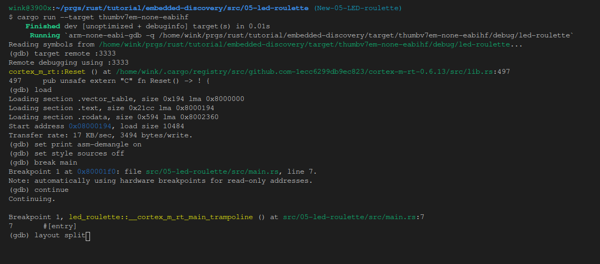

Discovery
Discover the world of microcontrollers through Rust!
This book is an introductory course on microcontroller-based embedded systems that uses Rust as the teaching language rather than the usual C/C++.
Scope
The following topics will be covered (eventually, I hope):
-
How to write, build, flash and debug an "embedded" (Rust) program.
-
Functionality ("peripherals") commonly found in microcontrollers: Digital input and output, Pulse Width Modulation (PWM), Analog to Digital Converters (ADC), common communication protocols like Serial, I2C and SPI, etc.
-
Multitasking concepts: cooperative vs preemptive multitasking, interrupts, schedulers, etc.
-
Control systems concepts: sensors, calibration, digital filters, actuators, open loop control, closed loop control, etc.
Approach
-
Beginner friendly. No previous experience with microcontrollers or embedded systems is required.
-
Hands on. Plenty of exercises to put the theory into practice. You will be doing most of the work here.
-
Tool centered. We'll make plenty use of tooling to ease development. "Real" debugging, with GDB, and logging will be introduced early on. Using LEDs as a debugging mechanism has no place here.
Non-goals
What's out of scope for this book:
-
Teaching Rust. There's plenty of material on that topic already. We'll focus on microcontrollers and embedded systems.
-
Being a comprehensive text about electric circuit theory or electronics. We'll just cover the minimum required to understand how some devices work.
-
Covering details such as linker scripts and the boot process. For example, we'll use existing tools to help get your code onto your board, but not go into detail about how those tools work.
Also I don't intend to port this material to other development boards; this book will make exclusive use of the STM32F3DISCOVERY development board.
Reporting problems
The source of this book is in this repository. If you encounter any typo or problem with the code report it on the issue tracker.
Other embedded Rust resources
This Discovery book is just one of several embedded Rust resources provided by the Embedded Working Group. The full selection can be found at The Embedded Rust Bookshelf. This includes the list of Frequently Asked Questions.
Sponsored by

Many thanks to integer 32 for sponsoring me to work on this book! Please give them lots of work (they do Rust consulting!) so they'll have no choice but to hire more Rustaceans <3.
Background
What's a microcontroller?
A microcontroller is a system on a chip. Whereas your computer is made up of several discrete components: a processor, RAM sticks, a hard drive, an ethernet port, etc.; a microcontroller has all those components built into a single "chip" or package. This makes it possible to build systems with a minimal part count.
What can you do with a microcontroller?
Lots of things! Microcontrollers are the central part of systems known as embedded systems. These systems are everywhere but you don't usually notice them. These systems control the brakes of your car, wash your clothes, print your documents, keep you warm, keep you cool, optimize the fuel consumption of your car, etc.
The main trait of these systems is that they operate without user intervention even if they expose a user interface as a washing machine does; most of their operation is done on their own.
The other common trait of these systems is that they control a process. And for that these systems usually have one or more sensors and one or more actuators. For example, an HVAC system has several sensors, thermometers, and humidity sensors spread across some areas, and several actuators as well, heating elements and fans connected to ducts.
When should I use a microcontroller?
All these applications I've mentioned, you can probably implement with a Raspberry Pi, a computer that runs Linux. Why should I bother with a microcontroller that operates without an OS? Sounds like it would be harder to develop a program.
The main reason is cost. A microcontroller is much cheaper than a general-purpose computer. Not only the microcontroller is cheaper; it also requires many fewer external electrical components to operate. This makes Printed Circuit Boards (PCBs) smaller and cheaper to design and manufacture.
The other big reason is power consumption. A microcontroller consumes orders of magnitude less power than a full-blown processor. If your application will run on batteries that makes a huge difference.
And last but not least: (hard) real-time constraints. Some processes require their controllers to respond to some events within some time interval (e.g. a quadcopter/drone hit by a wind gust). If this deadline is not met, the process could end in catastrophic failure (e.g. the drone crashes to the ground). A general-purpose computer running a general-purpose OS has many services running in the background. This makes it hard to guarantee the execution of a program within tight time constraints.
When should I not use a microcontroller?
Where heavy computations are involved. To keep their power consumption low, microcontrollers have very limited computational resources available to them. For example, some microcontrollers don't even have hardware support for floating-point operations. On those devices, performing a simple addition of single-precision numbers can take hundreds of CPU cycles.
Why use Rust and not C?
Hopefully, I don't need to convince you here as you are probably familiar with the language differences between Rust and C. One point I do want to bring up is package management. C lacks an official, widely accepted package management solution whereas Rust has Cargo. This makes development much easier. And, IMO, easy package management encourages code reuse because libraries can be easily integrated into an application which is also a good thing as libraries get more "battle testing".
Why should I not use Rust?
Or why should I prefer C over Rust?
The C ecosystem is way more mature. Off the shelf solution for several problems already exist. If you need to control a time-sensitive process, you can grab one of the existing commercial Real-Time Operating Systems (RTOS) out there and solve your problem. There are no commercial, production-grade RTOSes in Rust yet so you would have to either create one yourself or try one of the ones that are in development.
Hardware/knowledge requirements
The primary knowledge requirement to read this book is to know some Rust. It's
hard for me to quantify some but at least I can tell you that you don't need
to fully grok generics but you do need to know how to use closures. You also
need to be familiar with the idioms of the 2018 edition, in particular with
the fact that extern crate is not necessary in the 2018 edition.
Due to the nature of embedded programming, it will also be extremely helpful to understand how binary and hexadecimal representations of values work, as well as the use of some bitwise operators. For example, it would be useful to understand how the following program produces its output.
fn main() { let a = 0x4000_0000 + 0xa2; // Use of the bit shift "<<" operation. let b = 1 << 5; // {:X} will format values as hexadecimal println!("{:X}: {:X}", a, b); }
Also, to follow this material you'll need the following hardware:
(Some components are optional but recommended)
- A STM32F3DISCOVERY board.
(You can purchase this board from "big" electronics suppliers or from e-commerce sites)

- OPTIONAL. A 3.3V USB <-> Serial module. To elaborate: if you have one of the latest revisions of the discovery board (which is usually the case given the first revision was released years ago) then you do not need this module because the board includes this functionality on-board. If you have an older revision of the board then you'll need this module for chapters 10 and 11. For completeness, we'll include instructions for using a Serial module. The book will use this particular model but you can use any other model as long as it operates at 3.3V. The CH340G module, which you can buy from e-commerce sites works too and it's probably cheaper for you to get.

- OPTIONAL. A HC-05 Bluetooth module (with headers!). A HC-06 would work too.
(As with other Chinese parts, you pretty much can only find these on e-commerce sites. (US) Electronics suppliers don't usually stock these for some reason)

- Two mini-B USB cables. One is required to make the STM32F3DISCOVERY board work. The other is only required if you have the Serial <-> USB module. Make sure that the cables both support data transfer as some cables only support charging devices.

NOTE These are not the USB cables that ship with pretty much every Android phone; those are micro USB cables. Make sure you have the right thing!
- MOSTLY OPTIONAL. 5 female to female, 4 male to female and 1 Male to Male jumper (AKA Dupont) wires. You'll very likely need one female to female to get ITM working. The other wires are only needed if you'll be using the USB <-> Serial and Bluetooth modules.
(You can get these from electronics suppliers or from e-commerce sites)

FAQ: Wait, why do I need this specific hardware?
It makes my life and yours much easier.
The material is much, much more approachable if we don't have to worry about hardware differences. Trust me on this one.
FAQ: Can I follow this material with a different development board?
Maybe? It depends mainly on two things: your previous experience with microcontrollers and/or
whether there already exists a high level crate, like the f3, for your development board
somewhere.
With a different development board, this text would lose most if not all its beginner friendliness and "easy to follow"-ness, IMO.
If you have a different development board and you don't consider yourself a total beginner, you are better off starting with the quickstart project template.
Setting up a development environment
Dealing with microcontrollers involves several tools as we'll be dealing with an architecture different than your computer's and we'll have to run and debug programs on a "remote" device.
Documentation
Tooling is not everything though. Without documentation it is pretty much impossible to work with microcontrollers.
We'll be referring to all these documents throughout this book:
HEADS UP All these links point to PDF files and some of them are hundreds of pages long and several MBs in size.
- STM32F3DISCOVERY User Manual
- STM32F303VC Datasheet
- STM32F303VC Reference Manual
- LSM303DLHC *
- L3GD20 *
* NOTE: Newer (from around 2020/09) Discovery boards may have a different e-compass and gyroscope (see the user manual). As such, much in chapters 14-16 will not work as is. Checkout the github issues like this.
Tools
We'll use all the tools listed below. Where a minimum version is not specified, any recent version should work but we have listed the version we have tested.
-
Rust 1.31 or a newer toolchain. Chapter USART requires 1.51 or newer.
-
itmdump>=0.3.1 (cargo install itm). Tested versions: 0.3.1. -
OpenOCD >=0.8. Tested versions: v0.9.0 and v0.10.0
-
arm-none-eabi-gdb. Version 7.12 or newer highly recommended. Tested versions: 7.10, 7.11, 7.12 and 8.1 -
cargo-binutils. Version 0.1.4 or newer.
-
minicomon Linux and macOS. Tested version: 2.7. Readers report thatpicocomalso works but we'll useminicomin this text. -
PuTTYon Windows.
If your computer has Bluetooth functionality and you have the Bluetooth module, you can additionally install these tools to play with the Bluetooth module. All these are optional:
- Linux, only if you don't have a Bluetooth manager application like Blueman.
bluezhcitoolrfcommrfkill
macOS / OSX / Windows users only need the default bluetooth manager that ships with their OS.
Next, follow OS-agnostic installation instructions for a few of the tools:
rustc & Cargo
Install rustup by following the instructions at https://rustup.rs.
If you already have rustup installed double check that you are on the stable
channel and your stable toolchain is up to date. rustc -V should return a date
newer than the one shown below:
$ rustc -V
rustc 1.31.0 (abe02cefd 2018-12-04)
itmdump
cargo install itm
Verify the version is >=0.3.1
$ itmdump -V
itmdump 0.3.1
cargo-binutils
Install llvm-tools-preview
rustup component add llvm-tools-preview
Install cargo-binutils
cargo install cargo-binutils
Verify tools are installed
Run the following commands at your terminal
cargo new test-size
cd test-size
cargo run
cargo size -- --version
The results should be something like:
~
$ cargo new test-size
Created binary (application) `test-size` package
~
$ cd test-size
~/test-size (main)
$ cargo run
Compiling test-size v0.1.0 (~/test-size)
Finished dev [unoptimized + debuginfo] target(s) in 0.26s
Running `target/debug/test-size`
Hello, world!
~/test-size (main)
$ cargo size -- --version
Finished dev [unoptimized + debuginfo] target(s) in 0.00s
LLVM (http://llvm.org/):
LLVM version 11.0.0-rust-1.50.0-stable
Optimized build.
Default target: x86_64-unknown-linux-gnu
Host CPU: znver2
OS specific instructions
Now follow the instructions specific to the OS you are using:
Linux
Here are the installation commands for a few Linux distributions.
REQUIRED packages
Ubuntu 18.04 or newer / Debian stretch or newer
NOTE
gdb-multiarchis the GDB command you'll use to debug your ARM Cortex-M programs
sudo apt-get install \
gdb-multiarch \
minicom \
openocd
Ubuntu 14.04 and 16.04
NOTE
arm-none-eabi-gdbis the GDB command you'll use to debug your ARM Cortex-M programs
sudo apt-get install \
gdb-arm-none-eabi \
minicom \
openocd
Fedora 23 or newer
sudo dnf install \
minicom \
openocd \
gdb
Arch Linux
NOTE
arm-none-eabi-gdbis the GDB command you'll use to debug your ARM Cortex-M programs
sudo pacman -S \
arm-none-eabi-gdb \
minicom \
openocd
Other distros
NOTE
arm-none-eabi-gdbis the GDB command you'll use to debug your ARM Cortex-M programs
For distros that don't have packages for ARM's pre-built
toolchain,
download the "Linux 64-bit" file and put its bin directory on your path.
Here's one way to do it:
mkdir -p ~/local && cd ~/local
tar xjf /path/to/downloaded/file/gcc-arm-none-eabi-10-2020-q4-major-x86_64-linux.tar.bz2
Then, use your editor of choice to append to your PATH in the appropriate
shell init file (e.g. ~/.zshrc or ~/.bashrc):
PATH=$PATH:$HOME/local/gcc-arm-none-eabi-10-2020-q4-major-x86_64-linux/bin
Optional packages
Ubuntu / Debian
sudo apt-get install \
bluez \
rfkill
Fedora
sudo dnf install \
bluez \
rfkill
Arch Linux
sudo pacman -S \
bluez \
bluez-utils \
rfkill
udev rules
These rules let you use USB devices like the F3 and the Serial module without root privilege, i.e.
sudo.
Create 99-openocd.rules in /etc/udev/rules.d using the idVendor and idProduct
from the lsusb output.
For example, connect the STM32F3DISCOVERY to your computer using a USB cable. Be sure to connect the cable to the "USB ST-LINK" port, the USB port in the center of the edge of the board.
Execute lsusb:
lsusb | grep ST-LINK
It should result in something like:
$ lsusb | grep ST-LINK
Bus 003 Device 003: ID 0483:374b STMicroelectronics ST-LINK/V2.1
So the idVendor is 0483 and idProduct is 374b.
Create /etc/udev/rules.d/99-openocd.rules:
sudo vi /etc/udev/rules.d/99-openocd.rules
With the contents:
# STM32F3DISCOVERY - ST-LINK/V2.1
ATTRS{idVendor}=="0483", ATTRS{idProduct}=="374b", MODE:="0666"
For older devices with OPTIONAL USB <-> FT232 based Serial Module
Create /etc/udev/rules.d/99-ftdi.rules:
sudo vi /etc/udev/rules.d/99-openocd.rules
With the contents:
# FT232 - USB <-> Serial Converter
ATTRS{idVendor}=="0403", ATTRS{idProduct}=="6001", MODE:="0666"
Reload the udev rules with:
sudo udevadm control --reload-rules
If you had any board plugged to your computer, unplug them and then plug them in again.
Now, go to the next section.
Windows
arm-none-eabi-gdb
ARM provides .exe installers for Windows. Grab one from here, and follow the instructions.
Just before the installation process finishes tick/select the "Add path to environment variable"
option. Then verify that the tools are in your %PATH%:
Verify gcc is installed:
arm-none-eabi-gcc -v
The results should be something like:
(..)
$ arm-none-eabi-gcc -v
gcc version 5.4.1 20160919 (release) (..)
OpenOCD
There's no official binary release of OpenOCD for Windows but there are unofficial releases
available here. Grab the 0.10.x zipfile and extract it somewhere in your drive (I
recommend C:\OpenOCD but with the drive letter that makes sense to you) then update your %PATH%
environment variable to include the following path: C:\OpenOCD\bin (or the path that you used
before).
Verify OpenOCD is installed and in your %PATH% with:
openocd -v
The results should be something like:
$ openocd -v
Open On-Chip Debugger 0.10.0
(..)
PuTTY
Download the latest putty.exe from this site and place it somewhere in your %PATH%.
ST-LINK USB driver
You'll also need to install this USB driver or OpenOCD won't work. Follow the installer instructions and make sure you install the right (32-bit or 64-bit) version of the driver.
That's all! Go to the next section.
macOS
All the tools can be install using Homebrew:
Install ArmMbed
brew tap ArmMbed/homebrew-formulae
Install the ARM GCC toolchain
brew install arm-none-eabi-gcc
Install minicom and OpenOCD
brew install minicom openocd
That's all! Go to the next section.
Verify the installation
Let's verify that all the tools were installed correctly.
Linux only
Verify permissions
Connect the STM32F3DISCOVERY to your computer using an USB cable. Be sure to connect the cable to the "USB ST-LINK" port, the USB port in the center of the edge of the board.
The STM32F3DISCOVERY should now appear as a USB device (file) in /dev/bus/usb. Let's find out how it got
enumerated:
lsusb | grep -i stm
This should result in:
$ lsusb | grep -i stm
Bus 003 Device 004: ID 0483:374b STMicroelectronics ST-LINK/V2.1
$ # ^^^ ^^^
In my case, the STM32F3DISCOVERY got connected to the bus #3 and got enumerated as the device #4. This means the
file /dev/bus/usb/003/004 is the STM32F3DISCOVERY. Let's check its permissions:
$ ls -la /dev/bus/usb/003/004
crw-rw-rw-+ 1 root root 189, 259 Feb 28 13:32 /dev/bus/usb/003/00
The permissions should be crw-rw-rw-. If it's not ... then check your udev
rules and try re-loading them with:
sudo udevadm control --reload-rules
For older devices with OPTIONAL USB <-> FT232 based Serial Module
Unplug the STM32F3DISCOVERY and plug the Serial module. Now, figure out what's its associated file:
$ lsusb | grep -i ft232
Bus 003 Device 005: ID 0403:6001 Future Technology Devices International, Ltd FT232 Serial (UART) IC
In my case, it's the /dev/bus/usb/003/005. Now, check its permissions:
$ ls -l /dev/bus/usb/003/005
crw-rw-rw- 1 root root 189, 21 Sep 13 00:00 /dev/bus/usb/003/005
As before, the permissions should be crw-rw-rw-.
Verify OpenOCD connection
Connect the STM32F3DISCOVERY using the USB cable to the USB port in the center of edge of the board, the one that's labeled "USB ST-LINK".
Two red LEDs should turn on right after connecting the USB cable to the board.
IMPORTANT There is more than one hardware revision of the STM32F3DISCOVERY board. For older revisions, you'll need to change the "interface" argument to
-f interface/stlink-v2.cfg(note: no-1at the end). Alternatively, older revisions can use-f board/stm32f3discovery.cfginstead of-f interface/stlink-v2-1.cfg -f target/stm32f3x.cfg.
NOTE OpenOCD v0.11.0 has deprecated
interface/stlink-v2.cfgin favor ofinterface/stlink.cfgwhich supports ST-LINK/V1, ST-LINK/V2, ST-LINK/V2-1, and ST-LINK/V3.
*Nix
FYI: The
interfacedirectory is typically located in/usr/share/openocd/scripts/, which is the default location OpenOCD expects these files. If you've installed them somewhere else use the-s /path/to/scripts/option to specify your install directory.
openocd -f interface/stlink-v2-1.cfg -f target/stm32f3x.cfg
or
openocd -f interface/stlink.cfg -f target/stm32f3x.cfg
Windows
Below the references to C:\OpenOCD is the directory where OpenOCD is installed.
openocd -s C:\OpenOCD\share\scripts -f interface/stlink-v2-1.cfg -f target/stm32f3x.cfg
NOTE cygwin users have reported problems with the -s flag. If you run into that problem you can add
C:\OpenOCD\share\scripts\directory to the parameters.
cygwin users:
openocd -f C:\OpenOCD\share\scripts\interface\stlink-v2-1.cfg -f C:\OpenOCD\share\scripts\target\stm32f3x.cfg
All
OpenOCD is a service which forwards debug information from the ITM channel
to a file, itm.txt, as such it runs forever and does not return to the
terminal prompt.
The initial output of OpenOCD is something like:
Open On-Chip Debugger 0.10.0
Licensed under GNU GPL v2
For bug reports, read
http://openocd.org/doc/doxygen/bugs.html
Info : auto-selecting first available session transport "hla_swd". To override use 'transport select <transport>'.
adapter speed: 1000 kHz
adapter_nsrst_delay: 100
Info : The selected transport took over low-level target control. The results might differ compared to plain JTAG/SWD
none separate
Info : Unable to match requested speed 1000 kHz, using 950 kHz
Info : Unable to match requested speed 1000 kHz, using 950 kHz
Info : clock speed 950 kHz
Info : STLINK v2 JTAG v27 API v2 SWIM v15 VID 0x0483 PID 0x374B
Info : using stlink api v2
Info : Target voltage: 2.915608
Info : stm32f3x.cpu: hardware has 6 breakpoints, 4 watchpoints
(If you don't ... then check the general troubleshooting instructions.)
Also, one of the red LEDs, the one closest to the USB port, should start oscillating between red light and green light.
That's it! It works. You can now use Ctrl-c to stop OpenOCD or close/kill the terminal.
Meet your hardware
Let's get familiar with the hardware we'll be working with.
STM32F3DISCOVERY (the "F3")

We'll refer to this board as "F3" throughout this book. Here are some of the many components on the board:
- A microcontroller.
- A number of LEDs, including the eight aligned in a "compass" formation.
- Two buttons.
- Two USB ports.
- An accelerometer.
- A magnetometer.
- A gyroscope.
Of these components, the most important is the microcontroller (sometimes shortened to "MCU" for "microcontroller unit"), which is the large black square sitting in the center of your board. The MCU is what runs your code. You might sometimes read about "programming a board", when in reality what we are doing is programming the MCU that is installed on the board.
STM32F303VCT6 (the "STM32F3")
Since the MCU is so important, let's take a closer look at the one sitting on our board.
Our MCU is surrounded by 100 tiny metal pins. These pins are connected to traces, the little "roads" that act as the wires connecting components together on the board. The MCU can dynamically alter the electrical properties of the pins. This works similar to a light switch altering how electrical current flows through a circuit. By enabling or disabling electrical current to flow through a specific pin, an LED attached to that pin (via the traces) can be turned on and off.
Each manufacturer uses a different part numbering scheme, but many will allow
you to determine information about a component simply by looking at the part
number. Looking at our MCU's part number (STM32F303VCT6), the ST at the
front hints to us that this is a part manufactured by ST Microelectronics.
Searching through ST's marketing materials we can also learn the following:
- The
M32represents that this is an Arm-based 32-bit microcontroller. - The
F3represents that the MCU is from ST's "STM32F3" series. This is a series of MCUs based on the Cortex-M4 processor design. - The remainder of the part number goes into more details about things like extra features and RAM size, which at this point we're less concerned about.
Arm? Cortex-M4?
If our chip is manufactured by ST, then who is Arm? And if our chip is the STM32F3, what is the Cortex-M4?
You might be surprised to hear that while "Arm-based" chips are quite popular, the company behind the "Arm" trademark (Arm Holdings) doesn't actually manufacture chips for purchase. Instead, their primary business model is to just design parts of chips. They will then license those designs to manufacturers, who will in turn implement the designs (perhaps with some of their own tweaks) in the form of physical hardware that can then be sold. Arm's strategy here is different from companies like Intel, which both designs and manufactures their chips.
Arm licenses a bunch of different designs. Their "Cortex-M" family of designs are mainly used as the core in microcontrollers. For example, the Cortex-M0 is designed for low cost and low power usage. The Cortex-M7 is higher cost, but with more features and performance. The core of our STM32F3 is based on the Cortex-M4, which is in the middle: more features and performance than the Cortex-M0, but less expensive than the Cortex-M7.
Luckily, you don't need to know too much about different types of processors or Cortex designs for the sake of this book. However, you are hopefully now a bit more knowledgeable about the terminology of your device. While you are working specifically with an STM32F3, you might find yourself reading documentation and using tools for Cortex-M-based chips, as the STM32F3 is based on a Cortex-M design.
The Serial module

If you have an older revision of the discovery board, you can use this module to exchange data between the microcontroller in the F3 and your computer. This module will be connected to your computer using an USB cable. I won't say more at this point.
If you have a newer release of the board then you don't need this module. The ST-LINK will double as a USB<->serial converter connected to the microcontroller USART1 at pins PC4 and PC5.
The Bluetooth module

This module has the exact same purpose as the serial module but it sends the data over Bluetooth instead of over USB.
LED roulette
Alright, let's start by building the following application:

I'm going to give you a high level API to implement this app but don't worry we'll do low level stuff later on. The main goal of this chapter is to get familiar with the flashing and debugging process.
Throughout this text we'll be using the starter code that's in the discovery repository. Make sure you always have the latest version of the master branch because this website tracks that branch.
The starter code is in the src directory of that repository. Inside that directory there are more
directories named after each chapter of this book. Most of those directories are starter Cargo
projects.
Now, jump into the src/05-led-roulette directory. Check the src/main.rs file:
#![deny(unsafe_code)] #![no_main] #![no_std] use aux5::entry; #[entry] fn main() -> ! { let _y; let x = 42; _y = x; // infinite loop; just so we don't leave this stack frame loop {} }
Microcontroller programs are different from standard programs in two aspects: #![no_std] and
#![no_main].
The no_std attribute says that this program won't use the std crate, which assumes an underlying
OS; the program will instead use the core crate, a subset of std that can run on bare metal
systems (i.e., systems without OS abstractions like files and sockets).
The no_main attribute says that this program won't use the standard main interface, which is
tailored for command line applications that receive arguments. Instead of the standard main we'll
use the entry attribute from the cortex-m-rt crate to define a custom entry point. In this
program we have named the entry point "main", but any other name could have been used. The entry
point function must have the signature fn() -> !; this type indicates that the function can't
return this means that the program never terminates.
If you are a careful observer, you'll also notice there is a .cargo directory in the Cargo project
as well. This directory contains a Cargo configuration file (.cargo/config) that tweaks the
linking process to tailor the memory layout of the program to the requirements of the target device.
This modified linking process is a requirement of the cortex-m-rt crate. You'll also be making
further tweaks to .cargo/config in future sections to make building and debugging easier.
Alright, let's start by building this program.
Build it
The first step is to build our "binary" crate. Because the microcontroller has a different
architecture than your computer we'll have to cross compile. Cross compiling in Rust land is as simple
as passing an extra --target flag to rustcor Cargo. The complicated part is figuring out the
argument of that flag: the name of the target.
The microcontroller in the F3 has a Cortex-M4F processor in it. rustc knows how to cross compile
to the Cortex-M architecture and provides 4 different targets that cover the different processor
families within that architecture:
thumbv6m-none-eabi, for the Cortex-M0 and Cortex-M1 processorsthumbv7m-none-eabi, for the Cortex-M3 processorthumbv7em-none-eabi, for the Cortex-M4 and Cortex-M7 processorsthumbv7em-none-eabihf, for the Cortex-M4F and Cortex-M7F processors
For the F3, we'll use the thumbv7em-none-eabihf target. Before cross compiling you have to
download a pre-compiled version of the standard library (a reduced version of it actually) for your
target. That's done using rustup:
rustup target add thumbv7em-none-eabihf
You only need to do the above step once; rustup will re-install a new standard library
(rust-std component) whenever you update your toolchain.
With the rust-std component in place you can now cross compile the program using Cargo.
NOTE Make sure you are in the
src/05-led-roulettedirectory and runcargo buildcommand below to create the executable:
cargo build --target thumbv7em-none-eabihf
On your console you should see something like:
$ cargo build --target thumbv7em-none-eabihf
Compiling typenum v1.12.0
Compiling semver-parser v0.7.0
Compiling version_check v0.9.2
Compiling nb v1.0.0
Compiling void v1.0.2
Compiling autocfg v1.0.1
Compiling cortex-m v0.7.1
Compiling proc-macro2 v1.0.24
Compiling vcell v0.1.3
Compiling unicode-xid v0.2.1
Compiling stable_deref_trait v1.2.0
Compiling syn v1.0.60
Compiling bitfield v0.13.2
Compiling cortex-m v0.6.7
Compiling cortex-m-rt v0.6.13
Compiling r0 v0.2.2
Compiling stm32-usbd v0.5.1
Compiling stm32f3 v0.12.1
Compiling usb-device v0.2.7
Compiling cfg-if v1.0.0
Compiling paste v1.0.4
Compiling stm32f3-discovery v0.6.0
Compiling embedded-dma v0.1.2
Compiling volatile-register v0.2.0
Compiling nb v0.1.3
Compiling embedded-hal v0.2.4
Compiling semver v0.9.0
Compiling generic-array v0.14.4
Compiling switch-hal v0.3.2
Compiling num-traits v0.2.14
Compiling num-integer v0.1.44
Compiling rustc_version v0.2.3
Compiling bare-metal v0.2.5
Compiling cast v0.2.3
Compiling quote v1.0.9
Compiling generic-array v0.13.2
Compiling generic-array v0.12.3
Compiling generic-array v0.11.1
Compiling panic-itm v0.4.2
Compiling lsm303dlhc v0.2.0
Compiling as-slice v0.1.4
Compiling micromath v1.1.0
Compiling accelerometer v0.12.0
Compiling chrono v0.4.19
Compiling aligned v0.3.4
Compiling rtcc v0.2.0
Compiling cortex-m-rt-macros v0.1.8
Compiling stm32f3xx-hal v0.6.1
Compiling aux5 v0.2.0 (~/embedded-discovery/src/05-led-roulette/auxiliary)
Compiling led-roulette v0.2.0 (~/embedded-discovery/src/05-led-roulette)
Finished dev [unoptimized + debuginfo] target(s) in 17.91s
NOTE Be sure to compile this crate without optimizations. The provided Cargo.toml file and build command above will ensure optimizations are off.
OK, now we have produced an executable. This executable won't blink any LEDs, it's just a simplified version that we will build upon later in the chapter. As a sanity check, let's verify that the produced executable is actually an ARM binary:
cargo readobj --target thumbv7em-none-eabihf --bin led-roulette -- --file-header
The cargo readobj .. above is equivalent to
readelf -h target/thumbv7em-none-eabihf/debug/led-roulette
and should produce something similar to:
$ cargo readobj --target thumbv7em-none-eabihf --bin led-roulette -- --file-header
Finished dev [unoptimized + debuginfo] target(s) in 0.02s
ELF Header:
Magic: 7f 45 4c 46 01 01 01 00 00 00 00 00 00 00 00 00
Class: ELF32
Data: 2's complement, little endian
Version: 1 (current)
OS/ABI: UNIX - System V
ABI Version: 0
Type: EXEC (Executable file)
Machine: ARM
Version: 0x1
Entry point address: 0x8000195
Start of program headers: 52 (bytes into file)
Start of section headers: 818328 (bytes into file)
Flags: 0x5000400
Size of this header: 52 (bytes)
Size of program headers: 32 (bytes)
Number of program headers: 4
Size of section headers: 40 (bytes)
Number of section headers: 22
Section header string table index: 20
Next, we'll flash the program into our microcontroller.
Flash it
Flashing is the process of moving our program into the microcontroller's (persistent) memory. Once flashed, the microcontroller will execute the flashed program every time it is powered on.
In this case, our led-roulette program will be the only program in the microcontroller memory.
By this I mean that there's nothing else running on the microcontroller: no OS, no "daemon",
nothing. led-roulette has full control over the device.
Onto the actual flashing. First thing we need to do is launch OpenOCD. We did that in the
previous section but this time we'll run the command inside a temporary directory (/tmp on *nix;
%TEMP% on Windows).
Make sure the F3 is connected to your computer and run the following commands in a new terminal.
For *nix & MacOS:
cd /tmp
openocd -f interface/stlink-v2-1.cfg -f target/stm32f3x.cfg
For Windows Note: substitute C: for the actual OpenOCD path:
cd %TEMP%
openocd -s C:\share\scripts -f interface/stlink-v2-1.cfg -f target/stm32f3x.cfg
NOTE Older revisions of the board need to pass slightly different arguments to
openocd. Review this section for the details.
The program will block; leave that terminal open.
Now it's a good time to explain what the openocd command is actually doing.
I mentioned that the STM32F3DISCOVERY (aka F3) actually has two microcontrollers. One of them is used as a programmer/debugger. The part of the board that's used as a programmer is called ST-LINK (that's what STMicroelectronics decided to call it). This ST-LINK is connected to the target microcontroller using a Serial Wire Debug (SWD) interface (this interface is an ARM standard so you'll run into it when dealing with other Cortex-M based microcontrollers). This SWD interface can be used to flash and debug a microcontroller. The ST-LINK is connected to the "USB ST-LINK" port and will appear as a USB device when you connect the F3 to your computer.

As for OpenOCD, it's software that provides some services like a GDB server on top of USB devices that expose a debugging protocol like SWD or JTAG.
Onto the actual command: those .cfg files we are using instruct OpenOCD to look for a ST-LINK USB
device (interface/stlink-v2-1.cfg) and to expect a STM32F3XX microcontroller
(target/stm32f3x.cfg) to be connected to the ST-LINK.
The OpenOCD output looks like this:
$ openocd -f interface/stlink-v2-1.cfg -f target/stm32f3x.cfg
Open On-Chip Debugger 0.10.0
Licensed under GNU GPL v2
For bug reports, read
http://openocd.org/doc/doxygen/bugs.html
Info : auto-selecting first available session transport "hla_swd". To override use 'transport select <transport>'.
adapter speed: 1000 kHz
adapter_nsrst_delay: 100
Info : The selected transport took over low-level target control. The results might differ compared to plain JTAG/SWD
none separate
Info : Unable to match requested speed 1000 kHz, using 950 kHz
Info : Unable to match requested speed 1000 kHz, using 950 kHz
Info : clock speed 950 kHz
Info : STLINK v2 JTAG v37 API v2 SWIM v26 VID 0x0483 PID 0x374B
Info : using stlink api v2
Info : Target voltage: 2.888183
Info : stm32f3x.cpu: hardware has 6 breakpoints, 4 watchpoints
The "6 breakpoints, 4 watchpoints" part indicates the debugging features the processor has available.
Leave that openocd process running, and in the previous terminal or a new terminal
make sure that you are inside the project's src/05-led-roulette/ directory.
I mentioned that OpenOCD provides a GDB server so let's connect to that right now:
Execute GDB
First, we need to determine what version of gdb you have that is capable of debugging ARM binaries.
This could be any one of the commands below, try each one:
arm-none-eabi-gdb -q -ex "target remote :3333" target/thumbv7em-none-eabihf/debug/led-roulette
gdb-multiarch -q -ex "target remote :3333" target/thumbv7em-none-eabihf/debug/led-roulette
gdb -q -ex "target remote :3333" target/thumbv7em-none-eabihf/debug/led-roulette
Failing case
You can detect a failing case if there is a warning or error after the Remote debugging using :3333 line:
$ gdb -q -ex "target remote :3333" target/thumbv7em-none-eabihf/debug/led-roulette
Reading symbols from target/thumbv7em-none-eabihf/debug/led-roulette...
Remote debugging using :3333
warning: Architecture rejected target-supplied description
Truncated register 16 in remote 'g' packet
(gdb)
Successful case
Successful case 1:
$ arm-none-eabi-gdb -q -ex "target remote :3333" target/thumbv7em-none-eabihf/debug/led-roulette
Reading symbols from target/thumbv7em-none-eabihf/debug/led-roulette...
Remote debugging using :3333
cortex_m_rt::Reset () at ~/.cargo/registry/src/github.com-1ecc6299db9ec823/cortex-m-rt-0.6.13/src/lib.rs:497
497 pub unsafe extern "C" fn Reset() -> ! {
(gdb)
Successful case 2:
~/embedded-discovery/src/05-led-roulette (master)
$ arm-none-eabi-gdb -q -ex "target remote :3333" target/thumbv7em-none-eabihf/debug/led-roulette
Reading symbols from target/thumbv7em-none-eabihf/debug/led-roulette...
Remote debugging using :3333
0x00000000 in ?? ()
(gdb)
In both failing and successful cases you should see new output in the OpenOCD terminal, something like the following:
Info : stm32f3x.cpu: hardware has 6 breakpoints, 4 watchpoints
+Info : accepting 'gdb' connection on tcp/3333
+Info : device id = 0x10036422
+Info : flash size = 256kbytes
NOTE If you are getting an error like
undefined debug reason 7 - target needs reset, you can try runningmonitor reset haltas described here.
By default OpenOCD's GDB server listens on TCP port 3333 (localhost). This command is connecting to that port.
Update ../.cargo/config.toml
Now that you've successfully determined which debugger you need to use
we need to change ../.cargo/config.toml so that the cargo run command will succeed.
NOTE
cargois the Rust package manager and you can read about it here.
Get back to the terminal prompt and look at ../.cargo/config.toml:
~/embedded-discovery/src/05-led-roulette
$ cat ../.cargo/config.toml
[target.thumbv7em-none-eabihf]
runner = "arm-none-eabi-gdb -q"
# runner = "gdb-multiarch -q"
# runner = "gdb -q"
rustflags = [
"-C", "link-arg=-Tlink.x",
]
[build]
target = "thumbv7em-none-eabihf"
Use your favorite editor to edit ../.cargo/config.toml so that the
runner line contains the correct name of that debugger:
nano ../.cargo/config.toml
For example, if your debugger was gdb-multiarch then after
editing the git diff should be:
$ git diff ../.cargo/config.toml
diff --git a/src/.cargo/config.toml b/src/.cargo/config.toml
index ddff17f..8512cfe 100644
--- a/src/.cargo/config.toml
+++ b/src/.cargo/config.toml
@@ -1,6 +1,6 @@
[target.thumbv7em-none-eabihf]
-runner = "arm-none-eabi-gdb -q"
-# runner = "gdb-multiarch -q"
+# runner = "arm-none-eabi-gdb -q"
+runner = "gdb-multiarch -q"
# runner = "gdb -q"
rustflags = [
"-C", "link-arg=-Tlink.x",
Now that you have ../.cargo/config.toml setup let's test it using cargo run to
start the debug session.
NOTE The
--target thumbv7em-none-eabihfdefines which architecture to build and run. In our../.cargo/config.tomlfile we havetarget = "thumbv7em-none-eabihf"so it is actually not necessary to specify--targetwe do it here just so you know that parameters on the command line can be used and they override those inconfig.tomlfiles.
cargo run --target thumbv7em-none-eabihf
Results in:
~/embedded-discovery/src/05-led-roulette
$ cargo run --target thumbv7em-none-eabihf
Finished dev [unoptimized + debuginfo] target(s) in 0.01s
Running `arm-none-eabi-gdb -q ~/embedded-discovery/target/thumbv7em-none-eabihf/debug/led-roulette`
Reading symbols from ~/embedded-discovery/target/thumbv7em-none-eabihf/debug/led-roulette...
Now issue the target remote :3333 to connect to the OpenOCD server
and connect to the F3:
(gdb) target remote :3333
Remote debugging using :3333
0x00000000 in ?? ()
Bravo, we will be modifying ../.cargo/config.toml in future. But, since
this file is shared with all of the chapters those changes should be made with
that in mind. If you want or we need to make changes that only pertain to
a particular chapter then create a .cargo/config.toml local to that chapter
directory.
Flash the device
Assuming you have GDB running, if not start it as suggested in the previous section.
Now use the load command in gdb to actually flash the program into the device:
(gdb) load
Loading section .vector_table, size 0x194 lma 0x8000000
Loading section .text, size 0x20ec lma 0x8000194
Loading section .rodata, size 0x514 lma 0x8002280
Start address 0x08000194, load size 10132
Transfer rate: 17 KB/sec, 3377 bytes/write.
You'll also see new output in the OpenOCD terminal, something like:
Info : flash size = 256kbytes
+Info : Unable to match requested speed 1000 kHz, using 950 kHz
+Info : Unable to match requested speed 1000 kHz, using 950 kHz
+adapter speed: 950 kHz
+target halted due to debug-request, current mode: Thread
+xPSR: 0x01000000 pc: 0x08000194 msp: 0x2000a000
+Info : Unable to match requested speed 8000 kHz, using 4000 kHz
+Info : Unable to match requested speed 8000 kHz, using 4000 kHz
+adapter speed: 4000 kHz
+target halted due to breakpoint, current mode: Thread
+xPSR: 0x61000000 pc: 0x2000003a msp: 0x2000a000
+Info : Unable to match requested speed 1000 kHz, using 950 kHz
+Info : Unable to match requested speed 1000 kHz, using 950 kHz
+adapter speed: 950 kHz
+target halted due to debug-request, current mode: Thread
+xPSR: 0x01000000 pc: 0x08000194 msp: 0x2000a000
Our program is loaded, let's debug it!
Debug it
We are already inside a debugging session so let's debug our program.
After the load command, our program is stopped at its entry point. This is indicated by the
"Start address 0x8000XXX" part of GDB's output. The entry point is the part of a program that a
processor / CPU will execute first.
The starter project I've provided to you has some extra code that runs before the main function.
At this time, we are not interested in that "pre-main" part so let's skip right to the beginning of
the main function. We'll do that using a breakpoint. Issue break main at the (gdb) prompt:
NOTE For these GDB commands I generally won't provide a copyable code block as these are short and it's faster just to type them yourself. In addition most can be shortened. For instance
bforbreakorsforstep, see GDB Quick Reference for more info or use Google to find your others. In addition, you can use tab completion by typing the first few letters than one tab to complete or two tabs to see all possible commands.Finally,
help xxxxwhere xxxx is the command will provide short names and other info:(gdb) help s step, s Step program until it reaches a different source line. Usage: step [N] Argument N means step N times (or till program stops for another reason).
(gdb) break main
Breakpoint 1 at 0x80001f0: file src/05-led-roulette/src/main.rs, line 7.
Note: automatically using hardware breakpoints for read-only addresses.
Next issue a continue command:
(gdb) continue
Continuing.
Breakpoint 1, led_roulette::__cortex_m_rt_main_trampoline () at src/05-led-roulette/src/main.rs:7
7 #[entry]
Breakpoints can be used to stop the normal flow of a program. The continue command will let the
program run freely until it reaches a breakpoint. In this case, until it reaches #[entry]
which is a trampoline to the main function and where break main sets the breakpoint.
Note that GDB output says "Breakpoint 1". Remember that our processor can only use six of these breakpoints so it's a good idea to pay attention to these messages.
OK. Since we are stopped at #[entry] and using the disassemble /m we see the code
for entry, which is a trampoline to main. That means it sets up the stack and then
invokes a subroutine call to the main function using an ARM branch and link instruction, bl.
(gdb) disassemble /m
Dump of assembler code for function main:
7 #[entry]
0x080001ec <+0>: push {r7, lr}
0x080001ee <+2>: mov r7, sp
=> 0x080001f0 <+4>: bl 0x80001f6 <_ZN12led_roulette18__cortex_m_rt_main17he61ef18c060014a5E>
0x080001f4 <+8>: udf #254 ; 0xfe
End of assembler dump.
Next we need to issue a step GDB command which will advance the program statement
by statement stepping into functions/procedures. So after this first step command we're
inside main and are positioned at the first executable rust statement, line 10, but it is
not executed:
(gdb) step
led_roulette::__cortex_m_rt_main () at src/05-led-roulette/src/main.rs:10
10 let x = 42;
Next we'll issue a second step which executes line 10 and stops at
line 11 _y = x;, again line 11 is not executed.
NOTE We could have pressed enter at the second
(gdb)prompt and it would have reissued the previous statement,step, but for clarity in this tutorial we'll generally retype the command.
(gdb) step
11 _y = x;
As you can see, in this mode, on each step command GDB will print the current statement along
with its line number. As you'll see later in the TUI mode you'll not see the statement
in the command area.
We are now "on" the _y = x statement; that statement hasn't been executed yet. This means that x
is initialized but _y is not. Let's inspect those stack/local variables using the print
command, p for short:
(gdb) print x
$1 = 42
(gdb) p &x
$2 = (*mut i32) 0x20009fe0
(gdb) p _y
$3 = 536870912
(gdb) p &_y
$4 = (*mut i32) 0x20009fe4
As expected, x contains the value 42. _y, however, contains the value 536870912 (?). This
is because _y has not been initialized yet, it contains some garbage value.
The command print &x prints the address of the variable x. The interesting bit here is that GDB
output shows the type of the reference: *mut i32, a mutable pointer to an i32 value. Another
interesting thing is that the addresses of x and _y are very close to each other: their
addresses are just 4 bytes apart.
Instead of printing the local variables one by one, you can also use the info locals command:
(gdb) info locals
x = 42
_y = 536870912
OK. With another step, we'll be on top of the loop {} statement:
(gdb) step
14 loop {}
And _y should now be initialized.
(gdb) print _y
$5 = 42
If we use step again on top of the loop {} statement, we'll get stuck because the program will
never pass that statement.
NOTE If you used the
stepor any other command by mistake and GDB gets stuck, you can get it unstuck by hittingCtrl+C.
As introduced above the disassemble /m command can be used to disassemble the program around the
line you are currently at. You might also want to set print asm-demangle on
so the names are demangled, this only needs to be done once a debug session. Later
this and other commands will be placed in an initialization file which will simplify
starting a debug session.
(gdb) set print asm-demangle on
(gdb) disassemble /m
Dump of assembler code for function _ZN12led_roulette18__cortex_m_rt_main17h51e7c3daad2af251E:
8 fn main() -> ! {
0x080001f6 <+0>: sub sp, #8
0x080001f8 <+2>: movs r0, #42 ; 0x2a
9 let _y;
10 let x = 42;
0x080001fa <+4>: str r0, [sp, #0]
11 _y = x;
0x080001fc <+6>: str r0, [sp, #4]
12
13 // infinite loop; just so we don't leave this stack frame
14 loop {}
=> 0x080001fe <+8>: b.n 0x8000200 <led_roulette::__cortex_m_rt_main+10>
0x08000200 <+10>: b.n 0x8000200 <led_roulette::__cortex_m_rt_main+10>
End of assembler dump.
See the fat arrow => on the left side? It shows the instruction the processor will execute next.
Also, as mentioned above if you were to execute the step command GDB gets stuck because it
is executing a branch instruction to itself and never gets past it. So you need to use
Ctrl+C to regain control. An alternative is to use the stepi(si) GDB command, which steps
one asm instruction, and GDB will print the address and line number of the statement
the processor will execute next and it won't get stuck.
(gdb) stepi
0x08000194 14 loop {}
(gdb) si
0x08000194 14 loop {}
One last trick before we move to something more interesting. Enter the following commands into GDB:
(gdb) monitor reset halt
Unable to match requested speed 1000 kHz, using 950 kHz
Unable to match requested speed 1000 kHz, using 950 kHz
adapter speed: 950 kHz
target halted due to debug-request, current mode: Thread
xPSR: 0x01000000 pc: 0x08000194 msp: 0x2000a000
(gdb) continue
Continuing.
Breakpoint 1, led_roulette::__cortex_m_rt_main_trampoline () at src/05-led-roulette/src/main.rs:7
7 #[entry]
(gdb) disassemble /m
Dump of assembler code for function main:
7 #[entry]
0x080001ec <+0>: push {r7, lr}
0x080001ee <+2>: mov r7, sp
=> 0x080001f0 <+4>: bl 0x80001f6 <led_roulette::__cortex_m_rt_main>
0x080001f4 <+8>: udf #254 ; 0xfe
End of assembler dump.
We are now back at the beginning of #[entry]!
monitor reset halt will reset the microcontroller and stop it right at the beginning of the program.
The continue command will then let the program run freely until it reaches a breakpoint, in
this case it is the breakpoint at #[entry].
This combo is handy when you, by mistake, skipped over a part of the program that you were interested in inspecting. You can easily roll back the state of your program back to its very beginning.
The fine print: This
resetcommand doesn't clear or touch RAM. That memory will retain its values from the previous run. That shouldn't be a problem though, unless your program behavior depends of the value of uninitialized variables but that's the definition of Undefined Behavior (UB).
We are done with this debug session. You can end it with the quit command.
(gdb) quit
A debugging session is active.
Inferior 1 [Remote target] will be detached.
Quit anyway? (y or n) y
Detaching from program: $PWD/target/thumbv7em-none-eabihf/debug/led-roulette, Remote target
Ending remote debugging.
For a nicer debugging experience, you can use GDB's Text User Interface (TUI). To enter into that mode enter one of the following commands in the GDB shell:
(gdb) layout src
(gdb) layout asm
(gdb) layout split
NOTE Apologies to Windows users, the GDB shipped with the GNU ARM Embedded Toolchain may not support this TUI mode
:-(.
Below is an example of setting up for a layout split by executing the follow commands.
As you can see we've dropped passing the --target parameter:
$ cargo run
(gdb) target remote :3333
(gdb) load
(gdb) set print asm-demangle on
(gdb) set style sources off
(gdb) break main
(gdb) continue
Here is a command line with the above commands as -ex parameters to save you some typing,
shortly we'll be providing an easier way to execute the initial set of commands:
cargo run -- -q -ex 'target remote :3333' -ex 'load' -ex 'set print asm-demangle on' -ex 'set style sources off' -ex 'b main' -ex 'c' target/thumbv7em-none-eabihf/debug/led-roulette
And below is the result:

Now we'll scroll the top source window down so we see the entire file and execute layout split and then step:

Then we'll execute a few info locals and step's:
(gdb) info locals
(gdb) step
(gdb) info locals
(gdb) step
(gdb) info locals

At any point you can leave the TUI mode using the following command:
(gdb) tui disable

NOTE If the default GDB CLI is not to your liking check out gdb-dashboard. It uses Python to turn the default GDB CLI into a dashboard that shows registers, the source view, the assembly view and other things.
Don't close OpenOCD though! We'll use it again and again later on. It's better just to leave it running. If you want to learn more about what GDB can do, check out the section How to use GDB.
What's next? The high level API I promised.
The Led and Delay abstractions
Now, I'm going to introduce two high level abstractions that we'll use to implement the LED roulette application.
The auxiliary crate, aux5, exposes an initialization function called init. When called this
function returns two values packed in a tuple: a Delay value and a LedArray value.
Delay can be used to block your program for a specified amount of milliseconds.
LedArray is an array of eight Leds. Each Led represents one of the LEDs on the F3 board,
and exposes two methods: on and off which can be used to turn the LED on or off, respectively.
Let's try out these two abstractions by modifying the starter code to look like this:
#![deny(unsafe_code)] #![no_main] #![no_std] use aux5::{entry, Delay, DelayMs, LedArray, OutputSwitch}; #[entry] fn main() -> ! { let (mut delay, mut leds): (Delay, LedArray) = aux5::init(); let half_period = 500_u16; loop { leds[0].on().ok(); delay.delay_ms(half_period); leds[0].off().ok(); delay.delay_ms(half_period); } }
Now build it:
cargo build
NOTE It's possible to forget to rebuild the program before starting a GDB session; this omission can lead to very confusing debug sessions. To avoid this problem you can call just
cargo runinstead ofcargo build;cargo run. Thecargo runcommand will build and start a debug session ensuring you never forget to recompile your program.
Now we'll run and repeat the flashing procedure as we did in the previous section
but with the new program. I'll let you type in the cargo run, this will get easier shortly. :)
Note:
Don't forget to start openocd (debugger) on a separate terminal. Otherwise target remote :3333 won't work!
$ cargo run
Finished dev [unoptimized + debuginfo] target(s) in 0.01s
Running `arm-none-eabi-gdb -q ~/embedded-discovery/target/thumbv7em-none-eabihf/debug/led-roulette`
Reading symbols from ~/embedded-discovery/target/thumbv7em-none-eabihf/debug/led-roulette...
(gdb) target remote :3333
Remote debugging using :3333
led_roulette::__cortex_m_rt_main_trampoline () at ~/embedded-discovery/src/05-led-roulette/src/main.rs:7
7 #[entry]
(gdb) load
Loading section .vector_table, size 0x194 lma 0x8000000
Loading section .text, size 0x52c0 lma 0x8000194
Loading section .rodata, size 0xb50 lma 0x8005454
Start address 0x08000194, load size 24484
Transfer rate: 21 KB/sec, 6121 bytes/write.
(gdb) break main
Breakpoint 1 at 0x8000202: file ~/embedded-discovery/src/05-led-roulette/src/main.rs, line 7.
Note: automatically using hardware breakpoints for read-only addresses.
(gdb) continue
Continuing.
Breakpoint 1, led_roulette::__cortex_m_rt_main_trampoline ()
at ~/embedded-discovery/src/05-led-roulette/src/main.rs:7
7 #[entry]
(gdb) step
led_roulette::__cortex_m_rt_main () at ~/embedded-discovery/src/05-led-roulette/src/main.rs:9
9 let (mut delay, mut leds): (Delay, LedArray) = aux5::init();
(gdb)
OK. Let's step through the code. This time, we'll use the next command instead of step. The
difference is that the next command will step over function calls instead of going inside them.
(gdb) next
11 let half_period = 500_u16;
(gdb) next
13 loop {
(gdb) next
14 leds[0].on().ok();
(gdb) next
15 delay.delay_ms(half_period);
After executing the leds[0].on().ok() statement, you should see a red LED, the one pointing North,
turn on.
Let's continue stepping over the program:
(gdb) next
17 leds[0].off().ok();
(gdb) next
18 delay.delay_ms(half_period);
The delay_ms call will block the program for half a second but you may not notice because the
next command also takes some time to execute. However, after stepping over the leds[0].off()
statement you should see the red LED turn off.
You can already guess what this program does. Let it run uninterrupted using the continue command.
(gdb) continue
Continuing.
Now, let's do something more interesting. We are going to modify the behavior of our program using GDB.
First, let's stop the infinite loop by hitting Ctrl+C. You'll probably end up somewhere inside
Led::on, Led::off or delay_ms:
^C
Program received signal SIGINT, Interrupt.
0x08003434 in core::ptr::read_volatile<u32> (src=0xe000e010)
at ~/.rustup/toolchains/stable-x86_64-unknown-linux-gnu/lib/rustlib/src/rust/library/core/src/ptr/mod.rs:1053
In my case, the program stopped its execution inside a read_volatile function. GDB output shows
some interesting information about that: core::ptr::read_volatile (src=0xe000e010). This means
that the function comes from the core crate and that it was called with argument src = 0xe000e010.
Just so you know, a more explicit way to show the arguments of a function is to use the info args
command:
(gdb) info args
src = 0xe000e010
Regardless of where your program may have stopped you can always look at the output of the
backtrace command (bt for short) to learn how it got there:
(gdb) backtrace
#0 0x08003434 in core::ptr::read_volatile<u32> (src=0xe000e010)
at ~/.rustup/toolchains/stable-x86_64-unknown-linux-gnu/lib/rustlib/src/rust/library/core/src/ptr/mod.rs:1053
#1 0x08002d66 in vcell::VolatileCell<u32>::get<u32> (self=0xe000e010) at ~/.cargo/registry/src/github.com-1ecc6299db9ec823/vcell-0.1.3/src/lib.rs:33
#2 volatile_register::RW<u32>::read<u32> (self=0xe000e010) at ~/.cargo/registry/src/github.com-1ecc6299db9ec823/volatile-register-0.2.0/src/lib.rs:75
#3 cortex_m::peripheral::SYST::has_wrapped (self=0x20009fa4)
at ~/.cargo/registry/src/github.com-1ecc6299db9ec823/cortex-m-0.6.4/src/peripheral/syst.rs:136
#4 0x08003004 in stm32f3xx_hal::delay::{{impl}}::delay_us (self=0x20009fa4, us=500000)
at ~/.cargo/registry/src/github.com-1ecc6299db9ec823/stm32f3xx-hal-0.5.0/src/delay.rs:58
#5 0x08002f3e in stm32f3xx_hal::delay::{{impl}}::delay_ms (self=0x20009fa4, ms=500)
at ~/.cargo/registry/src/github.com-1ecc6299db9ec823/stm32f3xx-hal-0.5.0/src/delay.rs:32
#6 0x08002f80 in stm32f3xx_hal::delay::{{impl}}::delay_ms (self=0x20009fa4, ms=500)
at ~/.cargo/registry/src/github.com-1ecc6299db9ec823/stm32f3xx-hal-0.5.0/src/delay.rs:38
#7 0x0800024c in led_roulette::__cortex_m_rt_main () at src/05-led-roulette/src/main.rs:15
#8 0x08000206 in led_roulette::__cortex_m_rt_main_trampoline () at src/05-led-roulette/src/main.rs:7
backtrace will print a trace of function calls from the current function down to main.
Back to our topic. To do what we are after, first, we have to return to the main function. We can
do that using the finish command. This command resumes the program execution and stops it again
right after the program returns from the current function. We'll have to call it several times.
(gdb) finish
Run till exit from #0 0x08003434 in core::ptr::read_volatile<u32> (src=0xe000e010)
at ~/.rustup/toolchains/stable-x86_64-unknown-linux-gnu/lib/rustlib/src/rust/library/core/src/ptr/mod.rs:1053
cortex_m::peripheral::SYST::has_wrapped (self=0x20009fa4)
at ~/.cargo/registry/src/github.com-1ecc6299db9ec823/cortex-m-0.6.4/src/peripheral/syst.rs:136
136 self.csr.read() & SYST_CSR_COUNTFLAG != 0
Value returned is $1 = 5
(..)
(gdb) finish
Run till exit from #0 0x08002f3e in stm32f3xx_hal::delay::{{impl}}::delay_ms (self=0x20009fa4, ms=500)
at ~/.cargo/registry/src/github.com-1ecc6299db9ec823/stm32f3xx-hal-0.5.0/src/delay.rs:32
0x08002f80 in stm32f3xx_hal::delay::{{impl}}::delay_ms (self=0x20009fa4, ms=500)
at ~/.cargo/registry/src/github.com-1ecc6299db9ec823/stm32f3xx-hal-0.5.0/src/delay.rs:38
38 self.delay_ms(u32(ms));
(gdb) finish
Run till exit from #0 0x08002f80 in stm32f3xx_hal::delay::{{impl}}::delay_ms (self=0x20009fa4, ms=500)
at ~/.cargo/registry/src/github.com-1ecc6299db9ec823/stm32f3xx-hal-0.5.0/src/delay.rs:38
0x0800024c in led_roulette::__cortex_m_rt_main () at src/05-led-roulette/src/main.rs:15
15 delay.delay_ms(half_period);
We are back in main. We have a local variable in here: half_period
(gdb) print half_period
$3 = 500
Now, we are going to modify this variable using the set command:
(gdb) set half_period = 100
(gdb) print half_period
$5 = 100
If you let program run free again using the continue command, you might see that the LED will
blink at a much faster rate now, but more likely the blink rate didn't change. What happened?
Let's stop the program with Ctrl+C and then set a break point at main:14.
(gdb) continue
Continuing.
^C
Program received signal SIGINT, Interrupt.
core::cell::UnsafeCell<u32>::get<u32> (self=0x20009fa4)
at ~/.rustup/toolchains/stable-x86_64-unknown-linux-gnu/lib/rustlib/src/rust/library/core/src/cell.rs:1711
1711 pub const fn get(&self) -> *mut T {
Then set a break point at main.rs:14 and continue
(gdb) break main.rs:14
Breakpoint 2 at 0x8000236: file src/05-led-roulette/src/main.rs, line 14.
(gdb) continue
Continuing.
Breakpoint 2, led_roulette::__cortex_m_rt_main () at src/05-led-roulette/src/main.rs:14
14 leds[0].on().ok();
Now open your terminal window so it's about 80 lines long an 170 characters wide if possible.
NOTE If you can't open the terminal that large, no problem you'll just see
--Type <RET> for more, q to quit, c to continue without paging--so just type return until you see the(gdb)prompt. Then scroll your terminal window to see the results.
(gdb) disassemble /m
Dump of assembler code for function _ZN12led_roulette18__cortex_m_rt_main17h51e7c3daad2af251E:
8 fn main() -> ! {
0x08000208 <+0>: push {r7, lr}
0x0800020a <+2>: mov r7, sp
0x0800020c <+4>: sub sp, #64 ; 0x40
0x0800020e <+6>: add r0, sp, #32
9 let (mut delay, mut leds): (Delay, LedArray) = aux5::init();
0x08000210 <+8>: bl 0x8000302 <aux5::init>
0x08000214 <+12>: b.n 0x8000216 <led_roulette::__cortex_m_rt_main+14>
0x08000216 <+14>: add r0, sp, #32
0x08000218 <+16>: add r1, sp, #4
0x0800021a <+18>: ldmia.w r0, {r2, r3, r4, r12, lr}
0x0800021e <+22>: stmia.w r1, {r2, r3, r4, r12, lr}
0x08000222 <+26>: ldr r0, [sp, #52] ; 0x34
0x08000224 <+28>: ldr r1, [sp, #56] ; 0x38
0x08000226 <+30>: str r1, [sp, #28]
0x08000228 <+32>: str r0, [sp, #24]
0x0800022a <+34>: mov.w r0, #500 ; 0x1f4
10
11 let half_period = 500_u16;
0x0800022e <+38>: strh.w r0, [r7, #-2]
12
13 loop {
0x08000232 <+42>: b.n 0x8000234 <led_roulette::__cortex_m_rt_main+44>
0x08000234 <+44>: add r0, sp, #24
0x08000268 <+96>: b.n 0x8000234 <led_roulette::__cortex_m_rt_main+44>
14 leds[0].on().ok();
=> 0x08000236 <+46>: bl 0x80001ec <switch_hal::output::{{impl}}::on<stm32f3xx_hal::gpio::gpioe::PEx<stm32f3xx_hal::gpio::Output<stm32f3xx_hal::gpio::PushPull>>>>
0x0800023a <+50>: b.n 0x800023c <led_roulette::__cortex_m_rt_main+52>
0x0800023c <+52>: bl 0x8000594 <core::result::Result<(), core::convert::Infallible>::ok<(),core::convert::Infallible>>
0x08000240 <+56>: b.n 0x8000242 <led_roulette::__cortex_m_rt_main+58>
0x08000242 <+58>: add r0, sp, #4
0x08000244 <+60>: mov.w r1, #500 ; 0x1f4
15 delay.delay_ms(half_period);
0x08000248 <+64>: bl 0x8002f5c <stm32f3xx_hal::delay::{{impl}}::delay_ms>
0x0800024c <+68>: b.n 0x800024e <led_roulette::__cortex_m_rt_main+70>
0x0800024e <+70>: add r0, sp, #24
16
17 leds[0].off().ok();
0x08000250 <+72>: bl 0x800081a <switch_hal::output::{{impl}}::off<stm32f3xx_hal::gpio::gpioe::PEx<stm32f3xx_hal::gpio::Output<stm32f3xx_hal::gpio::PushPull>>>>
0x08000254 <+76>: b.n 0x8000256 <led_roulette::__cortex_m_rt_main+78>
0x08000256 <+78>: bl 0x8000594 <core::result::Result<(), core::convert::Infallible>::ok<(),core::convert::Infallible>>
0x0800025a <+82>: b.n 0x800025c <led_roulette::__cortex_m_rt_main+84>
0x0800025c <+84>: add r0, sp, #4
0x0800025e <+86>: mov.w r1, #500 ; 0x1f4
18 delay.delay_ms(half_period);
0x08000262 <+90>: bl 0x8002f5c <stm32f3xx_hal::delay::{{impl}}::delay_ms>
0x08000266 <+94>: b.n 0x8000268 <led_roulette::__cortex_m_rt_main+96>
End of assembler dump.
In the above dump the reason the delay didn't change was because the compiler
recognized that half_period didn't change and instead in the two places where
delay.delay_ms(half_period); is called we see mov.w r1, #500. So changing the
value of half_period does nothing!
0x08000244 <+60>: mov.w r1, #500 ; 0x1f4
15 delay.delay_ms(half_period);
0x08000248 <+64>: bl 0x8002f5c <stm32f3xx_hal::delay::{{impl}}::delay_ms>
(..)
0x0800025e <+86>: mov.w r1, #500 ; 0x1f4
18 delay.delay_ms(half_period);
0x08000262 <+90>: bl 0x8002f5c <stm32f3xx_hal::delay::{{impl}}::delay_ms>
One solution to the problem is to wrap half_period in a Volatile as shown below.
#![deny(unsafe_code)]
#![no_main]
#![no_std]
use volatile::Volatile;
use aux5::{Delay, DelayMs, LedArray, OutputSwitch, entry};
#[entry]
fn main() -> ! {
let (mut delay, mut leds): (Delay, LedArray) = aux5::init();
let mut half_period = 500_u16;
let v_half_period = Volatile::new(&mut half_period);
loop {
leds[0].on().ok();
delay.delay_ms(v_half_period.read());
leds[0].off().ok();
delay.delay_ms(v_half_period.read());
}
}
Edit Cargo.toml adding volatile = "0.4.3" in the [dependencies] section.
[dependencies]
aux5 = { path = "auxiliary" }
volatile = "0.4.3"
With the above code using Volatile you can now change half_period and
you'll be able to experiment with different values. Here is the list of
commands followed by an explanation; # xxxx to demonstrate.
$ cargo run --target thumbv7em-none-eabihf # Compile and load the program into gdb
(gdb) target remote :3333 # Connect to STM32F3DISCOVERY board from PC
(gdb) load # Flash program
(gdb) break main.rs:16 # Set breakpoint 1 at top of loop
(gdb) continue # Continue, will stop at main.rs:16
(gdb) disable 1 # Disable breakpoint 1
(gdb) set print asm-demangle on # Enable asm-demangle
(gdb) disassemble /m # Disassemble main function
(gdb) continue # Led blinking on for 1/2 sec then off 1/2 sec
^C # Stop with Ctrl+C
(gdb) enable 1 # Enable breakpiont 1
(gdb) continue # Continue, will stop at main.rs:16
(gdb) print half_period # Print half_period result is 500
(gdb) set half_period = 2000 # Set half_period to 2000ms
(gdb) print half_period # Print half_period and result is 2000
(gdb) disable 1 # Disable breakpoint 1
(gdb) continue # Led blinking on for 2 secs then off 2 sec
^C # Stop with Ctrl+C
(gdb) quit # Quit gdb
The critical changes are at lines 13, 17 and 20 in the source code which
you can see in the disassembly. At 13 we create v_half_period and then
read() its value in lines 17 and 20. This means that when we set half_period = 2000
the led will now be on for 2 seconds then off for 2 seconds.
$ cargo run --target thumbv7em-none-eabihf
Compiling led-roulette v0.2.0 (~/embedded-discovery/src/05-led-roulette)
Finished dev [unoptimized + debuginfo] target(s) in 0.18s
Running `arm-none-eabi-gdb -q ~/embedded-discovery/target/thumbv7em-none-eabihf/debug/led-roulette`
Reading symbols from ~/embedded-discovery/target/thumbv7em-none-eabihf/debug/led-roulette...
(gdb) target remote :3333
Remote debugging using :3333
led_roulette::__cortex_m_rt_main () at src/05-led-roulette/src/main.rs:16
16 leds[0].on().ok();
(gdb) load
Loading section .vector_table, size 0x194 lma 0x8000000
Loading section .text, size 0x5258 lma 0x8000194
Loading section .rodata, size 0xbd8 lma 0x80053ec
Start address 0x08000194, load size 24516
Transfer rate: 21 KB/sec, 6129 bytes/write.
(gdb) break main.rs:16
Breakpoint 1 at 0x8000246: file src/05-led-roulette/src/main.rs, line 16.
Note: automatically using hardware breakpoints for read-only addresses.
(gdb) continue
Continuing.
Breakpoint 1, led_roulette::__cortex_m_rt_main () at src/05-led-roulette/src/main.rs:16
16 leds[0].on().ok();
(gdb) disable 1
(gdb) set print asm-demangle on
(gdb) disassemble /m
Dump of assembler code for function _ZN12led_roulette18__cortex_m_rt_main17he1f2bc7990b13731E:
9 fn main() -> ! {
0x0800020e <+0>: push {r7, lr}
0x08000210 <+2>: mov r7, sp
0x08000212 <+4>: sub sp, #72 ; 0x48
0x08000214 <+6>: add r0, sp, #36 ; 0x24
10 let (mut delay, mut leds): (Delay, LedArray) = aux5::init();
0x08000216 <+8>: bl 0x800036a <aux5::init>
0x0800021a <+12>: b.n 0x800021c <led_roulette::__cortex_m_rt_main+14>
0x0800021c <+14>: add r0, sp, #36 ; 0x24
0x0800021e <+16>: add r1, sp, #8
0x08000220 <+18>: ldmia.w r0, {r2, r3, r4, r12, lr}
0x08000224 <+22>: stmia.w r1, {r2, r3, r4, r12, lr}
0x08000228 <+26>: ldr r0, [sp, #56] ; 0x38
0x0800022a <+28>: ldr r1, [sp, #60] ; 0x3c
0x0800022c <+30>: str r1, [sp, #32]
0x0800022e <+32>: str r0, [sp, #28]
0x08000230 <+34>: mov.w r0, #500 ; 0x1f4
11
12 let mut half_period = 500_u16;
0x08000234 <+38>: strh.w r0, [r7, #-6]
0x08000238 <+42>: subs r0, r7, #6
13 let v_half_period = Volatile::new(&mut half_period);
0x0800023a <+44>: bl 0x800033e <volatile::Volatile<&mut u16, volatile::access::ReadWrite>::new<&mut u16>>
0x0800023e <+48>: str r0, [sp, #68] ; 0x44
0x08000240 <+50>: b.n 0x8000242 <led_roulette::__cortex_m_rt_main+52>
14
15 loop {
0x08000242 <+52>: b.n 0x8000244 <led_roulette::__cortex_m_rt_main+54>
0x08000244 <+54>: add r0, sp, #28
0x08000288 <+122>: b.n 0x8000244 <led_roulette::__cortex_m_rt_main+54>
16 leds[0].on().ok();
=> 0x08000246 <+56>: bl 0x800032c <switch_hal::output::{{impl}}::on<stm32f3xx_hal::gpio::gpioe::PEx<stm32f3xx_hal::gpio::Output<stm32f3xx_hal::gpio::PushPull>>>>
0x0800024a <+60>: b.n 0x800024c <led_roulette::__cortex_m_rt_main+62>
0x0800024c <+62>: bl 0x80005fc <core::result::Result<(), core::convert::Infallible>::ok<(),core::convert::Infallible>>
0x08000250 <+66>: b.n 0x8000252 <led_roulette::__cortex_m_rt_main+68>
0x08000252 <+68>: add r0, sp, #68 ; 0x44
17 delay.delay_ms(v_half_period.read());
0x08000254 <+70>: bl 0x800034a <volatile::Volatile<&mut u16, volatile::access::ReadWrite>::read<&mut u16,u16,volatile::access::ReadWrite>>
0x08000258 <+74>: str r0, [sp, #4]
0x0800025a <+76>: b.n 0x800025c <led_roulette::__cortex_m_rt_main+78>
0x0800025c <+78>: add r0, sp, #8
0x0800025e <+80>: ldr r1, [sp, #4]
0x08000260 <+82>: bl 0x8002fc4 <stm32f3xx_hal::delay::{{impl}}::delay_ms>
0x08000264 <+86>: b.n 0x8000266 <led_roulette::__cortex_m_rt_main+88>
0x08000266 <+88>: add r0, sp, #28
18
19 leds[0].off().ok();
0x08000268 <+90>: bl 0x8000882 <switch_hal::output::{{impl}}::off<stm32f3xx_hal::gpio::gpioe::PEx<stm32f3xx_hal::gpio::Output<stm32f3xx_hal::gpio::PushPull>>>>
0x0800026c <+94>: b.n 0x800026e <led_roulette::__cortex_m_rt_main+96>
0x0800026e <+96>: bl 0x80005fc <core::result::Result<(), core::convert::Infallible>::ok<(),core::convert::Infallible>>
0x08000272 <+100>: b.n 0x8000274 <led_roulette::__cortex_m_rt_main+102>
0x08000274 <+102>: add r0, sp, #68 ; 0x44
20 delay.delay_ms(v_half_period.read());
0x08000276 <+104>: bl 0x800034a <volatile::Volatile<&mut u16, volatile::access::ReadWrite>::read<&mut u16,u16,volatile::access::ReadWrite>>
0x0800027a <+108>: str r0, [sp, #0]
0x0800027c <+110>: b.n 0x800027e <led_roulette::__cortex_m_rt_main+112>
0x0800027e <+112>: add r0, sp, #8
0x08000280 <+114>: ldr r1, [sp, #0]
0x08000282 <+116>: bl 0x8002fc4 <stm32f3xx_hal::delay::{{impl}}::delay_ms>
0x08000286 <+120>: b.n 0x8000288 <led_roulette::__cortex_m_rt_main+122>
End of assembler dump.
(gdb) continue
Continuing.
^C
Program received signal SIGINT, Interrupt.
0x080037b2 in core::cell::UnsafeCell<u32>::get<u32> (self=0x20009fa0) at ~/.rustup/toolchains/stable-x86_64-unknown-linux-gnu/lib/rustlib/src/rust/library/core/src/cell.rs:1716
1716 }
(gdb) enable 1
(gdb) continue
Continuing.
Breakpoint 1, led_roulette::__cortex_m_rt_main () at src/05-led-roulette/src/main.rs:16
16 leds[0].on().ok();
(gdb) print half_period
$2 = 500
(gdb) disable 1
(gdb) continue
Continuing.
^C
Program received signal SIGINT, Interrupt.
0x08003498 in core::ptr::read_volatile<u32> (src=0xe000e010) at ~/.rustup/toolchains/stable-x86_64-unknown-linux-gnu/lib/rustlib/src/rust/library/core/src/ptr/mod.rs:1052
1052 unsafe { intrinsics::volatile_load(src) }
(gdb) enable 1
(gdb) continue
Continuing.
Breakpoint 1, led_roulette::__cortex_m_rt_main () at src/05-led-roulette/src/main.rs:16
16 leds[0].on().ok();
(gdb) print half_period
$3 = 500
(gdb) set half_period = 2000
(gdb) print half_period
$4 = 2000
(gdb) disable 1
(gdb) continue
Continuing.
^C
Program received signal SIGINT, Interrupt.
0x0800348e in core::ptr::read_volatile<u32> (src=0xe000e010) at ~/.rustup/toolchains/stable-x86_64-unknown-linux-gnu/lib/rustlib/src/rust/library/core/src/ptr/mod.rs:1046
1046 pub unsafe fn read_volatile<T>(src: *const T) -> T {
(gdb) q
Detaching from program: ~/embedded-discovery/target/thumbv7em-none-eabihf/debug/led-roulette, Remote target
Ending remote debugging.
[Inferior 1 (Remote target) detached]
Question! What happens if you start lowering the value of half_period? At what value of
half_period you can no longer see the LED blink?
Now, it's your turn to write a program.
The challenge
You are now well armed to face a challenge! Your task will be to implement the application I showed you at the beginning of this chapter.
Here's the GIF again:
Also, this may help:

This is a timing diagram. It indicates which LED is on at any given instant of time and for how long
each LED should be on. On the X axis we have the time in milliseconds. The timing diagram shows a
single period. This pattern will repeat itself every 800 ms. The Y axis labels each LED with a
cardinal point: North, East, etc. As part of the challenge you'll have to figure out how each
element in the Leds array maps to these cardinal points (hint: cargo doc --open ;-)).
Before you attempt this challenge, let me give you one additonal tip. Our GDB sessions always involve
entering the same commands at the beginning. We can use a .gdb file to execute some commands
right after GDB is started. This way you can save yourself the effort of having to enter them
manually on each GDB session.
As it turns out we've already created ../openocd.gdb and you can see it's doing
pretty much what we did in the previous section plus a few other commands. Look at
the comments for additional information:
$ cat ../openocd.gdb
# Connect to gdb remote server
target remote :3333
# Load will flash the code
load
# Eanble demangling asm names on disassembly
set print asm-demangle on
# Enable pretty printing
set print pretty on
# Disable style sources as the default colors can be hard to read
set style sources off
# Initialize monitoring so iprintln! macro output
# is sent from the itm port to itm.txt
monitor tpiu config internal itm.txt uart off 8000000
# Turn on the itm port
monitor itm port 0 on
# Set a breakpoint at main, aka entry
break main
# Set a breakpiont at DefaultHandler
break DefaultHandler
# Set a breakpiont at HardFault
break HardFault
# Continue running and until we hit the main breakpoint
continue
# Step from the trampoline code in entry into main
step
Now we need to modify the ../.cargo/config.toml file to execute ../openocd.gdb
nano ../.cargo/config.toml
Edit your runner command -x ../openocd.gdb.
Assuming you're using arm-none-eabi-gdb the diff is:
~/embedded-discovery/src/05-led-roulette
$ git diff ../.cargo/config.toml
diff --git a/src/.cargo/config.toml b/src/.cargo/config.toml
index ddff17f..02ac952 100644
--- a/src/.cargo/config.toml
+++ b/src/.cargo/config.toml
@@ -1,5 +1,5 @@
[target.thumbv7em-none-eabihf]
-runner = "arm-none-eabi-gdb -q"
+runner = "arm-none-eabi-gdb -q -x ../openocd.gdb"
# runner = "gdb-multiarch -q"
# runner = "gdb -q"
rustflags = [
And the full contents of ../.cargo/config.toml, again
assuming arm-none-eabi-gdb, is:
[target.thumbv7em-none-eabihf]
runner = "arm-none-eabi-gdb -q -x ../openocd.gdb"
# runner = "gdb-multiarch -q"
# runner = "gdb -q"
rustflags = [
"-C", "link-arg=-Tlink.x",
]
[build]
target = "thumbv7em-none-eabihf"
With that in place, you can now use a simple cargo run command which will build
the ARM version of the code and run the gdb session. The gdb session will
automatically flash the program and jump to the beginning of main as it step's
through the entry trampoline:
cargo run
~/embedded-discovery/src/05-led-roulette (Update-05-led-roulette-WIP)
$ cargo run
Finished dev [unoptimized + debuginfo] target(s) in 0.01s
Running `arm-none-eabi-gdb -q -x openocd.gdb ~/embedded-discovery/target/thumbv7em-none-eabihf/debug/led-roulette`
Reading symbols from ~/embedded-discovery/target/thumbv7em-none-eabihf/debug/led-roulette...
led_roulette::__cortex_m_rt_main_trampoline () at ~/embedded-discovery/src/05-led-roulette/src/main.rs:7
7 #[entry]
Loading section .vector_table, size 0x194 lma 0x8000000
Loading section .text, size 0x52c0 lma 0x8000194
Loading section .rodata, size 0xb50 lma 0x8005454
Start address 0x08000194, load size 24484
Transfer rate: 21 KB/sec, 6121 bytes/write.
Breakpoint 1 at 0x8000202: file ~/embedded-discovery/src/05-led-roulette/src/main.rs, line 7.
Note: automatically using hardware breakpoints for read-only addresses.
Breakpoint 1, led_roulette::__cortex_m_rt_main_trampoline ()
at ~/embedded-discovery/src/05-led-roulette/src/main.rs:7
7 #[entry]
led_roulette::__cortex_m_rt_main () at ~/embedded-discovery/src/05-led-roulette/src/main.rs:9
9 let (mut delay, mut leds): (Delay, LedArray) = aux5::init();
Fork the discovery book
If you haven't already ready, it's probably a good idea to fork
the embedded discovery book so you
can save your changes in your own branch of your fork. We suggest creating
your own branch and leaving the master branch alone so the master branch
of your fork can stay in sync with the upstream repo. Also, it allows you to
more easily create PR's and improve this book, thank you in advance!
My solution
What solution did you come up with?
Here's mine:
#![deny(unsafe_code)] #![no_main] #![no_std] use aux5::{Delay, DelayMs, LedArray, OutputSwitch, entry}; #[entry] fn main() -> ! { let (mut delay, mut leds): (Delay, LedArray) = aux5::init(); let ms = 50_u8; loop { for curr in 0..8 { let next = (curr + 1) % 8; leds[next].on().ok(); delay.delay_ms(ms); leds[curr].off().ok(); delay.delay_ms(ms); } } }
One more thing! Check that your solution also works when compiled in "release" mode:
$ cargo build --target thumbv7em-none-eabihf --release
You can test it with this gdb command:
$ # or, you could simply call `cargo run --target thumbv7em-none-eabihf --release`
$ arm-none-eabi-gdb target/thumbv7em-none-eabihf/release/led-roulette
$ # ~~~~~~~
Binary size is something we should always keep an eye on! How big is your solution? You can check
that using the size command on the release binary:
$ # equivalent to size target/thumbv7em-none-eabihf/debug/led-roulette
$ cargo size --target thumbv7em-none-eabihf --bin led-roulette -- -A
Finished dev [unoptimized + debuginfo] target(s) in 0.02s
led-roulette :
section size addr
.vector_table 404 0x8000000
.text 21144 0x8000194
.rodata 3144 0x800542c
.data 0 0x20000000
.bss 4 0x20000000
.uninit 0 0x20000004
.debug_abbrev 19160 0x0
.debug_info 471239 0x0
.debug_aranges 18376 0x0
.debug_ranges 102536 0x0
.debug_str 508618 0x0
.debug_pubnames 76975 0x0
.debug_pubtypes 112797 0x0
.ARM.attributes 58 0x0
.debug_frame 55848 0x0
.debug_line 282067 0x0
.debug_loc 845 0x0
.comment 147 0x0
Total 1673362
$ cargo size --target thumbv7em-none-eabihf --bin led-roulette --release -- -A
Finished release [optimized + debuginfo] target(s) in 0.03s
led-roulette :
section size addr
.vector_table 404 0x8000000
.text 5380 0x8000194
.rodata 564 0x8001698
.data 0 0x20000000
.bss 4 0x20000000
.uninit 0 0x20000004
.debug_loc 9994 0x0
.debug_abbrev 1821 0x0
.debug_info 74974 0x0
.debug_aranges 600 0x0
.debug_ranges 6848 0x0
.debug_str 52828 0x0
.debug_pubnames 20821 0x0
.debug_pubtypes 18891 0x0
.ARM.attributes 58 0x0
.debug_frame 1088 0x0
.debug_line 15307 0x0
.comment 19 0x0
Total 209601
NOTE The Cargo project is already configured to build the release binary using LTO.
Know how to read this output? The text section contains the program instructions. It's around 5.25KB
in my case. On the other hand, the data and bss sections contain variables statically allocated
in RAM (static variables). A static variable is being used in aux5::init; that's why it shows 4
bytes of bss.
One final thing! We have been running our programs from within GDB but our programs doesn't depend on GDB at all. You can confirm this be closing both GDB and OpenOCD and then resetting the board by pressing the black button on the board. The LED roulette application will run without intervention of GDB.
Hello, world!
HEADS UP The "solder bridge" SB10 (see back of the board) on the STM32F3DISCOVERY, which is required to use the ITM and the
iprint!macros shown below, is not soldered by default (see page 21 of the User Manual). (To be more accurate: this actually depends on the board revision. If you have an old version of the board as the old User Manual said, the SB10 was soldered. Check your board to decide whether you need to fix it.)
TL;DR You have two options to fix this: Either solder the solder bridge SB10 or connect a female to female jumper wire between SWO and PB3 as shown in the picture below.

Just a little more of helpful magic before we start doing low level stuff.
Blinking an LED is like the "Hello, world" of the embedded world.
But in this section, we'll run a proper "Hello, world" program that prints stuff to your computer console.
Go to the 06-hello-world directory. There's some starter code in it:
#![deny(unsafe_code)] #![no_main] #![no_std] #[allow(unused_imports)] use aux6::{entry, iprint, iprintln}; #[entry] fn main() -> ! { let mut itm = aux6::init(); iprintln!(&mut itm.stim[0], "Hello, world!"); loop {} }
The iprintln macro will format messages and output them to the microcontroller's ITM. ITM stands
for Instrumentation Trace Macrocell and it's a communication protocol on top of SWD (Serial Wire
Debug) which can be used to send messages from the microcontroller to the debugging host. This
communication is only one way: the debugging host can't send data to the microcontroller.
OpenOCD, which is managing the debug session, can receive data sent through this ITM channel and redirect it to a file.
The ITM protocol works with frames (you can think of them as Ethernet frames). Each frame has a
header and a variable length payload. OpenOCD will receive these frames and write them directly to a
file without parsing them. So, if the microntroller sends the string "Hello, world!" using the
iprintln macro, OpenOCD's output file won't exactly contain that string.
To retrieve the original string, OpenOCD's output file will have to be parsed. We'll use the
itmdump program to perform the parsing as new data arrives.
You should have already installed the itmdump program during the installation chapter.
In a new terminal, run this command inside the /tmp directory, if you are using a *nix OS, or from
within the %TEMP% directory, if you are running Windows. This should be the same directory from
where you are running OpenOCD.
NOTE It's very important that both
itmdumpandopenocdare running from the same directory!
$ # itmdump terminal
$ # *nix
$ cd /tmp && touch itm.txt
$ # Windows
$ cd %TEMP% && type nul >> itm.txt
$ # both
$ itmdump -F -f itm.txt
This command will block as itmdump is now watching the itm.txt file. Leave this terminal open.
Make sure that the STM32F3DISCOVERY board is connected to your computer. Open another terminal
from /tmp directory (on Windows %TEMP%) to launch OpenOCD similar as described in chapter 3.
Alright. Now, let's build the starter code and flash it into the microcontroller.
We will now build and run the application, cargo run. And step through it using next.
Since openocd.gdb contains the monitor commands in openocd.gdb OpenOCD will redirect
the ITM output to itm.txt and itmdump will write it to its terminal window. Also, it setup
break points and stepped through the trampoline we are at the first executable
statement in fn main():
~/embedded-discovery/src/06-hello-world
$ cargo run
Finished dev [unoptimized + debuginfo] target(s) in 0.01s
Running `arm-none-eabi-gdb -q -x ../openocd.gdb ~/embedded-discovery/target/thumbv7em-none-eabihf/debug/hello-world`
Reading symbols from ~/embedded-discovery/target/thumbv7em-none-eabihf/debug/hello-world...
hello_world::__cortex_m_rt_main () at ~/embedded-discovery/src/06-hello-world/src/main.rs:14
14 loop {}
Loading section .vector_table, size 0x194 lma 0x8000000
Loading section .text, size 0x2828 lma 0x8000194
Loading section .rodata, size 0x638 lma 0x80029bc
Start address 0x08000194, load size 12276
Transfer rate: 18 KB/sec, 4092 bytes/write.
Breakpoint 1 at 0x80001f0: file ~/embedded-discovery/src/06-hello-world/src/main.rs, line 8.
Note: automatically using hardware breakpoints for read-only addresses.
Breakpoint 2 at 0x800092a: file /home/wink/.cargo/registry/src/github.com-1ecc6299db9ec823/cortex-m-rt-0.6.13/src/lib.rs, line 570.
Breakpoint 3 at 0x80029a8: file /home/wink/.cargo/registry/src/github.com-1ecc6299db9ec823/cortex-m-rt-0.6.13/src/lib.rs, line 560.
Breakpoint 1, hello_world::__cortex_m_rt_main_trampoline () at ~/embedded-discovery/src/06-hello-world/src/main.rs:8
8 #[entry]
hello_world::__cortex_m_rt_main () at ~/embedded-discovery/src/06-hello-world/src/main.rs:10
10 let mut itm = aux6::init();
(gdb)
Now issue a next command which will execute aux6::init() and
stop at the next executable statement in main.rs, which
positions us at line 12:
(gdb) next
12 iprintln!(&mut itm.stim[0], "Hello, world!");
Then issue another next command which will execute
line 12, executing the iprintln and stop at line 14:
(gdb) next
14 loop {}
Now since iprintln has been executed the output on the itmdump
terminal window should be the Hello, world! string:
$ itmdump -F -f itm.txt
(...)
Hello, world!
Awesome, right? Feel free to use iprintln as a logging tool in the coming sections.
Next: That's not all! The iprint! macros are not the only thing that uses the ITM. :-)
panic!
The panic! macro also sends its output to the ITM!
Change the main function to look like this:
#[entry] fn main() -> ! { panic!("Hello, world!"); }
Before running one other suggestion, I find it inconvenient to have to
confirm when quitting gdb. Add the following file in your home
directory ~/.gdbinit so that it quits immediately:
$ cat ~/.gdbinit
define hook-quit
set confirm off
end
OK, now use cargo run and it stops at the first line of fn main():
$ cargo run
Compiling hello-world v0.2.0 (~/embedded-discovery/src/06-hello-world)
Finished dev [unoptimized + debuginfo] target(s) in 0.11s
Running `arm-none-eabi-gdb -q -x ../openocd.gdb ~/embedded-discovery/target/thumbv7em-none-eabihf/debug/hello-world`
Reading symbols from ~/embedded-discovery/target/thumbv7em-none-eabihf/debug/hello-world...
hello_world::__cortex_m_rt_main () at ~/embedded-discovery/src/06-hello-world/src/main.rs:10
10 panic!("Hello, world!");
Loading section .vector_table, size 0x194 lma 0x8000000
Loading section .text, size 0x20fc lma 0x8000194
Loading section .rodata, size 0x554 lma 0x8002290
Start address 0x08000194, load size 10212
Transfer rate: 17 KB/sec, 3404 bytes/write.
Breakpoint 1 at 0x80001f0: file ~/embedded-discovery/src/06-hello-world/src/main.rs, line 8.
Note: automatically using hardware breakpoints for read-only addresses.
Breakpoint 2 at 0x8000222: file ~/.cargo/registry/src/github.com-1ecc6299db9ec823/cortex-m-rt-0.6.13/src/lib.rs, line 570.
Breakpoint 3 at 0x800227a: file ~/.cargo/registry/src/github.com-1ecc6299db9ec823/cortex-m-rt-0.6.13/src/lib.rs, line 560.
Breakpoint 1, hello_world::__cortex_m_rt_main_trampoline () at ~/embedded-discovery/src/06-hello-world/src/main.rs:8
8 #[entry]
hello_world::__cortex_m_rt_main () at ~/embedded-discovery/src/06-hello-world/src/main.rs:10
10 panic!("Hello, world!");
(gdb)
We'll use short command names to save typing, enter c then the Enter or Return key:
(gdb) c
Continuing.
If all is well you'll see some new output in the itmdump terminal.
$ # itmdump terminal
(..)
panicked at 'Hello, world!', src/06-hello-world/src/main.rs:10:5
Then type Ctrl-c which breaks out of a loop in the runtime:
^C
Program received signal SIGINT, Interrupt.
0x0800115c in panic_itm::panic (info=0x20009fa0) at ~/.cargo/registry/src/github.com-1ecc6299db9ec823/panic-itm-0.4.2/src/lib.rs:57
57 atomic::compiler_fence(Ordering::SeqCst);
Ultimately, panic! is just another function call so you can see it leaves behind
a trace of function calls. This allows you to use backtrace or just bt and to see
call stack that caused the panic:
(gdb) bt
#0 panic_itm::panic (info=0x20009fa0) at ~/.cargo/registry/src/github.com-1ecc6299db9ec823/panic-itm-0.4.2/src/lib.rs:47
#1 0x080005c2 in core::panicking::panic_fmt () at library/core/src/panicking.rs:92
#2 0x0800055a in core::panicking::panic () at library/core/src/panicking.rs:50
#3 0x08000210 in hello_world::__cortex_m_rt_main () at src/06-hello-world/src/main.rs:10
#4 0x080001f4 in hello_world::__cortex_m_rt_main_trampoline () at src/06-hello-world/src/main.rs:8
Another thing we can do is catch the panic before it does the logging.
So we'll do several things; reset to the beginning, disable breakpoint 1,
set a new breakpoint at rust_begin_unwind, list the break points and then continue:
(gdb) monitor reset halt
Unable to match requested speed 1000 kHz, using 950 kHz
Unable to match requested speed 1000 kHz, using 950 kHz
adapter speed: 950 kHz
target halted due to debug-request, current mode: Thread
xPSR: 0x01000000 pc: 0x08000194 msp: 0x2000a000
(gdb) disable 1
(gdb) break rust_begin_unwind
Breakpoint 4 at 0x800106c: file ~/.cargo/registry/src/github.com-1ecc6299db9ec823/panic-itm-0.4.2/src/lib.rs, line 47.
(gdb) info break
Num Type Disp Enb Address What
1 breakpoint keep n 0x080001f0 in hello_world::__cortex_m_rt_main_trampoline
at ~/prgs/rust/tutorial/embedded-discovery/src/06-hello-world/src/main.rs:8
breakpoint already hit 1 time
2 breakpoint keep y 0x08000222 in cortex_m_rt::DefaultHandler_
at ~/.cargo/registry/src/github.com-1ecc6299db9ec823/cortex-m-rt-0.6.13/src/lib.rs:570
3 breakpoint keep y 0x0800227a in cortex_m_rt::HardFault_
at ~/.cargo/registry/src/github.com-1ecc6299db9ec823/cortex-m-rt-0.6.13/src/lib.rs:560
4 breakpoint keep y 0x0800106c in panic_itm::panic
at ~/.cargo/registry/src/github.com-1ecc6299db9ec823/panic-itm-0.4.2/src/lib.rs:47
(gdb) c
Continuing.
Breakpoint 4, panic_itm::panic (info=0x20009fa0) at ~/.cargo/registry/src/github.com-1ecc6299db9ec823/panic-itm-0.4.2/src/lib.rs:47
47 interrupt::disable();
You'll notice that nothing got printed on the itmdump console this time. If
you resume the program using continue then a new line will be printed.
In a later section we'll look into other simpler communication protocols.
Finally, enter the q command to quit and it quits immediately without asking for confirmation:
(gdb) q
Detaching from program: ~/prgs/rust/tutorial/embedded-discovery/target/thumbv7em-none-eabihf/debug/hello-world, Remote target
Ending remote debugging.
[Inferior 1 (Remote target) detached]
As an even shorter sequence you can type Ctrl-d, which eliminates
one keystroke!
NOTE In this case the
(gdb)prompt is overwritten withquit)
quit)
Detaching from program: ~/prgs/rust/tutorial/embedded-discovery/target/thumbv7em-none-eabihf/debug/hello-world, Remote target
Ending remote debugging.
[Inferior 1 (Remote target) detached]
Registers
It's time to explore what the Led API does under the hood.
In a nutshell, it just writes to some special memory regions. Go into the 07-registers directory
and let's run the starter code statement by statement.
#![no_main] #![no_std] #[allow(unused_imports)] use aux7::{entry, iprint, iprintln}; #[entry] fn main() -> ! { aux7::init(); unsafe { // A magic address! const GPIOE_BSRR: u32 = 0x48001018; // Turn on the "North" LED (red) *(GPIOE_BSRR as *mut u32) = 1 << 9; // Turn on the "East" LED (green) *(GPIOE_BSRR as *mut u32) = 1 << 11; // Turn off the "North" LED *(GPIOE_BSRR as *mut u32) = 1 << (9 + 16); // Turn off the "East" LED *(GPIOE_BSRR as *mut u32) = 1 << (11 + 16); } loop {} }
What's this magic?
The address 0x48001018 points to a register. A register is a special region of memory that
controls a peripheral. A peripheral is a piece of electronics that sits right next to the
processor within the microcontroller package and provides the processor with extra functionality.
After all, the processor, on its own, can only do math and logic.
This particular register controls General Purpose Input/Output (GPIO) pins (GPIO is a peripheral) and can be used to drive each of those pins low or high.
An aside: LEDs, digital outputs and voltage levels
Drive? Pin? Low? High?
A pin is a electrical contact. Our microcontroller has several of them and some of them are connected to LEDs. An LED, a Light Emitting Diode, will only emit light when voltage is applied to it with a certain polarity.

Luckily for us, the microcontroller's pins are connected to the LEDs with the right polarity. All that we have to do is output some non-zero voltage through the pin to turn the LED on. The pins attached to the LEDs are configured as digital outputs and can only output two different voltage levels: "low", 0 Volts, or "high", 3 Volts. A "high" (voltage) level will turn the LED on whereas a "low" (voltage) level will turn it off.
These "low" and "high" states map directly to the concept of digital logic. "low" is 0 or false
and "high" is 1 or true. This is why this pin configuration is known as digital output.
OK. But how can one find out what this register does? Time to RTRM (Read the Reference Manual)!
RTRM: Reading The Reference Manual
I mentioned that the microcontroller has several pins. For convenience, these pins are grouped in ports of 16 pins. Each port is named with a letter: Port A, Port B, etc. and the pins within each port are named with numbers from 0 to 15.
The first thing we have to find out is which pin is connected to which LED. This information is in the STM32F3DISCOVERY User Manual (You downloaded a copy, right?). In this particular section:
Section 6.4 LEDs - Page 18
The manual says:
LD3, the North LED, is connected to the pinPE9.PE9is the short form of: Pin 9 on Port E.LD7, the East LED, is connected to the pinPE11.
Up to this point, we know that we want to change the state of the pins PE9 and PE11 to turn the
North/East LEDs on/off. These pins are part of Port E so we'll have to deal with the GPIOE
peripheral.
Each peripheral has a register block associated to it. A register block is a collection of
registers allocated in contiguous memory. The address at which the register block starts is known as
its base address. We need to figure out what's the base address of the GPIOE peripheral. That
information is in the following section of the microcontroller Reference Manual:
Section 3.2.2 Memory map and register boundary addresses - Page 51
The table says that base address of the GPIOE register block is 0x4800_1000.
Each peripheral also has its own section in the documentation. Each of these sections ends with a
table of the registers that the peripheral's register block contains. For the GPIO family of
peripheral, that table is in:
Section 11.4.12 GPIO register map - Page 243
'BSRR' is the register which we will be using to set/reset. Its offset value is '0x18' from the base address of the 'GPIOE'. We can look up BSRR in the reference manual. GPIO Registers -> GPIO port bit set/reset register (GPIOx_BSRR).
Now we need to jump to the documentation of that particular register. It's a few pages above in:
Section 11.4.7 GPIO port bit set/reset register (GPIOx_BSRR) - Page 240
Finally!
This is the register we were writing to. The documentation says some interesting things. First, this
register is write only ... so let's try reading its value :-).
We'll use GDB's examine command: x.
(gdb) next
16 *(GPIOE_BSRR as *mut u32) = 1 << 9;
(gdb) x 0x48001018
0x48001018: 0x00000000
(gdb) # the next command will turn the North LED on
(gdb) next
19 *(GPIOE_BSRR as *mut u32) = 1 << 11;
(gdb) x 0x48001018
0x48001018: 0x00000000
Reading the register returns 0. That matches what the documentation says.
The other thing that the documentation says is that the bits 0 to 15 can be used to set the corresponding pin. That is bit 0 sets the pin 0. Here, set means outputting a high value on the pin.
The documentation also says that bits 16 to 31 can be used to reset the corresponding pin. In this case, the bit 16 resets the pin number 0. As you may guess, reset means outputting a low value on the pin.
Correlating that information with our program, all seems to be in agreement:
-
Writing
1 << 9(BS9 = 1) toBSRRsetsPE9high. That turns the North LED on. -
Writing
1 << 11(BS11 = 1) toBSRRsetsPE11high. That turns the East LED on. -
Writing
1 << 25(BR9 = 1) toBSRRsetsPE9low. That turns the North LED off. -
Finally, writing
1 << 27(BR11 = 1) toBSRRsetsPE11low. That turns the East LED off.
(mis)Optimization
Reads/writes to registers are quite special. I may even dare to say that they are embodiment of side
effects. In the previous example we wrote four different values to the same register. If you didn't
know that address was a register, you may have simplified the logic to just write the final value 1 << (11 + 16) into the register.
Actually, LLVM, the compiler's backend / optimizer, does not know we are dealing with a register and will merge the writes thus changing the behavior of our program. Let's check that really quick.
$ cargo run --release
(..)
Breakpoint 1, registers::__cortex_m_rt_main_trampoline () at src/07-registers/src/main.rs:7
7 #[entry]
(gdb) step
registers::__cortex_m_rt_main () at src/07-registers/src/main.rs:9
9 aux7::init();
(gdb) next
25 *(GPIOE_BSRR as *mut u32) = 1 << (11 + 16);
(gdb) disassemble /m
Dump of assembler code for function _ZN9registers18__cortex_m_rt_main17h45b1ef53e18aa8d0E:
8 fn main() -> ! {
0x08000248 <+0>: push {r7, lr}
0x0800024a <+2>: mov r7, sp
9 aux7::init();
0x0800024c <+4>: bl 0x8000260 <aux7::init>
0x08000250 <+8>: movw r0, #4120 ; 0x1018
0x08000254 <+12>: mov.w r1, #134217728 ; 0x8000000
0x08000258 <+16>: movt r0, #18432 ; 0x4800
10
11 unsafe {
12 // A magic address!
13 const GPIOE_BSRR: u32 = 0x48001018;
14
15 // Turn on the "North" LED (red)
16 *(GPIOE_BSRR as *mut u32) = 1 << 9;
17
18 // Turn on the "East" LED (green)
19 *(GPIOE_BSRR as *mut u32) = 1 << 11;
20
21 // Turn off the "North" LED
22 *(GPIOE_BSRR as *mut u32) = 1 << (9 + 16);
23
24 // Turn off the "East" LED
25 *(GPIOE_BSRR as *mut u32) = 1 << (11 + 16);
=> 0x0800025c <+20>: str r1, [r0, #0]
0x0800025e <+22>: b.n 0x800025e <registers::__cortex_m_rt_main+22>
End of assembler dump.
The state of the LEDs didn't change this time! The str instruction is the one that writes a value
to the register. Our debug (unoptimized) program had four of them, one for each write to the
register, but the release (optimized) program only has one.
We can check that using objdump and capture the output to out.asm:
# same as cargo objdump -- -d --no-show-raw-insn --print-imm-hex --source target/thumbv7em-none-eabihf/debug/registers
cargo objdump --bin registers -- -d --no-show-raw-insn --print-imm-hex --source > debug.txt
Then examine debug.txt looking for main and we see the 4 str instructions:
080001ec <main>:
; #[entry]
80001ec: push {r7, lr}
80001ee: mov r7, sp
80001f0: bl #0x2
80001f4: trap
080001f6 <registers::__cortex_m_rt_main::hc2e3436fa38cd6f2>:
; fn main() -> ! {
80001f6: push {r7, lr}
80001f8: mov r7, sp
; aux7::init();
80001fa: bl #0x3e
80001fe: b #-0x2 <registers::__cortex_m_rt_main::hc2e3436fa38cd6f2+0xa>
; *(GPIOE_BSRR as *mut u32) = 1 << 9;
8000200: movw r0, #0x2640
8000204: movt r0, #0x800
8000208: ldr r0, [r0]
800020a: movw r1, #0x1018
800020e: movt r1, #0x4800
8000212: str r0, [r1]
; *(GPIOE_BSRR as *mut u32) = 1 << 11;
8000214: movw r0, #0x2648
8000218: movt r0, #0x800
800021c: ldr r0, [r0]
800021e: str r0, [r1]
; *(GPIOE_BSRR as *mut u32) = 1 << (9 + 16);
8000220: movw r0, #0x2650
8000224: movt r0, #0x800
8000228: ldr r0, [r0]
800022a: str r0, [r1]
; *(GPIOE_BSRR as *mut u32) = 1 << (11 + 16);
800022c: movw r0, #0x2638
8000230: movt r0, #0x800
8000234: ldr r0, [r0]
8000236: str r0, [r1]
; loop {}
8000238: b #-0x2 <registers::__cortex_m_rt_main::hc2e3436fa38cd6f2+0x44>
800023a: b #-0x4 <registers::__cortex_m_rt_main::hc2e3436fa38cd6f2+0x44>
(..)
How do we prevent LLVM from misoptimizing our program? We use volatile operations instead of plain reads/writes:
#![no_main] #![no_std] use core::ptr; #[allow(unused_imports)] use aux7::entry; #[entry] fn main() -> ! { aux7::init(); unsafe { // A magic address! const GPIOE_BSRR: u32 = 0x48001018; // Turn on the "North" LED (red) ptr::write_volatile(GPIOE_BSRR as *mut u32, 1 << 9); // Turn on the "East" LED (green) ptr::write_volatile(GPIOE_BSRR as *mut u32, 1 << 11); // Turn off the "North" LED ptr::write_volatile(GPIOE_BSRR as *mut u32, 1 << (9 + 16)); // Turn off the "East" LED ptr::write_volatile(GPIOE_BSRR as *mut u32, 1 << (11 + 16)); } loop {} }
Generate release.txt using with --release mode.
cargo objdump --release --bin registers -- -d --no-show-raw-insn --print-imm-hex --source > release.txt
Now find the main routine in release.txt and we see the 4 str instructions.
0800023e <main>:
; #[entry]
800023e: push {r7, lr}
8000240: mov r7, sp
8000242: bl #0x2
8000246: trap
08000248 <registers::__cortex_m_rt_main::h45b1ef53e18aa8d0>:
; fn main() -> ! {
8000248: push {r7, lr}
800024a: mov r7, sp
; aux7::init();
800024c: bl #0x22
8000250: movw r0, #0x1018
8000254: mov.w r1, #0x200
8000258: movt r0, #0x4800
; intrinsics::volatile_store(dst, src);
800025c: str r1, [r0]
800025e: mov.w r1, #0x800
8000262: str r1, [r0]
8000264: mov.w r1, #0x2000000
8000268: str r1, [r0]
800026a: mov.w r1, #0x8000000
800026e: str r1, [r0]
8000270: b #-0x4 <registers::__cortex_m_rt_main::h45b1ef53e18aa8d0+0x28>
(..)
We see that the four writes (str instructions) are preserved. If you run it using
gdb you'll also see that we get the expected behavior.
NB: The last
nextwill endlessly executeloop {}, useCtrl-cto get back to the(gdb)prompt.
$ cargo run --release
(..)
Breakpoint 1, registers::__cortex_m_rt_main_trampoline () at src/07-registers/src/main.rs:9
9 #[entry]
(gdb) step
registers::__cortex_m_rt_main () at src/07-registers/src/main.rs:11
11 aux7::init();
(gdb) next
18 ptr::write_volatile(GPIOE_BSRR as *mut u32, 1 << 9);
(gdb) next
21 ptr::write_volatile(GPIOE_BSRR as *mut u32, 1 << 11);
(gdb) next
24 ptr::write_volatile(GPIOE_BSRR as *mut u32, 1 << (9 + 16));
(gdb) next
27 ptr::write_volatile(GPIOE_BSRR as *mut u32, 1 << (11 + 16));
(gdb) next
^C
Program received signal SIGINT, Interrupt.
0x08000270 in registers::__cortex_m_rt_main ()
at ~/.rustup/toolchains/stable-x86_64-unknown-linux-gnu/lib/rustlib/src/rust/library/core/src/ptr/mod.rs:1124
1124 intrinsics::volatile_store(dst, src);
(gdb)
0xBAAAAAAD address
Not all the peripheral memory can be accessed. Look at this program.
#![no_main] #![no_std] use core::ptr; #[allow(unused_imports)] use aux7::{entry, iprint, iprintln}; #[entry] fn main() -> ! { aux7::init(); unsafe { ptr::read_volatile(0x4800_1800 as *const u32); } loop {} }
This address is close to the GPIOE_BSRR address we used before but this address is invalid.
Invalid in the sense that there's no register at this address.
Now, let's try it.
$ cargo run
(..)
Breakpoint 1, registers::__cortex_m_rt_main_trampoline () at src/07-registers/src/main.rs:9
9 #[entry]
(gdb) continue
Continuing.
Breakpoint 3, cortex_m_rt::HardFault_ (ef=0x20009fb0)
at ~/.cargo/registry/src/github.com-1ecc6299db9ec823/cortex-m-rt-0.6.13/src/lib.rs:560
560 loop {
(gdb)
We tried to do an invalid operation, reading memory that doesn't exist, so the processor raised an exception, a hardware exception.
In most cases, exceptions are raised when the processor attempts to perform an invalid operation. Exceptions break the normal flow of a program and force the processor to execute an exception handler, which is just a function/subroutine.
There are different kind of exceptions. Each kind of exception is raised by different conditions and each one is handled by a different exception handler.
The aux7 crate depends on the cortex-m-rt crate which defines a default
hard fault handler, named HardFault, that handles the "invalid memory
address" exception. openocd.gdb placed a breakpoint on HardFault; that's why
the debugger halted your program while it was executing the exception handler.
We can get more information about the exception from the debugger. Let's see:
(gdb) list
555 #[allow(unused_variables)]
556 #[doc(hidden)]
557 #[link_section = ".HardFault.default"]
558 #[no_mangle]
559 pub unsafe extern "C" fn HardFault_(ef: &ExceptionFrame) -> ! {
560 loop {
561 // add some side effect to prevent this from turning into a UDF instruction
562 // see rust-lang/rust#28728 for details
563 atomic::compiler_fence(Ordering::SeqCst);
564 }
ef is a snapshot of the program state right before the exception occurred. Let's inspect it:
(gdb) print/x *ef
$1 = cortex_m_rt::ExceptionFrame {
r0: 0x48001800,
r1: 0x80036b0,
r2: 0x1,
r3: 0x80000000,
r12: 0xb,
lr: 0x800020d,
pc: 0x8001750,
xpsr: 0xa1000200
}
There are several fields here but the most important one is pc, the Program Counter register.
The address in this register points to the instruction that generated the exception. Let's
disassemble the program around the bad instruction.
(gdb) disassemble /m ef.pc
Dump of assembler code for function core::ptr::read_volatile<u32>:
1046 pub unsafe fn read_volatile<T>(src: *const T) -> T {
0x0800174c <+0>: sub sp, #12
0x0800174e <+2>: str r0, [sp, #4]
1047 if cfg!(debug_assertions) && !is_aligned_and_not_null(src) {
1048 // Not panicking to keep codegen impact smaller.
1049 abort();
1050 }
1051 // SAFETY: the caller must uphold the safety contract for `volatile_load`.
1052 unsafe { intrinsics::volatile_load(src) }
0x08001750 <+4>: ldr r0, [r0, #0]
0x08001752 <+6>: str r0, [sp, #8]
0x08001754 <+8>: ldr r0, [sp, #8]
0x08001756 <+10>: str r0, [sp, #0]
0x08001758 <+12>: b.n 0x800175a <core::ptr::read_volatile<u32>+14>
1053 }
0x0800175a <+14>: ldr r0, [sp, #0]
0x0800175c <+16>: add sp, #12
0x0800175e <+18>: bx lr
End of assembler dump.
The exception was caused by the ldr r0, [r0, #0] instruction, a read instruction. The instruction
tried to read the memory at the address indicated by the r0 register. By the way, r0 is a CPU
(processor) register not a memory mapped register; it doesn't have an associated address like, say,
GPIO_BSRR.
Wouldn't it be nice if we could check what the value of the r0 register was right at the instant
when the exception was raised? Well, we already did! The r0 field in the ef value we printed
before is the value of r0 register had when the exception was raised. Here it is again:
(gdb) print/x *ef
$1 = cortex_m_rt::ExceptionFrame {
r0: 0x48001800,
r1: 0x80036b0,
r2: 0x1,
r3: 0x80000000,
r12: 0xb,
lr: 0x800020d,
pc: 0x8001750,
xpsr: 0xa1000200
}
r0 contains the value 0x4800_1800 which is the invalid address we called the read_volatile
function with.
Spooky action at a distance
BSRR is not the only register that can control the pins of Port E. The ODR register also lets
you change the value of the pins. Furthermore, ODR also lets you retrieve the current output
status of Port E.
ODR is documented in:
Section 11.4.6 GPIO port output data register - Page 239
Let's look at this program. The key to this program
is fn iprint_odr. This function prints the current
value in ODR to the ITM console
#![no_main] #![no_std] use core::ptr; #[allow(unused_imports)] use aux7::{entry, iprintln, ITM}; // Print the current contents of odr fn iprint_odr(itm: &mut ITM) { const GPIOE_ODR: u32 = 0x4800_1014; unsafe { iprintln!( &mut itm.stim[0], "ODR = 0x{:04x}", ptr::read_volatile(GPIOE_ODR as *const u16) ); } } #[entry] fn main() -> ! { let mut itm= aux7::init().0; unsafe { // A magic addresses! const GPIOE_BSRR: u32 = 0x4800_1018; // Print the initial contents of ODR iprint_odr(&mut itm); // Turn on the "North" LED (red) ptr::write_volatile(GPIOE_BSRR as *mut u32, 1 << 9); iprint_odr(&mut itm); // Turn on the "East" LED (green) ptr::write_volatile(GPIOE_BSRR as *mut u32, 1 << 11); iprint_odr(&mut itm); // Turn off the "North" LED ptr::write_volatile(GPIOE_BSRR as *mut u32, 1 << (9 + 16)); iprint_odr(&mut itm); // Turn off the "East" LED ptr::write_volatile(GPIOE_BSRR as *mut u32, 1 << (11 + 16)); iprint_odr(&mut itm); } loop {} }
If you run this program
$ cargo run
(..)
Breakpoint 1, registers::__cortex_m_rt_main_trampoline () at src/07-registers/src/main.rs:22
22 #[entry]
(gdb) continue
Continuing.
You'll see on itmdump's console:
$ # itmdump's console
(..)
ODR = 0x0000
ODR = 0x0200
ODR = 0x0a00
ODR = 0x0800
ODR = 0x0000
Side effects! Although we are reading the same address multiple times without actually modifying it,
we still see its value change every time BSRR is written to.
Type safe manipulation
The last register we were working with, ODR, had this in its documentation:
Bits 31:16 Reserved, must be kept at reset value
We are not supposed to write to those bits of the register or Bad Stuff May Happen.
There's also the fact the registers have different read/write permissions. Some of them are write only, others can be read and written to and there must be others that are read only.
Finally, directly working with hexadecimal addresses is error prone. You already saw that trying to access an invalid memory address causes an exception which disrupts the execution of our program.
Wouldn't it be nice if we had an API to manipulate registers in a "safe" manner? Ideally, the API should encode these three points I've mentioned: No messing around with the actual addresses, should respect read/write permissions and should prevent modification of the reserved parts of a register.
Well, we do! aux7::init() actually returns a value that provides a type safe API to manipulate the
registers of the GPIOE peripheral.
As you may remember: a group of registers associated to a peripheral is called register block, and
it's located in a contiguous region of memory. In this type safe API each register block is modeled
as a struct where each of its fields represents a register. Each register field is a different
newtype over e.g. u32 that exposes a combination of the following methods: read, write or
modify according to its read/write permissions. Finally, these methods don't take primitive values
like u32, instead they take yet another newtype that can be constructed using the builder pattern
and that prevent the modification of the reserved parts of the register.
The best way to get familiar with this API is to port our running example to it.
#![no_main] #![no_std] #[allow(unused_imports)] use aux7::{entry, iprintln, ITM, RegisterBlock}; #[entry] fn main() -> ! { let gpioe = aux7::init().1; // Turn on the North LED gpioe.bsrr.write(|w| w.bs9().set_bit()); // Turn on the East LED gpioe.bsrr.write(|w| w.bs11().set_bit()); // Turn off the North LED gpioe.bsrr.write(|w| w.br9().set_bit()); // Turn off the East LED gpioe.bsrr.write(|w| w.br11().set_bit()); loop {} }
First thing you notice: There are no magic addresses involved. Instead we use a more human friendly
way, for example gpioe.bsrr, to refer to the BSRR register in the GPIOE register block.
Then we have this write method that takes a closure. If the identity closure (|w| w) is used,
this method will set the register to its default (reset) value, the value it had right after the
microcontroller was powered on / reset. That value is 0x0 for the BSRR register. Since we want
to write a non-zero value to the register, we use builder methods like bs9 and br9 to set some
of the bits of the default value.
Let's run this program! There's some interesting stuff we can do while debugging the program.
gpioe is a reference to the GPIOE register block. print gpioe will return the base address of
the register block.
$ cargo run
(..)
Breakpoint 1, registers::__cortex_m_rt_main_trampoline () at src/07-registers/src/main.rs:7
7 #[entry]
(gdb) step
registers::__cortex_m_rt_main () at src/07-registers/src/main.rs:9
9 let gpioe = aux7::init().1;
(gdb) next
12 gpioe.bsrr.write(|w| w.bs9().set_bit());
(gdb) print gpioe
$1 = (*mut stm32f3::stm32f303::gpioc::RegisterBlock) 0x48001000
But if we instead print *gpioe, we'll get a full view of the register block: the value of each
of its registers will be printed.
(gdb) print *gpioe
$2 = stm32f3::stm32f303::gpioc::RegisterBlock {
moder: stm32f3::generic::Reg<u32, stm32f3::stm32f303::gpioc::_MODER> {
register: vcell::VolatileCell<u32> {
value: core::cell::UnsafeCell<u32> {
value: 1431633920
}
},
_marker: core::marker::PhantomData<stm32f3::stm32f303::gpioc::_MODER>
},
otyper: stm32f3::generic::Reg<u32, stm32f3::stm32f303::gpioc::_OTYPER> {
register: vcell::VolatileCell<u32> {
value: core::cell::UnsafeCell<u32> {
value: 0
}
},
_marker: core::marker::PhantomData<stm32f3::stm32f303::gpioc::_OTYPER>
},
ospeedr: stm32f3::generic::Reg<u32, stm32f3::stm32f303::gpioc::_OSPEEDR> {
register: vcell::VolatileCell<u32> {
value: core::cell::UnsafeCell<u32> {
value: 0
}
},
_marker: core::marker::PhantomData<stm32f3::stm32f303::gpioc::_OSPEEDR>
},
pupdr: stm32f3::generic::Reg<u32, stm32f3::stm32f303::gpioc::_PUPDR> {
register: vcell::VolatileCell<u32> {
value: core::cell::UnsafeCell<u32> {
value: 0
}
},
_marker: core::marker::PhantomData<stm32f3::stm32f303::gpioc::_PUPDR>
},
idr: stm32f3::generic::Reg<u32, stm32f3::stm32f303::gpioc::_IDR> {
register: vcell::VolatileCell<u32> {
value: core::cell::UnsafeCell<u32> {
value: 204
}
},
_marker: core::marker::PhantomData<stm32f3::stm32f303::gpioc::_IDR>
},
odr: stm32f3::generic::Reg<u32, stm32f3::stm32f303::gpioc::_ODR> {
register: vcell::VolatileCell<u32> {
value: core::cell::UnsafeCell<u32> {
value: 0
}
},
_marker: core::marker::PhantomData<stm32f3::stm32f303::gpioc::_ODR>
},
bsrr: stm32f3::generic::Reg<u32, stm32f3::stm32f303::gpioc::_BSRR> {
register: vcell::VolatileCell<u32> {
value: core::cell::UnsafeCell<u32> {
value: 0
}
},
_marker: core::marker::PhantomData<stm32f3::stm32f303::gpioc::_BSRR>
},
lckr: stm32f3::generic::Reg<u32, stm32f3::stm32f303::gpioc::_LCKR> {
register: vcell::VolatileCell<u32> {
value: core::cell::UnsafeCell<u32> {
value: 0
}
},
_marker: core::marker::PhantomData<stm32f3::stm32f303::gpioc::_LCKR>
},
afrl: stm32f3::generic::Reg<u32, stm32f3::stm32f303::gpioc::_AFRL> {
register: vcell::VolatileCell<u32> {
value: core::cell::UnsafeCell<u32> {
value: 0
}
},
_marker: core::marker::PhantomData<stm32f3::stm32f303::gpioc::_AFRL>
},
afrh: stm32f3::generic::Reg<u32, stm32f3::stm32f303::gpioc::_AFRH> {
register: vcell::VolatileCell<u32> {
value: core::cell::UnsafeCell<u32> {
value: 0
}
},
_marker: core::marker::PhantomData<stm32f3::stm32f303::gpioc::_AFRH>
},
brr: stm32f3::generic::Reg<u32, stm32f3::stm32f303::gpioc::_BRR> {
register: vcell::VolatileCell<u32> {
value: core::cell::UnsafeCell<u32> {
value: 0
}
},
_marker: core::marker::PhantomData<stm32f3::stm32f303::gpioc::_BRR>
}
}
All these newtypes and closures sound like they'd generate large, bloated programs but, if you
actually compile the program in release mode with LTO enabled, you'll see that it produces exactly
the same instructions that the "unsafe" version that used write_volatile and hexadecimal addresses
did!
Use cargo objdump to grab the assembler code to release.txt:
cargo objdump --bin registers --release -- -d --no-show-raw-insn --print-imm-hex > release.txt
Then search for main in release.txt
0800023e <main>:
800023e: push {r7, lr}
8000240: mov r7, sp
8000242: bl #0x2
8000246: trap
08000248 <registers::__cortex_m_rt_main::h199f1359501d5c71>:
8000248: push {r7, lr}
800024a: mov r7, sp
800024c: bl #0x22
8000250: movw r0, #0x1018
8000254: mov.w r1, #0x200
8000258: movt r0, #0x4800
800025c: str r1, [r0]
800025e: mov.w r1, #0x800
8000262: str r1, [r0]
8000264: mov.w r1, #0x2000000
8000268: str r1, [r0]
800026a: mov.w r1, #0x8000000
800026e: str r1, [r0]
8000270: b #-0x4 <registers::__cortex_m_rt_main::h199f1359501d5c71+0x28>
The best part of all this is that nobody had to write a single line of code to implement the GPIOE API. All the code was automatically generated from a System View Description (SVD) file using the svd2rust tool. This SVD file is actually an XML file that microcontroller vendors provide and that contains the register maps of their microcontrollers. The file contains the layout of register blocks, the base addresses, the read/write permissions of each register, the layout of the registers, whether a register has reserved bits and lots of other useful information.
LEDs, again
In the last section, I gave you initialized (configured) peripherals (I initialized them in
aux7::init). That's why just writing to BSRR was enough to control the LEDs. But, peripherals
are not initialized right after the microcontroller boots.
In this section, you'll have more fun with registers. I won't do any initialization and you'll have
to initialize and configure GPIOE pins as digital outputs pins so that you'll be able to drive LEDs
again.
This is the starter code.
#![deny(unsafe_code)] #![no_main] #![no_std] use aux8::entry; #[entry] fn main() -> ! { let (gpioe, rcc) = aux8::init(); // TODO initialize GPIOE // Turn on all the LEDs in the compass gpioe.odr.write(|w| { w.odr8().set_bit(); w.odr9().set_bit(); w.odr10().set_bit(); w.odr11().set_bit(); w.odr12().set_bit(); w.odr13().set_bit(); w.odr14().set_bit(); w.odr15().set_bit() }); aux8::bkpt(); loop {} }
If you run the starter code, you'll see that nothing happens this time. Furthermore, if you print
the GPIOE register block, you'll see that every register reads as zero even after the
gpioe.odr.write statement was executed!
$ cargo run
Breakpoint 1, main () at src/08-leds-again/src/main.rs:9
9 let (gpioe, rcc) = aux8::init();
(gdb) continue
Continuing.
Program received signal SIGTRAP, Trace/breakpoint trap.
0x08000f3c in __bkpt ()
(gdb) finish
Run till exit from #0 0x08000f3c in __bkpt ()
main () at src/08-leds-again/src/main.rs:25
25 aux8::bkpt();
(gdb) p/x *gpioe
$1 = stm32f30x::gpioc::RegisterBlock {
moder: stm32f30x::gpioc::MODER {
register: vcell::VolatileCell<u32> {
value: core::cell::UnsafeCell<u32> {
value: 0x0
}
}
},
otyper: stm32f30x::gpioc::OTYPER {
register: vcell::VolatileCell<u32> {
value: core::cell::UnsafeCell<u32> {
value: 0x0
}
}
},
ospeedr: stm32f30x::gpioc::OSPEEDR {
register: vcell::VolatileCell<u32> {
value: core::cell::UnsafeCell<u32> {
value: 0x0
}
}
},
pupdr: stm32f30x::gpioc::PUPDR {
register: vcell::VolatileCell<u32> {
value: core::cell::UnsafeCell<u32> {
value: 0x0
}
}
},
idr: stm32f30x::gpioc::IDR {
register: vcell::VolatileCell<u32> {
value: core::cell::UnsafeCell<u32> {
value: 0x0
}
}
},
odr: stm32f30x::gpioc::ODR {
register: vcell::VolatileCell<u32> {
value: core::cell::UnsafeCell<u32> {
value: 0x0
}
}
},
bsrr: stm32f30x::gpioc::BSRR {
register: vcell::VolatileCell<u32> {
value: core::cell::UnsafeCell<u32> {
value: 0x0
}
}
},
lckr: stm32f30x::gpioc::LCKR {
register: vcell::VolatileCell<u32> {
value: core::cell::UnsafeCell<u32> {
value: 0x0
}
}
},
afrl: stm32f30x::gpioc::AFRL {
register: vcell::VolatileCell<u32> {
value: core::cell::UnsafeCell<u32> {
value: 0x0
}
}
},
afrh: stm32f30x::gpioc::AFRH {
register: vcell::VolatileCell<u32> {
value: core::cell::UnsafeCell<u32> {
value: 0x0
}
}
},
brr: stm32f30x::gpioc::BRR {
register: vcell::VolatileCell<u32> {
value: core::cell::UnsafeCell<u32> {
value: 0x0
}
}
}
}
Power
Turns out that, to save power, most peripherals start in a powered off state -- that's their state right after the microcontroller boots.
The Reset and Clock Control (RCC) peripheral can be used to power on or off every other
peripheral.
You can find the list of registers in the RCC register block in:
Section 9.4.14 - RCC register map - Page 166 - Reference Manual
The registers that control the power status of other peripherals are:
AHBENRAPB1ENRAPB2ENR
Each bit in these registers controls the power status of a single peripheral, including GPIOE.
Your task in this section is to power on the GPIOE peripheral. You'll have to:
- Figure out which of the three registers I mentioned before has the bit that controls the power status.
- Figure out what value that bit must be set to,
0or1, to power on theGPIOEperipheral. - Finally, you'll have to change the starter code to modify the right register to turn on the
GPIOEperipheral.
If you are successful, you'll see that the gpioe.odr.write statement will now be able to modify
the value of the ODR register.
Note that this won't be enough to actually turn on the LEDs.
Configuration
After turning on the GPIOE peripheral, it still needs to be configured. In this case, we want the pins to be configured as digital outputs so they can drive the LEDs; by default, most pins are configured as digital inputs.
You can find the list of registers in the GPIOE register block in:
Section 11.4.12 - GPIO registers - Page 243 - Reference Manual
The register we'll have to deal with is: MODER.
Your task for this section is to further update the starter code to configure the right GPIOE
pins as digital outputs. You'll have to:
- Figure out which pins you need to configure as digital outputs. (hint: check Section 6.4 LEDs of the User Manual (page 18)).
- Read the documentation to understand what the bits in the
MODERregister do. - Modify the
MODERregister to configure the pins as digital outputs.
If successful, you'll see the 8 LEDs turn on when you run the program.
The solution
#![deny(unsafe_code)] #![no_main] #![no_std] use aux8::entry; #[entry] fn main() -> ! { let (gpioe, rcc) = aux8::init(); // enable the GPIOE peripheral rcc.ahbenr.write(|w| w.iopeen().set_bit()); // configure the pins as outputs gpioe.moder.write(|w| { w.moder8().output(); w.moder9().output(); w.moder10().output(); w.moder11().output(); w.moder12().output(); w.moder13().output(); w.moder14().output(); w.moder15().output() }); // Turn on all the LEDs in the compass gpioe.odr.write(|w| { w.odr8().set_bit(); w.odr9().set_bit(); w.odr10().set_bit(); w.odr11().set_bit(); w.odr12().set_bit(); w.odr13().set_bit(); w.odr14().set_bit(); w.odr15().set_bit() }); aux8::bkpt(); loop {} }
Clocks and timers
In this section, we'll re-implement the LED roulette application. I'm going to give you back the
Led abstraction but this time I'm going to take away the Delay abstraction :-).
Here's the starter code. The delay function is unimplemented so if you run this program the LEDs
will blink so fast that they'll appear to always be on.
#![no_main] #![no_std] use aux9::{entry, switch_hal::OutputSwitch, tim6}; #[inline(never)] fn delay(tim6: &tim6::RegisterBlock, ms: u16) { // TODO implement this } #[entry] fn main() -> ! { let (leds, rcc, tim6) = aux9::init(); let mut leds = leds.into_array(); // TODO initialize TIM6 let ms = 50; loop { for curr in 0..8 { let next = (curr + 1) % 8; leds[next].on().unwrap(); delay(tim6, ms); leds[curr].off().unwrap(); delay(tim6, ms); } } }
for loop delays
The first challenge is to implement the delay function without using any peripheral and the
obvious solution is to implement it as a for loop delay:
#![allow(unused)] fn main() { #[inline(never)] fn delay(tim6: &tim6::RegisterBlock, ms: u16) { for _ in 0..1_000 {} } }
Of course, the above implementation is wrong because it always generates the same delay for any
value of ms.
In this section, you'll have to:
- Fix the
delayfunction to generate delays proportional to its inputms. - Tweak the
delayfunction to make the LED roulette spin at a rate of approximately 5 cycles in 4 seconds (800 milliseconds period). - The processor inside the microcontroller is clocked at 72 MHz and executes most instructions in one
"tick", a cycle of its clock. How many (
for) loops do you think thedelayfunction must do to generate a delay of 1 second? - How many
forloops doesdelay(1000)actually do? - What happens if compile your program in release mode and run it?
NOP
If in the previous section you compiled the program in release mode and actually looked at the
disassembly, you probably noticed that the delay function is optimized away and never gets called
from within main.
LLVM decided that the function wasn't doing anything worthwhile and just removed it.
There is a way to prevent LLVM from optimizing the for loop delay: add a volatile assembly
instruction. Any instruction will do but NOP (No OPeration) is a particular good choice in this case
because it has no side effect.
Your for loop delay would become:
#![allow(unused)] fn main() { #[inline(never)] fn delay(_tim6: &tim6::RegisterBlock, ms: u16) { const K: u16 = 3; // this value needs to be tweaked for _ in 0..(K * ms) { aux9::nop() } } }
And this time delay won't be compiled away by LLVM when you compile your program in release mode:
$ cargo objdump --bin clocks-and-timers --release -- -d --no-show-raw-insn
clocks-and-timers: file format ELF32-arm-little
Disassembly of section .text:
clocks_and_timers::delay::h711ce9bd68a6328f:
8000188: push {r4, r5, r7, lr}
800018a: movs r4, #0
800018c: adds r4, #1
800018e: uxth r5, r4
8000190: bl #4666
8000194: cmp r5, #150
8000196: blo #-14 <clocks_and_timers::delay::h711ce9bd68a6328f+0x4>
8000198: pop {r4, r5, r7, pc}
Now, test this: Compile the program in debug mode and run it, then compile the program in release mode and run it. What's the difference between them? What do you think is the main cause of the difference? Can you think of a way to make them equivalent or at least more similar again?
One-shot timer
I hope that, by now, I have convinced you that for loop delays are a poor way to implement delays.
Now, we'll implement delays using a hardware timer. The basic function of a (hardware) timer is ... to keep precise track of time. A timer is yet another peripheral that's available to the microcontroller; thus it can be controlled using registers.
The microcontroller we are using has several (in fact, more than 10) timers of different kinds (basic, general purpose, and advanced timers) available to it. Some timers have more resolution (number of bits) than others and some can be used for more than just keeping track of time.
We'll be using one of the basic timers: TIM6. This is one of the simplest timers available in
our microcontroller. The documentation for basic timers is in the following section:
Section 22 Timers - Page 670 - Reference Manual
Its registers are documented in:
Section 22.4.9 TIM6/TIM7 register map - Page 682 - Reference Manual
The registers we'll be using in this section are:
SR, the status register.EGR, the event generation register.CNT, the counter register.PSC, the prescaler register.ARR, the autoreload register.
We'll be using the timer as a one-shot timer. It will sort of work like an alarm clock. We'll set the timer to go off after some amount of time and then we'll wait until the timer goes off. The documentation refers to this mode of operation as one pulse mode.
Here's a description of how a basic timer works when configured in one pulse mode:
- The counter is enabled by the user (
CR1.CEN = 1). - The
CNTregister resets its value to zero and, on each tick, its value gets incremented by one. - Once the
CNTregister has reached the value of theARRregister, the counter will be disabled by hardware (CR1.CEN = 0) and an update event will be raised (SR.UIF = 1).
TIM6 is driven by the APB1 clock, whose frequency doesn't have to necessarily match the processor
frequency. That is, the APB1 clock could be running faster or slower. The default, however, is that
both APB1 and the processor are clocked at 8 MHz.
The tick mentioned in the functional description of the one pulse mode is not the same as one
tick of the APB1 clock. The CNT register increases at a frequency of apb1 / (psc + 1)
times per second, where apb1 is the frequency of the APB1 clock and psc is the value of the
prescaler register, PSC.
Initialization
As with every other peripheral, we'll have to initialize this timer before we can use it. And just as in the previous section, initialization is going to involve two steps: powering up the timer and then configuring it.
Powering up the timer is easy: We just have to set TIM6EN bit to 1. This bit is in the APB1ENR
register of the RCC register block.
#![allow(unused)] fn main() { // Power on the TIM6 timer rcc.apb1enr.modify(|_, w| w.tim6en().set_bit()); }
The configuration part is slightly more elaborate.
First, we'll have to configure the timer to operate in one pulse mode.
#![allow(unused)] fn main() { // OPM Select one pulse mode // CEN Keep the counter disabled for now tim6.cr1.write(|w| w.opm().set_bit().cen().clear_bit()); }
Then, we'll like to have the CNT counter operate at a frequency of 1 KHz because our delay
function takes a number of milliseconds as arguments and 1 KHz produces a 1 millisecond period. For
that we'll have to configure the prescaler.
#![allow(unused)] fn main() { // Configure the prescaler to have the counter operate at 1 KHz tim6.psc.write(|w| w.psc().bits(psc)); }
I'm going to let you figure out the value of the prescaler, psc. Remember that the frequency of
the counter is apb1 / (psc + 1) and that apb1 is 8 MHz.
Busy waiting
The timer should now be properly initialized. All that's left is to implement the delay function
using the timer.
First thing we have to do is set the autoreload register (ARR) to make the timer go off in ms
milliseconds. Because the counter operates at 1 KHz, the autoreload value will be the same as ms.
#![allow(unused)] fn main() { // Set the timer to go off in `ms` ticks // 1 tick = 1 ms tim6.arr.write(|w| w.arr().bits(ms)); }
Next, we need to enable the counter. It will immediately start counting.
#![allow(unused)] fn main() { // CEN: Enable the counter tim6.cr1.modify(|_, w| w.cen().set_bit()); }
Now we need to wait until the counter reaches the value of the autoreload register, ms, then we'll
know that ms milliseconds have passed. That condition is known as an update event and its
indicated by the UIF bit of the status register (SR).
#![allow(unused)] fn main() { // Wait until the alarm goes off (until the update event occurs) while !tim6.sr.read().uif().bit_is_set() {} }
This pattern of just waiting until some condition is met, in this case that UIF becomes 1, is
known as busy waiting and you'll see it a few more times in this text :-).
Finally, we must clear (set to 0) this UIF bit. If we don't, next time we enter the delay
function we'll think the update event has already happened and skip over the busy waiting part.
#![allow(unused)] fn main() { // Clear the update event flag tim6.sr.modify(|_, w| w.uif().clear_bit()); }
Now, put this all together and check if it works as expected.
Putting it all together
#![no_main] #![no_std] use aux9::{entry, switch_hal::OutputSwitch, tim6}; #[inline(never)] fn delay(tim6: &tim6::RegisterBlock, ms: u16) { // Set the timer to go off in `ms` ticks // 1 tick = 1 ms tim6.arr.write(|w| w.arr().bits(ms)); // CEN: Enable the counter tim6.cr1.modify(|_, w| w.cen().set_bit()); // Wait until the alarm goes off (until the update event occurs) while !tim6.sr.read().uif().bit_is_set() {} // Clear the update event flag tim6.sr.modify(|_, w| w.uif().clear_bit()); } #[entry] fn main() -> ! { let (leds, rcc, tim6) = aux9::init(); let mut leds = leds.into_array(); // Power on the TIM6 timer rcc.apb1enr.modify(|_, w| w.tim6en().set_bit()); // OPM Select one pulse mode // CEN Keep the counter disabled for now tim6.cr1.write(|w| w.opm().set_bit().cen().clear_bit()); // Configure the prescaler to have the counter operate at 1 KHz // APB1_CLOCK = 8 MHz // PSC = 7999 // 8 MHz / (7999 + 1) = 1 KHz // The counter (CNT) will increase on every millisecond tim6.psc.write(|w| w.psc().bits(7_999)); let ms = 50; loop { for curr in 0..8 { let next = (curr + 1) % 8; leds[next].on().unwrap(); delay(tim6, ms); leds[curr].off().unwrap(); delay(tim6, ms); } } }
Serial communication

This is what we'll be using. I hope your computer has one!
Nah, don't worry. This connector, the DE-9, went out of fashion on PCs quite some time ago; it got replaced by the Universal Serial Bus (USB). We won't be dealing with the DE-9 connector itself but with the communication protocol that this cable is/was usually used for.
So what's this serial communication? It's an asynchronous communication protocol where two devices exchange data serially, as in one bit at a time, using two data lines (plus a common ground). The protocol is asynchronous in the sense that neither of the shared lines carries a clock signal. Instead both parties must agree on how fast data will be sent along the wire before the communication occurs. This protocol allows duplex communication as data can be sent from A to B and from B to A simultaneously.
We'll be using this protocol to exchange data between the microcontroller and your computer. In contrast to the ITM protocol we have used before, with the serial communication protocol you can send data from your computer to the microcontroller.
The next practical question you probably want to ask is: How fast can we send data through this protocol?
This protocol works with frames. Each frame has one start bit, 5 to 9 bits of payload (data) and 1 to 2 stop bits. The speed of the protocol is known as baud rate and it's quoted in bits per second (bps). Common baud rates are: 9600, 19200, 38400, 57600 and 115200 bps.
To actually answer the question: With a common configuration of 1 start bit, 8 bits of data, 1 stop bit and a baud rate of 115200 bps one can, in theory, send 11,520 frames per second. Since each one frame carries a byte of data that results in a data rate of 11.52 KB/s. In practice, the data rate will probably be lower because of processing times on the slower side of the communication (the microcontroller).
Today's computers don't support the serial communication protocol. So you can't directly connect your computer to the microcontroller. But that's where the serial module comes in. This module will sit between the two and expose a serial interface to the microcontroller and an USB interface to your computer. The microcontroller will see your computer as another serial device and your computer will see the microcontroller as a virtual serial device.
Now, let's get familiar with the serial module and the serial communication tools that your OS offers. Pick a route:
*nix tooling
Newer revisions of the discovery board
With newer revisions, if you connect the discovery board to your computer you
should see a new TTY device appear in /dev.
$ # Linux
$ dmesg | tail | grep -i tty
[13560.675310] cdc_acm 1-1.1:1.2: ttyACM0: USB ACM device
This is the USB <-> Serial device. On Linux, it's named tty* (usually
ttyACM* or ttyUSB*).
If you don't see the device appear then you probably have an older revision of the board; check the next section, which contains instructions for older revisions. If you do have a newer revision skip the next section and move to the "minicom" section.
Older revisions of the discovery board / external serial module
Connect the serial module to your computer and let's find out what name the OS assigned to it.
NOTE On macs, the USB device will named like this:
/dev/cu.usbserial-*. You won't find it usingdmesg, instead usels -l /dev | grep cu.usband adjust the following commands accordingly!
$ dmesg | grep -i tty
(..)
[ +0.000155] usb 3-2: FTDI USB Serial Device converter now attached to ttyUSB0
But what's this ttyUSB0 thing? It's a file of course! Everything is a file in *nix:
$ ls -l /dev/ttyUSB0
crw-rw-rw- 1 root uucp 188, 0 Oct 27 00:00 /dev/ttyUSB0
NOTE if the permissions above is
crw-rw----, the udev rules have not been set correctly see udev rules
You can send out data by simply writing to this file:
$ echo 'Hello, world!' > /dev/ttyUSB0
You should see the TX (red) LED on the serial module blink, just once and very fast!
All revisions: minicom
Dealing with serial devices using echo is far from ergonomic. So, we'll use the program minicom
to interact with the serial device using the keyboard.
We must configure minicom before we use it. There are quite a few ways to do that but we'll use a
.minirc.dfl file in the home directory. Create a file in ~/.minirc.dfl with the following
contents:
$ cat ~/.minirc.dfl
pu baudrate 115200
pu bits 8
pu parity N
pu stopbits 1
pu rtscts No
pu xonxoff No
NOTE Make sure this file ends in a newline! Otherwise,
minicomwill fail to read it.
That file should be straightforward to read (except for the last two lines), but nonetheless let's go over it line by line:
pu baudrate 115200. Sets baud rate to 115200 bps.pu bits 8. 8 bits per frame.pu parity N. No parity check.pu stopbits 1. 1 stop bit.pu rtscts No. No hardware control flow.pu xonxoff No. No software control flow.
Once that's in place, we can launch minicom.
$ # NOTE you may need to use a different device here
$ minicom -D /dev/ttyACM0 -b 115200
This tells minicom to open the serial device at /dev/ttyACM0 and set its
baud rate to 115200. A text-based user interface (TUI) will pop out.

You can now send data using the keyboard! Go ahead and type something. Note that the TUI will not echo back what you type but, if you are using an external module, you may see some LED on the module blink with each keystroke.
minicom commands
minicom exposes commands via keyboard shortcuts. On Linux, the shortcuts start with Ctrl+A. On
mac, the shortcuts start with the Meta key. Some useful commands below:
Ctrl+A+Z. Minicom Command SummaryCtrl+A+C. Clear the screenCtrl+A+X. Exit and resetCtrl+A+Q. Quit with no reset
NOTE mac users: In the above commands, replace
Ctrl+AwithMeta.
Windows tooling
Start by unplugging your discovery board.
Before plugging the discovery board or the serial module, run the following command on the terminal:
$ mode
It will print a list of devices that are connected to your computer. The ones that start with COM in
their names are serial devices. This is the kind of device we'll be working with. Take note of all
the COM ports mode outputs before plugging the serial module.
Now, plug the discovery board and run the mode command again. If you see a new
COM port appear on the list then you have a newer revision of the discovery
and that's the COM port assigned to the serial functionality on the discovery.
You can skip the next paragraph.
If you didn't get a new COM port then you probably have an older revision of the discovery. Now plug the serial module; you should see new COM port appear; that's the COM port of the serial module.
Now launch putty. A GUI will pop out.

On the starter screen, which should have the "Session" category open, pick "Serial" as the
"Connection type". On the "Serial line" field enter the COM device you got on the previous step,
for example COM3.
Next, pick the "Connection/Serial" category from the menu on the left. On this new view, make sure that the serial port is configured as follows:
- "Speed (baud)": 115200
- "Data bits": 8
- "Stop bits": 1
- "Parity": None
- "Flow control": None
Finally, click the Open button. A console will show up now:

If you type on this console, the TX (red) LED on the Serial module should blink. Each key stroke should make the LED blink once. Note that the console won't echo back what you type so the screen will remain blank.
Loopbacks
We've tested sending data. It's time to test receiving it. Except that there's no other device that can send us some data ... or is there?
Enter: loopbacks

You can send data to yourself! Not very useful in production but very useful for debugging.
Older board revision / external serial module
Connect the TXO and the RXI pins of the serial module together using a male to male jumper wire
as shown above.
Now enter some text into minicom/PuTTY and observe. What happens?
You should see three things:
- As before, the TX (red) LED blinks on each key press.
- But now the RX (green) LED blinks on each key press as well! This indicates that the serial module is receiving some data; the one it just sent.
- Finally, on the minicom/PuTTY console, you should see that what you type echoes back to the console.
Newer board revision
If you have a newer revision of the board you can set up a loopback by shorting the PC4 and PC5 pins using a female to female jumper wire, like you did for the SWO pin.
You should now be able to send data to yourself.
Now try to enter some text into minicom/PuTTY and observe.
NOTE: To rule out the possibility of the existing firmware doing weird things to the serial pins (PC4 and PC5) we recommend holding the reset button while you enter text into minicom/PuTTY.
If all is working you should see what you type echoed back to minicom/PuTTY console.
Now that you are familiar with sending and receiving data over serial port using minicom/PuTTY, let's make your microcontroller and your computer talk!
USART
The microcontroller has a peripheral called USART, which stands for Universal Synchronous/Asynchronous Receiver/Transmitter. This peripheral can be configured to work with several communication protocols like the serial communication protocol.
Throughout this chapter, we'll use serial communication to exchange information between the microcontroller and your computer. But before we do that we have to wire up everything.
I mentioned before that this protocol involves two data lines: TX and RX. TX stands for transmitter and RX stands for receiver. Transmitter and receiver are relative terms though; which line is the transmitter and which line is the receiver depends from which side of the communication you are looking at the lines.
Newer board revisions
If you have a newer revision of the board and are using the on-board USB <->
Serial functionality then the auxiliary crate will set pin PC4 as the TX
line and pin PC5 as the RX line.
Everything is already wired on the board so you don't need to wire anything yourself. You can move on to the next section.
Older board revisions / external serial module
If you are using an external USB <-> Serial module then you will need to
enable the adapter feature of the aux11 crate dependency in Cargo.toml.
[dependencies.aux11]
path = "auxiliary"
# enable this if you are going to use an external serial adapter
features = ["adapter"] # <- uncomment this
We'll be using the pin PA9 as the microcontroller's TX line and PA10 as its RX line. In other
words, the pin PA9 outputs data onto its wire whereas the pin PA10 listens for data on its
wire.
We could have used a different pair of pins as the TX and RX pins. There's a table in page 44 of the Data Sheet that list all the other possible pins we could have used.
The serial module also has TX and RX pins. We'll have to cross these pins: that is connect the microcontroller's TX pin to the serial module's RX pin and the micro's RX pin to the serial module's TX pin. The wiring diagram below shows all the necessary connections.

These are the recommended steps to connect the microcontroller and the serial module:
- Close OpenOCD and
itmdump - Disconnect the USB cables from the F3 and the serial module.
- Connect one of F3 GND pins to the GND pin of the serial module using a female to male (F/M) wire. Preferably, a black one.
- Connect the PA9 pin on the back of the F3 to the RXI pin of the serial module using a F/M wire.
- Connect the PA10 pin on the back of the F3 to the TXO pin of the serial module using a F/M wire.
- Now connect the USB cable to the F3.
- Finally connect the USB cable to the Serial module.
- Re-launch OpenOCD and
itmdump
Everything's wired up! Let's proceed to send data back and forth.
Send a single byte
Our first task will be to send a single byte from the microcontroller to the computer over the serial connection.
This time, I'm going to provide you with an already initialized USART peripheral. You'll only have to work with the registers that are in charge of sending and receiving data.
Go into the 11-usart directory and let's run the starter code therein. Make sure that you have
minicom/PuTTY open.
#![no_main] #![no_std] #[allow(unused_imports)] use aux11::{entry, iprint, iprintln}; #[entry] fn main() -> ! { let (usart1, _mono_timer, _itm) = aux11::init(); // Send a single character usart1 .tdr .write(|w| w.tdr().bits(u16::from(b'X')) ); loop {} }
This program writes to the TDR register. This causes the USART peripheral to send one byte of
information through the serial interface.
On the receiving end, your computer, you should see show the character X appear on minicom/PuTTY's
terminal.
Send a string
The next task will be to send a whole string from the microcontroller to your computer.
I want you to send the string "The quick brown fox jumps over the lazy dog." from the microcontroller to
your computer.
It's your turn to write the program.
Execute your program inside the debugger, statement by statement. What do you see?
Then execute the program again but in one go using the continue command. What happens this time?
Finally, build the program in release mode and, again, run it in one go. What happens this time?
Overruns
If you wrote your program like this:
#![no_main] #![no_std] #[allow(unused_imports)] use aux11::{entry, iprint, iprintln}; #[entry] fn main() -> ! { let (usart1, _mono_timer, _itm) = aux11::init(); // Send a string for byte in b"The quick brown fox jumps over the lazy dog.".iter() { usart1 .tdr .write(|w| w.tdr().bits(u16::from(*byte))); } loop {} }
You probably received something like this on your computer when you executed the program compiled in debug mode.
$ # minicom's terminal
(..)
The uic brwn oxjums oer helaz do.
And if you compiled in release mode, you probably only got something like this:
$ # minicom's terminal
(..)
T
What went wrong?
You see, sending bytes over the wire takes a relatively large amount of time. I already did the math so let me quote myself:
With a common configuration of 1 start bit, 8 bits of data, 1 stop bit and a baud rate of 115200 bps one can, in theory, send 11,520 frames per second. Since each one frame carries a byte of data that results in a data rate of 11.52 KB/s
Our pangram has a length of 45 bytes. That means it's going to take, at least, 3,900 microseconds
(45 bytes / (11,520 bytes/s) = 3,906 us) to send the string. The processor is working at 8 MHz,
where executing an instruction takes 125 nanoseconds, so it's likely going to be done with the for
loop in less than 3,900 microseconds.
We can actually time how long it takes to execute the for loop. aux11::init() returns a
MonoTimer (monotonic timer) value that exposes an Instant API that's similar to the one in
std::time.
#![deny(unsafe_code)] #![no_main] #![no_std] #[allow(unused_imports)] use aux11::{entry, iprint, iprintln}; #[entry] fn main() -> ! { let (usart1, mono_timer, mut itm) = aux11::init(); let instant = mono_timer.now(); // Send a string for byte in b"The quick brown fox jumps over the lazy dog.".iter() { usart1.tdr.write(|w| w.tdr().bits(u16::from(*byte))); } let elapsed = instant.elapsed(); // in ticks iprintln!( &mut itm.stim[0], "`for` loop took {} ticks ({} us)", elapsed, elapsed as f32 / mono_timer.frequency().0 as f32 * 1e6 ); loop {} }
In debug mode, I get:
$ # itmdump terminal
(..)
`for` loop took 22415 ticks (2801.875 us)
This is less than 3,900 microseconds but it's not that far off and that's why only a few bytes of information are lost.
In conclusion, the processor is trying to send bytes at a faster rate than what the hardware can actually handle and this results in data loss. This condition is known as buffer overrun.
How do we avoid this? The status register (ISR) has a flag, TXE, that indicates if it's "safe"
to write to the TDR register without incurring in data loss.
Let's use that to slowdown the processor.
#![no_main] #![no_std] #[allow(unused_imports)] use aux11::{entry, iprint, iprintln}; #[entry] fn main() -> ! { let (usart1, mono_timer, mut itm) = aux11::init(); let instant = mono_timer.now(); // Send a string for byte in b"The quick brown fox jumps over the lazy dog.".iter() { // wait until it's safe to write to TDR while usart1.isr.read().txe().bit_is_clear() {} // <- NEW! usart1 .tdr .write(|w| w.tdr().bits(u16::from(*byte))); } let elapsed = instant.elapsed(); // in ticks iprintln!( &mut itm.stim[0], "`for` loop took {} ticks ({} us)", elapsed, elapsed as f32 / mono_timer.frequency().0 as f32 * 1e6 ); loop {} }
This time, running the program in debug or release mode should result in a complete string on the receiving side.
$ # minicom/PuTTY's console
(..)
The quick brown fox jumps over the lazy dog.
The timing of the for loop should be closer to the theoretical 3,900 microseconds as well. The
timing below is for the debug version.
$ # itmdump terminal
(..)
`for` loop took 30499 ticks (3812.375 us)
uprintln!
For the next exercise, we'll implement the uprint! family of macros. Your goal is to make this
line of code work:
#![allow(unused)] fn main() { uprintln!(serial, "The answer is {}", 40 + 2); }
Which must send the string "The answer is 42" through the serial interface.
How do we go about that? It's informative to look into the std implementation of println!.
#![allow(unused)] fn main() { // src/libstd/macros.rs macro_rules! print { ($($arg:tt)*) => ($crate::io::_print(format_args!($($arg)*))); } }
Looks simple so far. We need the built-in format_args! macro (it's implemented in the compiler so we
can't see what it actually does). We'll have to use that macro in the exact same way. What does this
_print function do?
#![allow(unused)] fn main() { // src/libstd/io/stdio.rs pub fn _print(args: fmt::Arguments) { let result = match LOCAL_STDOUT.state() { LocalKeyState::Uninitialized | LocalKeyState::Destroyed => stdout().write_fmt(args), LocalKeyState::Valid => { LOCAL_STDOUT.with(|s| { if s.borrow_state() == BorrowState::Unused { if let Some(w) = s.borrow_mut().as_mut() { return w.write_fmt(args); } } stdout().write_fmt(args) }) } }; if let Err(e) = result { panic!("failed printing to stdout: {}", e); } } }
That looks complicated but the only part we are interested in is: w.write_fmt(args) and
stdout().write_fmt(args). What print! ultimately does is call the fmt::Write::write_fmt method
with the output of format_args! as its argument.
Luckily we don't have to implement the fmt::Write::write_fmt method either because it's a default
method. We only have to implement the fmt::Write::write_str method.
Let's do that.
This is what the macro side of the equation looks like. What's left to be done by you is provide the
implementation of the write_str method.
Above we saw that Write is in std::fmt. We don't have access to std but Write is also
available in core::fmt.
#![deny(unsafe_code)] #![no_main] #![no_std] use core::fmt::{self, Write}; #[allow(unused_imports)] use aux11::{entry, iprint, iprintln, usart1}; macro_rules! uprint { ($serial:expr, $($arg:tt)*) => { $serial.write_fmt(format_args!($($arg)*)).ok() }; } macro_rules! uprintln { ($serial:expr, $fmt:expr) => { uprint!($serial, concat!($fmt, "\n")) }; ($serial:expr, $fmt:expr, $($arg:tt)*) => { uprint!($serial, concat!($fmt, "\n"), $($arg)*) }; } struct SerialPort { usart1: &'static mut usart1::RegisterBlock, } impl fmt::Write for SerialPort { fn write_str(&mut self, s: &str) -> fmt::Result { // TODO implement this // hint: this will look very similar to the previous program Ok(()) } } #[entry] fn main() -> ! { let (usart1, _mono_timer, _itm) = aux11::init(); let mut serial = SerialPort { usart1 }; uprintln!(serial, "The answer is {}", 40 + 2); loop {} }
Receive a single byte
So far we have sending data from the microcontroller to your computer. It's time to try the opposite: receiving data from your computer.
There's a RDR register that will be filled with the data that comes from the RX line. If we read
that register, we'll retrieve the data that the other side of the channel sent. The question is: How
do we know that we have received (new) data? The status register, ISR, has a bit for that purpose:
RXNE. We can just busy wait on that flag.
#![deny(unsafe_code)] #![no_main] #![no_std] #[allow(unused_imports)] use aux11::{entry, iprint, iprintln}; #[entry] fn main() -> ! { let (usart1, _mono_timer, _itm) = aux11::init(); loop { // Wait until there's data available while usart1.isr.read().rxne().bit_is_clear() {} // Retrieve the data let _byte = usart1.rdr.read().rdr().bits() as u8; aux11::bkpt(); } }
Let's try this program! Let it run free using continue and then type a single character in
minicom/PuTTY's console. What happens? What are the contents of the _byte variable?
(gdb) continue
Continuing.
Program received signal SIGTRAP, Trace/breakpoint trap.
0x8003d48 in __bkpt ()
(gdb) finish
Run till exit from #0 0x8003d48 in __bkpt ()
usart::main () at src/11-usart/src/main.rs:19
19 aux11::bkpt();
(gdb) p/c _byte
$1 = 97 'a'
Echo server
Let's merge transmission and reception into a single program and write an echo server. An echo server sends back to the client the same text it sent. For this application, the microcontroller will be the server and you and your computer will be the client.
This should be straightforward to implement. (hint: do it byte by byte)
Reverse a string
Alright, next let's make the server more interesting by having it respond to the client with the reverse of the text that they sent. The server will respond to the client every time they press the ENTER key. Each server response will be in a new line.
This time you'll need a buffer; you can use heapless::Vec. Here's the starter code:
#![deny(unsafe_code)] #![no_main] #![no_std] #[allow(unused_imports)] use aux11::{entry, iprint, iprintln}; use heapless::Vec; #[entry] fn main() -> ! { let (usart1, _mono_timer, _itm) = aux11::init(); // A buffer with 32 bytes of capacity let mut buffer: Vec<u8, 32> = Vec::new(); loop { buffer.clear(); // TODO Receive a user request. Each user request ends with ENTER // NOTE `buffer.push` returns a `Result`. Handle the error by responding // with an error message. // TODO Send back the reversed string } }
My solution
#![no_main] #![no_std] #[allow(unused_imports)] use aux11::{entry, iprint, iprintln}; use heapless::Vec; #[entry] fn main() -> ! { let (usart1, _mono_timer, _itm) = aux11::init(); // A buffer with 32 bytes of capacity let mut buffer: Vec<u8, 32> = Vec::new(); loop { buffer.clear(); loop { while usart1.isr.read().rxne().bit_is_clear() {} let byte = usart1.rdr.read().rdr().bits() as u8; if buffer.push(byte).is_err() { // buffer full for byte in b"error: buffer full\n\r" { while usart1.isr.read().txe().bit_is_clear() {} usart1 .tdr .write(|w| w.tdr().bits(u16::from(*byte))); } break; } // Carriage return if byte == 13 { // Respond for byte in buffer.iter().rev().chain(&[b'\n', b'\r']) { while usart1.isr.read().txe().bit_is_clear() {} usart1 .tdr .write(|w| w.tdr().bits(u16::from(*byte))); } break; } } } }
Bluetooth setup
It's time to get rid of some wires. Serial communication can not only be emulated on top of the USB protocol; it can also be emulated on top of the Bluetooth protocol. This serial over Bluetooth protocol is known as RFCOMM.
Before we use the Bluetooth module with the microcontroller, let's first interact with it using minicom/PuTTY.
The first thing we'll need to do is: turn on the Bluetooth module. We'll have to share some of the F3 power to it using the following connection:
")
The recommend steps to wire this up are:
- Close OpenOCD and
itmdump - Disconnect the USB cables from the F3 and the serial module.
- Connect F3's GND pin to the Bluetooth's GND pin using a female to female (F/F) wire. Preferably, a black one.
- Connect F3's 5V pin to the Bluetooth's VCC pin using a F/F wire. Preferably, a red one.
- Then, connect the USB cable back to the F3.
- Re-launch OpenOCD and
itmdump
Two LEDs, a blue one and a red one, on the Bluetooth module should start blinking right after you power on the F3 board.
Next thing to do is pair your computer and the Bluetooth module. AFAIK, Windows and mac users can simply use their OS default Bluetooth manager to do the pairing. The Bluetooth module default pin is 1234.
Linux users will have to follow (some of) these instructions.
Linux
If you have a graphical Bluetooth manager, you can use that to pair your computer to the Bluetooth module and skip most of these steps. You'll probably still have to this step though.
Power up
First, your computer's Bluetooth transceiver may be OFF. Check its status with hciconfig and turn it
ON if necessary:
$ hciconfig
hci0: Type: Primary Bus: USB
BD Address: 68:17:29:XX:XX:XX ACL MTU: 310:10 SCO MTU: 64:8
DOWN <--
RX bytes:580 acl:0 sco:0 events:31 errors:0
TX bytes:368 acl:0 sco:0 commands:30 errors:0
$ sudo hciconfig hci0 up
$ hciconfig
hci0: Type: Primary Bus: USB
BD Address: 68:17:29:XX:XX:XX ACL MTU: 310:10 SCO MTU: 64:8
UP RUNNING <--
RX bytes:1190 acl:0 sco:0 events:67 errors:0
TX bytes:1072 acl:0 sco:0 commands:66 errors:0
Then you need to launch the BlueZ (Bluetooth) daemon:
- On systemd based Linux distributions, use:
$ sudo systemctl start bluetooth
- On Ubuntu (or upstart based Linux distributions), use:
$ sudo /etc/init.d/bluetooth start
You may also need to unblock your Bluetooth, depending on what rfkill list says:
$ rfkill list
9: hci0: Bluetooth
Soft blocked: yes # <--
Hard blocked: no
$ sudo rfkill unblock bluetooth
$ rfkill list
9: hci0: Bluetooth
Soft blocked: no # <--
Hard blocked: no
Scan
$ hcitool scan
Scanning ...
20:16:05:XX:XX:XX Ferris
$ # ^^^^^^
Pair
$ bluetoothctl
[bluetooth]# scan on
[bluetooth]# agent on
[bluetooth]# pair 20:16:05:XX:XX:XX
Attempting to pair with 20:16:05:XX:XX:XX
[CHG] Device 20:16:05:XX:XX:XX Connected: yes
Request PIN code
[agent] Enter PIN code: 1234
rfcomm device
We'll create a device file for our Bluetooth module in /dev. Then we'll be able to use it just
like we used /dev/ttyUSB0.
$ sudo rfcomm bind 0 20:16:05:XX:XX:XX
Because we used 0 as an argument to bind, /dev/rfcomm0 will be the device file assigned to our
Bluetooth module.
You can release (destroy) the device file at any time with the following command:
$ # Don't actually run this command right now!
$ sudo rfcomm release 0
Loopback, again
After pairing your computer to the Bluetooth module, your OS should have created a device file / COM
port for you. On Linux, it should be /dev/rfcomm*; on mac, it should be /dev/cu.*; and on
Windows, it should be a new COM port.
We can now test the Bluetooth module with minicom/PuTTY. Because this module doesn't have LED indicators for the transmission and reception events like the serial module did, we'll test the module using a loopback connection:
")
Just connect the module's TXD pin to its RXD pin using a F/F wire.
Now, connect to the device using minicom/PuTTY:
$ minicom -D /dev/rfcomm0
Upon connecting, the blinking pattern of the Bluetooth module should change to: long pause then blink twice quickly.
Typing inside minicom/PuTTY terminal should echo back what you type.
AT commands
The Bluetooth module and the F3 need to be configured to communicate at the same baud rate. The tutorial code initializes the UART1 serial device to a baud rate of 115200. The HC-05 Bluetooth module is configured at a baud rate of 9600 by default.
The Bluetooth module supports an AT mode that allows you to examine and change its configuration and settings. To utilize the AT mode, connect the Bluetooth module to the F3 and FTDI as shown in the following diagram.

Recommended steps to enter AT mode:
- Disconnect the F3 and FTDI from your computer.
- Connect F3's GND pin to the Bluetooth's GND pin using a Female/Female (F/F) wire (preferably, a black one).
- Connect F3's 5V pin to the Bluetooth's VCC pin using a F/F wire (preferably, a red one).
- Connect the FTDI RXI pin to the Bluetooth's TXD pin using a Female/Male (F/M) wire.
- Connect the FTDI TXO pin to the Bluetooth's RXD pin using a Female/Male (F/M) wire.
- Now connect the FTDI to your computer via USB cable.
- Next connect the F3 to your computer via USB cable while simultaneously pressing and holding the button on the Bluetooth module (kinda tricky).
- Now, release the button and the Bluetooth module will enter AT mode. You can confirm this by observing that the red LED on the Bluetooth module is blinking in a slow pattern (approx 1-2 seconds on/off).
The AT mode always operates at a baud rate of 38400, so configure your terminal program for that baud rate and connect to the FTDI device.
When your serial connection is established, you may get a bunch of ERROR: (0) repeatedly being displayed. If this happens, just hit ENTER to stop the errors.
Sanity check
$ at
OK
OK
(etc...)
Answers OK repeatedly until you hit ENTER again.
Rename the device
$ at+name=ferris
OK
Query for the current baud rate of the Bluetooth module
at+uart?
+UART:9600,0,0
OK
+UART:9600,0,0
OK
(etc ...)
Change the baud rate
$ at+uart=115200,0,0
OK
Serial over Bluetooth
Now that we verify that the Bluetooth module works with minicom/PuTTY, let's connect it to the microcontroller:

Recommended steps to wire this up:
- Close OpenOCD and
itmdump. - Disconnect the F3 from your computer.
- Connect F3's GND pin to the module's GND pin using a female to female (F/F) wire (preferably, a black one).
- Connect F3's 5V pin to the module's VCC pin using a F/F wire (preferably, a red one).
- Connect the PA9 (TX) pin on the back of the F3 to the Bluetooth's RXD pin using a F/F wire.
- Connect the PA10 (RX) pin on the back of the F3 to the Bluetooth's TXD pin using a F/F wire.
- Now connect the F3 and your computer using an USB cable.
- Re-launch OpenOCD and
itmdump.
And that's it! You should be able to run all the programs you wrote in section 11 without modification! Just make sure you open the right serial device / COM port.
NOTE If you are having trouble communicating with the bluetooth device, you may need to initialize USART1 with a lower baud rate. Lowering it from 115,200 bps to 9,600 bps might help, as described here
I2C
We just saw the serial communication protocol. It's a widely used protocol because it's very simple and this simplicity makes it easy to implement on top of other protocols like Bluetooth and USB.
However, it's simplicity is also a downside. More elaborated data exchanges, like reading a digital sensor, would require the sensor vendor to come up with another protocol on top of it.
(Un)Luckily for us, there are plenty of other communication protocols in the embedded space. Some of them are widely used in digital sensors.
The F3 board we are using has three motion sensors in it: an accelerometer, a magnetometer and gyroscope. The accelerometer and magnetometer are packaged in a single component and can be accessed via an I2C bus.
I2C stands for Inter-Integrated Circuit and is a synchronous serial communication protocol. It uses two lines to exchange data: a data line (SDA) and a clock line (SCL). Because a clock line is used to synchronize the communication, this is a synchronous protocol.

This protocol uses a master slave model where the master is the device that starts and drives the communication with a slave device. Several devices, both masters and slaves, can be connected to the same bus at the same time. A master device can communicate with a specific slave device by first broadcasting its address to the bus. This address can be 7 bits or 10 bits long. Once a master has started a communication with a slave, no other device can make use of the bus until the master stops the communication.
The clock line determines how fast data can be exchanged and it usually operates at a frequency of 100 KHz (standard mode) or 400 KHz (fast mode).
General protocol
The I2C protocol is more elaborate than the serial communication protocol because it has to support communication between several devices. Let's see how it works using examples:
Master -> Slave
If the master wants to send data to the slave:
- Master: Broadcast START
- M: Broadcast slave address (7 bits) + the R/W (8th) bit set to WRITE
- Slave: Responds ACK (ACKnowledgement)
- M: Send one byte
- S: Responds ACK
- Repeat steps 4 and 5 zero or more times
- M: Broadcast STOP OR (broadcast RESTART and go back to (2))
NOTE The slave address could have been 10 bits instead of 7 bits long. Nothing else would have changed.
Master <- Slave
If the master wants to read data from the slave:
- M: Broadcast START
- M: Broadcast slave address (7 bits) + the R/W (8th) bit set to READ
- S: Responds with ACK
- S: Send byte
- M: Responds with ACK
- Repeat steps 4 and 5 zero or more times
- M: Broadcast STOP OR (broadcast RESTART and go back to (2))
NOTE The slave address could have been 10 bits instead of 7 bits long. Nothing else would have changed.
LSM303DLHC
* NOTE: Newer (from around 2020/09) Discovery boards may have an LSM303AGR rather than a LSM303DLHC. Checkout the github issues like this for more details.
Two of the sensors in the F3, the magnetometer and the accelerometer, are packaged in a single component: the LSM303DLHC integrated circuit. These two sensors can be accessed via an I2C bus. Each sensor behaves like an I2C slave and has a different address.
Each sensor has its own memory where it stores the results of sensing its environment. Our interaction with these sensors will mainly involve reading their memory.
The memory of these sensors is modeled as byte addressable registers. These sensors can be configured too; that's done by writing to their registers. So, in a sense, these sensors are very similar to the peripherals inside the microcontroller. The difference is that their registers are not mapped into the microcontrollers' memory. Instead, their registers have to be accessed via the I2C bus.
The main source of information about the LSM303DLHC is its Data Sheet. Read through it to see how one can read the sensors' registers. That part is in:
Section 5.1.1 I2C Operation - Page 20 - LSM303DLHC Data Sheet
The other part of the documentation relevant to this book is the description of the registers. That part is in:
Section 7 Register description - Page 25 - LSM303DLHC Data Sheet
Read a single register
Let's put all that theory into practice!
Just like with the USART peripheral, I've taken care of initializing everything before you reach
main so you'll only have to deal with the following registers:
CR2. Control register 2.ISR. Interrupt and status register.TXDR. Transmit data register.RXDR. Receive data register.
These registers are documented in the following section of the Reference Manual:
Section 28.7 I2C registers - Page 868 - Reference Manual
We'll be using the I2C1 peripheral in conjunction with pins PB6 (SCL) and PB7 (SDA).
You won't have to wire anything this time because the sensor is on the board and it's already connected to the microcontroller. However, I would recommend that you disconnect the serial / Bluetooth module from the F3 to make it easier to manipulate. Later on, we'll be moving the board around quite a bit.
Your task is to write a program that reads the contents of the magnetometer's IRA_REG_M register.
This register is read only and always contains the value 0b01001000.
The microcontroller will be taking the role of the I2C master and the magnetometer inside the LSM303DLHC will be the I2C slave.
Here's the starter code. You'll have to implement the TODOs.
#![deny(unsafe_code)] #![no_main] #![no_std] #[allow(unused_imports)] use aux14::{entry, iprint, iprintln, prelude::*}; // Slave address const MAGNETOMETER: u16 = 0b0011_1100; // Addresses of the magnetometer's registers const OUT_X_H_M: u8 = 0x03; const IRA_REG_M: u8 = 0x0A; #[entry] fn main() -> ! { let (i2c1, _delay, mut itm) = aux14::init(); // Stage 1: Send the address of the register we want to read to the // magnetometer { // TODO Broadcast START // TODO Broadcast the MAGNETOMETER address with the R/W bit set to Write // TODO Send the address of the register that we want to read: IRA_REG_M } // Stage 2: Receive the contents of the register we asked for let byte = { // TODO Broadcast RESTART // TODO Broadcast the MAGNETOMETER address with the R/W bit set to Read // TODO Receive the contents of the register // TODO Broadcast STOP 0 }; // Expected output: 0x0A - 0b01001000 iprintln!(&mut itm.stim[0], "0x{:02X} - 0b{:08b}", IRA_REG_M, byte); loop {} }
To give you some extra help, these are the exact bitfields you'll be working with:
CR2:SADD1,RD_WRN,NBYTES,START,AUTOENDISR:TXIS,RXNE,TCTXDR:TXDATARXDR:RXDATA
The solution
#![deny(unsafe_code)] #![no_main] #![no_std] #[allow(unused_imports)] use aux14::{entry, iprint, iprintln, prelude::*}; // Slave address const MAGNETOMETER: u16 = 0b0011_1100; // Addresses of the magnetometer's registers const OUT_X_H_M: u8 = 0x03; const IRA_REG_M: u8 = 0x0A; #[entry] fn main() -> ! { let (i2c1, _delay, mut itm) = aux14::init(); // Stage 1: Send the address of the register we want to read to the // magnetometer { // Broadcast START // Broadcast the MAGNETOMETER address with the R/W bit set to Write i2c1.cr2.write(|w| { w.start().set_bit(); w.sadd().bits(MAGNETOMETER); w.rd_wrn().clear_bit(); w.nbytes().bits(1); w.autoend().clear_bit() }); // Wait until we can send more data while i2c1.isr.read().txis().bit_is_clear() {} // Send the address of the register that we want to read: IRA_REG_M i2c1.txdr.write(|w| w.txdata().bits(IRA_REG_M)); // Wait until the previous byte has been transmitted while i2c1.isr.read().tc().bit_is_clear() {} } // Stage 2: Receive the contents of the register we asked for let byte = { // Broadcast RESTART // Broadcast the MAGNETOMETER address with the R/W bit set to Read i2c1.cr2.modify(|_, w| { w.start().set_bit(); w.nbytes().bits(1); w.rd_wrn().set_bit(); w.autoend().set_bit() }); // Wait until we have received the contents of the register while i2c1.isr.read().rxne().bit_is_clear() {} // Broadcast STOP (automatic because of `AUTOEND = 1`) i2c1.rxdr.read().rxdata().bits() }; // Expected output: 0x0A - 0b01001000 iprintln!(&mut itm.stim[0], "0x{:02X} - 0b{:08b}", IRA_REG_M, byte); loop {} }
Read several registers
Reading the IRA_REG_M register was a good test of our understanding of the I2C protocol but that
register contains uninteresting information.
This time, we'll read the registers of the magnetometer that actually expose the sensor readings.
Six contiguous registers are involved and they start with OUT_X_H_M at address 0x03.
We'll modify our previous program to read these six registers. Only a few modifications are needed.
We'll need to change the address we request from the magnetometer from IRA_REG_M to OUT_X_H_M.
#![allow(unused)] fn main() { // Send the address of the register that we want to read: OUT_X_H_M i2c1.txdr.write(|w| w.txdata().bits(OUT_X_H_M)); }
We'll have to request the slave for six bytes rather than just one.
#![allow(unused)] fn main() { // Broadcast RESTART // Broadcast the MAGNETOMETER address with the R/W bit set to Read i2c1.cr2.modify(|_, w| { w.start().set_bit(); w.nbytes().bits(6); w.rd_wrn().set_bit(); w.autoend().set_bit() }); }
And fill a buffer rather than read just one byte:
#![allow(unused)] fn main() { let mut buffer = [0u8; 6]; for byte in &mut buffer { // Wait until we have received the contents of the register while i2c1.isr.read().rxne().bit_is_clear() {} *byte = i2c1.rxdr.read().rxdata().bits(); } // Broadcast STOP (automatic because of `AUTOEND = 1`) }
Putting it all together inside a loop alongside a delay to reduce the data throughput:
#![deny(unsafe_code)] #![no_main] #![no_std] #[allow(unused_imports)] use aux14::{entry, iprint, iprintln, prelude::*}; // Slave address const MAGNETOMETER: u16 = 0b0011_1100; // Addresses of the magnetometer's registers const OUT_X_H_M: u8 = 0x03; const IRA_REG_M: u8 = 0x0A; #[entry] fn main() -> ! { let (i2c1, mut delay, mut itm) = aux14::init(); loop { // Broadcast START // Broadcast the MAGNETOMETER address with the R/W bit set to Write i2c1.cr2.write(|w| { w.start().set_bit(); w.sadd().bits(MAGNETOMETER); w.rd_wrn().clear_bit(); w.nbytes().bits(1); w.autoend().clear_bit() }); // Wait until we can send more data while i2c1.isr.read().txis().bit_is_clear() {} // Send the address of the register that we want to read: OUT_X_H_M i2c1.txdr.write(|w| w.txdata().bits(OUT_X_H_M)); // Wait until the previous byte has been transmitted while i2c1.isr.read().tc().bit_is_clear() {} // Broadcast RESTART // Broadcast the MAGNETOMETER address with the R/W bit set to Read i2c1.cr2.modify(|_, w| { w.start().set_bit(); w.nbytes().bits(6); w.rd_wrn().set_bit(); w.autoend().set_bit() }); let mut buffer = [0u8; 6]; for byte in &mut buffer { // Wait until we have received something while i2c1.isr.read().rxne().bit_is_clear() {} *byte = i2c1.rxdr.read().rxdata().bits(); } // Broadcast STOP (automatic because of `AUTOEND = 1`) iprintln!(&mut itm.stim[0], "{:?}", buffer); delay.delay_ms(1_000_u16); } }
If you run this, you should printed in the itmdump's console a new array of six bytes every
second. The values within the array should change if you move around the board.
$ # itmdump terminal
(..)
[0, 45, 255, 251, 0, 193]
[0, 44, 255, 249, 0, 193]
[0, 49, 255, 250, 0, 195]
But these bytes don't make much sense like that. Let's turn them into actual readings:
#![allow(unused)] fn main() { let x_h = u16::from(buffer[0]); let x_l = u16::from(buffer[1]); let z_h = u16::from(buffer[2]); let z_l = u16::from(buffer[3]); let y_h = u16::from(buffer[4]); let y_l = u16::from(buffer[5]); let x = ((x_h << 8) + x_l) as i16; let y = ((y_h << 8) + y_l) as i16; let z = ((z_h << 8) + z_l) as i16; iprintln!(&mut itm.stim[0], "{:?}", (x, y, z)); }
Now it should look better:
$ # `itmdump terminal
(..)
(44, 196, -7)
(45, 195, -6)
(46, 196, -9)
This is the Earth's magnetic field decomposed alongside the XYZ axis of the magnetometer.
In the next section, we'll learn how to make sense of these numbers.
LED compass
In this section, we'll implement a compass using the LEDs on the F3. Like proper compasses, our LED compass must point north somehow. It will do that by turning on one of its eight LEDs; the on LED should point towards north.
Magnetic fields have both a magnitude, measured in Gauss or Teslas, and a direction. The magnetometer on the F3 measures both the magnitude and the direction of an external magnetic field but it reports back the decomposition of said field along its axes.
See below, the magnetometer has three axes associated to it.

Only the X and Y axes are shown above. The Z axis is pointing "out" of your screen.
Let's get familiar with the readings of the magnetometer by running the following starter code:
#![deny(unsafe_code)] #![no_main] #![no_std] #[allow(unused_imports)] use aux15::{entry, iprint, iprintln, prelude::*}; #[entry] fn main() -> ! { let (_leds, mut lsm303dlhc, mut delay, mut itm) = aux15::init(); loop { iprintln!(&mut itm.stim[0], "{:?}", lsm303dlhc.mag().unwrap()); delay.delay_ms(1_000_u16); } }
This lsm303dlhc module provides high level API over the LSM303DLHC. Under the hood it does the
same I2C routine that you implemented in the last section but it reports the X, Y and Z values in a
I16x3 struct instead of a tuple.
Locate where north is at your current location. Then rotate the board such that it's aligned "towards north": the North LED (LD3) should be pointing towards north.
Now run the starter code and observe the output. What X, Y and Z values do you see?
$ # itmdump terminal
(..)
I16x3 { x: 45, y: 194, z: -3 }
I16x3 { x: 46, y: 195, z: -8 }
I16x3 { x: 47, y: 197, z: -2 }
Now rotate the board 90 degrees while keeping it parallel to the ground. What X, Y and Z values do you see this time? Then rotate it 90 degrees again. What values do you see?
Take 1
What's the simplest way in which we can implement the LED compass? Even if it's not perfect.
For starters, we'd only care about the X and Y components of the magnetic field because when you look at a compass you always hold it in horizontal position thus the compass is in the XY plane.
For example, what LED would you turn on in the following case. EMF stands for Earth's Magnetic Field and green arrow has the direction of the EMF (it points north).

Southeast LED, right?
What signs do the X and Y components of the magnetic field have in that scenario? Both are positive.
If we only looked at the signs of the X and Y components we could determine to which quadrant the magnetic field belongs to.

In the previous example, the magnetic field was in the first quadrant (x and y were positive) and it
made sense to turn on the SouthEast LED. Similarly, we could turn a different LED if the magnetic
field was in a different quadrant.
Let's try that logic. Here's the starter code:
#![deny(unsafe_code)] #![no_main] #![no_std] #[allow(unused_imports)] use aux15::{entry, iprint, iprintln, prelude::*, switch_hal::OutputSwitch, Direction, I16x3}; #[entry] fn main() -> ! { let (leds, mut lsm303dlhc, mut delay, _itm) = aux15::init(); let mut leds = leds.into_array(); loop { let I16x3 { x, y, .. } = lsm303dlhc.mag().unwrap(); // Look at the signs of the X and Y components to determine in which // quadrant the magnetic field is let dir = match (x > 0, y > 0) { // Quadrant ??? (true, true) => Direction::Southeast, // Quadrant ??? (false, true) => panic!("TODO"), // Quadrant ??? (false, false) => panic!("TODO"), // Quadrant ??? (true, false) => panic!("TODO"), }; leds.iter_mut().for_each(|led| led.off().unwrap()); leds[dir as usize].on().unwrap(); delay.delay_ms(1_000_u16); } }
There's a Direction enum in the led module that has 8 variants named after the cardinal points:
North, East, Southwest, etc. Each of these variants represent one of the 8 LEDs in the
compass. The Leds value can be indexed using the Direction enum; the result of indexing is the
LED that points in that Direction.
Solution 1
#![deny(unsafe_code)] #![no_main] #![no_std] #[allow(unused_imports)] use aux15::{entry, iprint, iprintln, prelude::*, switch_hal::OutputSwitch, Direction, I16x3}; #[entry] fn main() -> ! { let (leds, mut lsm303dlhc, mut delay, _itm) = aux15::init(); let mut leds = leds.into_array(); loop { let I16x3 { x, y, .. } = lsm303dlhc.mag().unwrap(); // Look at the signs of the X and Y components to determine in which // quadrant the magnetic field is let dir = match (x > 0, y > 0) { // Quadrant I (true, true) => Direction::Southeast, // Quadrant II (false, true) => Direction::Northeast, // Quadrant III (false, false) => Direction::Northwest, // Quadrant IV (true, false) => Direction::Southwest, }; leds.iter_mut().for_each(|led| led.off().unwrap()); leds[dir as usize].on().unwrap(); delay.delay_ms(1_000_u16); } }
Take 2
This time, we'll use math to get the precise angle that the magnetic field forms with the X and Y axes of the magnetometer.
We'll use the atan2 function. This function returns an angle in the -PI to PI range. The
graphic below shows how this angle is measured:

Although not explicitly shown in this graph the X axis points to the right and the Y axis points up.
Here's the starter code. theta, in radians, has already been computed. You need to pick which LED
to turn on based on the value of theta.
#![deny(unsafe_code)] #![no_main] #![no_std] // You'll find this useful ;-) use core::f32::consts::PI; #[allow(unused_imports)] use aux15::{entry, iprint, iprintln, prelude::*, switch_hal::OutputSwitch, Direction, I16x3}; // this trait provides the `atan2` method use m::Float; #[entry] fn main() -> ! { let (leds, mut lsm303dlhc, mut delay, _itm) = aux15::init(); let mut leds = leds.into_array(); loop { let I16x3 { x, y, .. } = lsm303dlhc.mag().unwrap(); let _theta = (y as f32).atan2(x as f32); // in radians // FIXME pick a direction to point to based on `theta` let dir = Direction::Southeast; leds.iter_mut().for_each(|led| led.off().unwrap()); leds[dir as usize].on().unwrap(); delay.delay_ms(100_u8); } }
Suggestions/tips:
- A whole circle rotation equals 360 degrees.
PIradians is equivalent to 180 degrees.- If
thetawas zero, what LED would you turn on? - If
thetawas, instead, very close to zero, what LED would you turn on? - If
thetakept increasing, at what value would you turn on a different LED?
Solution 2
#![deny(unsafe_code)] #![no_main] #![no_std] // You'll find this useful ;-) use core::f32::consts::PI; #[allow(unused_imports)] use aux15::{entry, iprint, iprintln, prelude::*, switch_hal::OutputSwitch, Direction, I16x3}; use m::Float; #[entry] fn main() -> ! { let (leds, mut lsm303dlhc, mut delay, _itm) = aux15::init(); let mut leds = leds.into_array(); loop { let I16x3 { x, y, .. } = lsm303dlhc.mag().unwrap(); let theta = (y as f32).atan2(x as f32); // in radians let dir = if theta < -7. * PI / 8. { Direction::North } else if theta < -5. * PI / 8. { Direction::Northwest } else if theta < -3. * PI / 8. { Direction::West } else if theta < -PI / 8. { Direction::Southwest } else if theta < PI / 8. { Direction::South } else if theta < 3. * PI / 8. { Direction::Southeast } else if theta < 5. * PI / 8. { Direction::East } else if theta < 7. * PI / 8. { Direction::Northeast } else { Direction::North }; leds.iter_mut().for_each(|led| led.off().unwrap()); leds[dir as usize].on().unwrap(); delay.delay_ms(100_u8); } }
Magnitude
We have been working with the direction of the magnetic field but what's its real magnitude? The
number that the magnetic_field function reports are unit-less. How can we convert those values to
Gauss?
The documentation will answer that question.
Section 2.1 Sensor characteristics - Page 10 - LSM303DLHC Data Sheet
The table in that page shows a magnetic gain setting that has different values according to the
values of the GN bits. By default, those GN bits are set to 001. That means that magnetic gain of
the X and Y axes is 1100 LSB / Gauss and the magnetic gain of the Z axis is 980 LSB / Gauss. LSB
stands for Least Significant Bits and the 1100 LSB / Gauss number indicates that a reading of
1100 is equivalent to 1 Gauss, a reading of 2200 is equivalent to 2 Gauss and so on.
So, what we need to do is divide the X, Y and Z values that the sensor outputs by its corresponding gain. Then, we'll have the X, Y and Z components of the magnetic field in Gauss.
With some extra math we can retrieve the magnitude of the magnetic field from its X, Y and Z components:
#![allow(unused)] fn main() { let magnitude = (x * x + y * y + z * z).sqrt(); }
Putting all this together in a program:
#![deny(unsafe_code)] #![no_main] #![no_std] #[allow(unused_imports)] use aux15::{entry, iprint, iprintln, prelude::*, I16x3}; use m::Float; #[entry] fn main() -> ! { const XY_GAIN: f32 = 1100.; // LSB / G const Z_GAIN: f32 = 980.; // LSB / G let (_leds, mut lsm303dlhc, mut delay, mut itm) = aux15::init(); loop { let I16x3 { x, y, z } = lsm303dlhc.mag().unwrap(); let x = f32::from(x) / XY_GAIN; let y = f32::from(y) / XY_GAIN; let z = f32::from(z) / Z_GAIN; let mag = (x * x + y * y + z * z).sqrt(); iprintln!(&mut itm.stim[0], "{} mG", mag * 1_000.); delay.delay_ms(500_u16); } }
This program will report the magnitude (strength) of the magnetic field in milligauss (mG). The
magnitude of the Earth's magnetic field is in the range of 250 mG to 650 mG (the magnitude
varies depending on your geographical location) so you should see a value in that range or close to
that range -- I see a magnitude of around 210 mG.
Some questions:
Without moving the board, what value do you see? Do you always see the same value?
If you rotate the board, does the magnitude change? Should it change?
Calibration
If we rotate the board, the direction of the Earth's magnetic field with respect to the magnetometer should change but its magnitude should not! Yet, the magnetometer indicates that the magnitude of the magnetic field changes as the board rotates.
Why's that the case? Turns out the magnetometer needs to be calibrated to return the correct answer.
The calibration involves quite a bit of math (matrices) so we won't cover it here but this Application Note describes the procedure if you are interested. Instead, what we'll do in this section is visualize how off we are.
Let's try this experiment: Let's record the readings of the magnetometer while we slowly rotate the
board in different directions. We'll use the iprintln macro to format the readings as Tab
Separated Values (TSV).
#![deny(unsafe_code)] #![no_main] #![no_std] #[allow(unused_imports)] use aux15::{entry, iprint, iprintln, prelude::*, I16x3}; #[entry] fn main() -> ! { let (_leds, mut lsm303dlhc, mut delay, mut itm) = aux15::init(); loop { let I16x3 { x, y, z } = lsm303dlhc.mag().unwrap(); iprintln!(&mut itm.stim[0], "{}\t{}\t{}", x, y, z); delay.delay_ms(100_u8); } }
You should get an output in the console that looks like this:
$ # itmdump console
-76 213 -54
-76 213 -54
-76 213 -54
-76 213 -54
-73 213 -55
You can pipe that to a file using:
$ # Careful! Exit any running other `itmdump` instance that may be running
$ itmdump -F -f itm.txt > emf.txt
Rotate the board in many different direction while you log data for a several seconds.
Then import that TSV file into a spreadsheet program (or use the Python script shown below) and plot the first two columns as a scatter plot.
#!/usr/bin/python
import csv
import math
import matplotlib.pyplot as plt
import numpy as np
import seaborn as sns
import sys
# apply plot style
sns.set()
x = []
y = []
with open(sys.argv[1], 'r') as f:
rows = csv.reader(f, delimiter='\t')
for row in rows:
# discard rows that are missing data
if len(row) != 3 or not row[0] or not row[1]:
continue
x.append(int(row[0]))
y.append(int(row[1]))
r = math.ceil(max(max(np.abs(x)), max(np.abs(y))) / 100) * 100
plt.plot(x, y, '.')
plt.xlim(-r, r)
plt.ylim(-r, r)
plt.gca().set_aspect(1)
plt.tight_layout()
plt.savefig('emf.svg')
plt.close

If you rotated the board on a flat horizontal surface, the Z component of the magnetic field should have remained relatively constant and this plot should have been a circumference (not a ellipse) centered at the origin. If you rotated the board in random directions, which was the case of plot above, then you should have gotten a circle made of a bunch of points centered at the origin. Deviations from the circle shape indicate that the magnetometer needs to be calibrated.
Take home message: Don't just trust the reading of a sensor. Verify it's outputting sensible values. If it's not, then calibrate it.
Punch-o-meter
In this section we'll be playing with the accelerometer that's in the board.
What are we building this time? A punch-o-meter! We'll be measuring the power of your jabs. Well, actually the maximum acceleration that you can reach because acceleration is what accelerometers measure. Strength and acceleration are proportional though so it's a good approximation.
The accelerometer is also built inside the LSM303DLHC package. And just like the magnetometer, it can also be accessed using the I2C bus. It also has the same coordinate system as the magnetometer. Here's the coordinate system again:

Just like in the previous unit, we'll be using a high level API to directly get the sensor readings
in a nicely packaged struct.
Gravity is up?
What's the first thing we'll do?
Perform a sanity check!
The starter code prints the X, Y and Z components of the acceleration measured by the accelerometer.
The values have already been "scaled" and have units of gs. Where 1 g is equal to the
acceleration of the gravity, about 9.8 meters per second squared.
#![deny(unsafe_code)] #![no_main] #![no_std] #[allow(unused_imports)] use aux16::{entry, iprint, iprintln, prelude::*, I16x3, Sensitivity}; #[entry] fn main() -> ! { let (mut lsm303dlhc, mut delay, _mono_timer, mut itm) = aux16::init(); // extend sensing range to `[-12g, +12g]` lsm303dlhc.set_accel_sensitivity(Sensitivity::G12).unwrap(); loop { const SENSITIVITY: f32 = 12. / (1 << 14) as f32; let I16x3 { x, y, z } = lsm303dlhc.accel().unwrap(); let x = f32::from(x) * SENSITIVITY; let y = f32::from(y) * SENSITIVITY; let z = f32::from(z) * SENSITIVITY; iprintln!(&mut itm.stim[0], "{:?}", (x, y, z)); delay.delay_ms(1_000_u16); } }
The output of this program with the board sitting still will be something like:
$ # itmdump console
(..)
(0.0, 0.0, 1.078125)
(0.0, 0.0, 1.078125)
(0.0, 0.0, 1.171875)
(0.0, 0.0, 1.03125)
(0.0, 0.0, 1.078125)
Which is weird because the board is not moving yet its acceleration is non-zero. What's going on?
This must be related to the gravity, right? Because the acceleration of gravity is 1 g. But the
gravity pulls objects downwards so the acceleration along the Z axis should be negative not positive
...
Did the program get the Z axis backwards? Nope, you can test rotating the board to align the gravity to the X or Y axis but the acceleration measured by the accelerometer is always pointing up.
What happens here is that the accelerometer is measuring the proper acceleration of the board not
the acceleration you are observing. This proper acceleration is the acceleration of the board as
seen from a observer that's in free fall. An observer that's in free fall is moving toward the
center of the the Earth with an acceleration of 1g; from its point of view the board is actually
moving upwards (away from the center of the Earth) with an acceleration of 1g. And that's why the
proper acceleration is pointing up. This also means that if the board was in free fall, the
accelerometer would report a proper acceleration of zero. Please, don't try that at home.
Yes, physics is hard. Let's move on.
The challenge
To keep things simple, we'll measure the acceleration only in the X axis while the board remains
horizontal. That way we won't have to deal with subtracting that fictitious 1g we observed
before which would be hard because that 1g could have X Y Z components depending on how the board
is oriented.
Here's what the punch-o-meter must do:
- By default, the app is not "observing" the acceleration of the board.
- When a significant X acceleration is detected (i.e. the acceleration goes above some threshold), the app should start a new measurement.
- During that measurement interval, the app should keep track of the maximum acceleration observed
- After the measurement interval ends, the app must report the maximum acceleration observed. You
can report the value using the
iprintlnmacro.
Give it a try and let me know how hard you can punch ;-).
My solution
#![deny(unsafe_code)] #![no_main] #![no_std] #[allow(unused_imports)] use aux16::{entry, iprint, iprintln, prelude::*, I16x3, Sensitivity}; use m::Float; #[entry] fn main() -> ! { const SENSITIVITY: f32 = 12. / (1 << 14) as f32; const THRESHOLD: f32 = 0.5; let (mut lsm303dlhc, mut delay, mono_timer, mut itm) = aux16::init(); lsm303dlhc.set_accel_sensitivity(Sensitivity::G12).unwrap(); let measurement_time = mono_timer.frequency().0; // 1 second in ticks let mut instant = None; let mut max_g = 0.; loop { let g_x = f32::from(lsm303dlhc.accel().unwrap().x).abs() * SENSITIVITY; match instant { None => { // If acceleration goes above a threshold, we start measuring if g_x > THRESHOLD { iprintln!(&mut itm.stim[0], "START!"); max_g = g_x; instant = Some(mono_timer.now()); } } // Still measuring Some(ref instant) if instant.elapsed() < measurement_time => { if g_x > max_g { max_g = g_x; } } _ => { // Report max value iprintln!(&mut itm.stim[0], "Max acceleration: {}g", max_g); // Measurement done instant = None; // Reset max_g = 0.; } } delay.delay_ms(50_u8); } }
What's left for you to explore
We have barely scratched the surface! There's lots of stuff left for you to explore.
NOTE: If you're reading this, and you'd like to help add examples or exercises to the Discovery book for any of the items below, or any other relevant embedded topics, we'd love to have your help!
Please open an issue if you would like to help, but need assistance or mentoring for how to contribute this to the book, or open a Pull Request adding the information!
Topics about embedded software
These topics discuss strategies for writing embedded software. Although many problems can be solved in different ways, these sections talk about some strategies, and when they make sense (or don't make sense) to use.
Multitasking
All our programs executed a single task. How could we achieve multitasking in a system with no OS, and thus no threads. There are two main approaches to multitasking: preemptive multitasking and cooperative multitasking.
In preemptive multitasking a task that's currently being executed can, at any point in time, be preempted (interrupted) by another task. On preemption, the first task will be suspended and the processor will instead execute the second task. At some point the first task will be resumed. Microcontrollers provide hardware support for preemption in the form of interrupts.
In cooperative multitasking a task that's being executed will run until it reaches a suspension point. When the processor reaches that suspension point it will stop executing the current task and instead go and execute a different task. At some point the first task will be resumed. The main difference between these two approaches to multitasking is that in cooperative multitasking yields execution control at known suspension points instead of being forcefully preempted at any point of its execution.
Sleeping
All our programs have been continuously polling peripherals to see if there's anything that needs to be done. However, some times there's nothing to be done! At those times, the microcontroller should "sleep".
When the processor sleeps, it stops executing instructions and this saves power.
It's almost always a good idea to save power so your microcontroller should be
sleeping as much as possible. But, how does it know when it has to wake up to
perform some action? "Interrupts" are one of the events that wake up the
microcontroller but there are others and the wfi and wfe are the
instructions that make the processor "sleep".
Topics related to microcontroller capabilities
Microcontrollers (like our STM32F3) have many different capabilities. However, many share similar capabilities that can be used to solve all sorts of different problems.
These topics discuss some of those capabilities, and how they can be used effectively in embedded development.
Direct Memory Access (DMA).
This peripheral is a kind of asynchronous memcpy. So far our programs have
been pumping data, byte by byte, into peripherals like UART and I2C. This DMA
peripheral can be used to perform bulk transfers of data. Either from RAM to
RAM, from a peripheral, like a UART, to RAM or from RAM to a peripheral. You can
schedule a DMA transfer, like read 256 bytes from USART1 into this buffer, leave
it running in the background and then poll some register to see if it has
completed so you can do other stuff while the transfer is ongoing.
Interrupts
In order to interact with the real world, it is often necessary for the microcontroller to respond immediately when some kind of event occurs.
Microcontrollers have the ability to be interrupted, meaning when a certain event occurs, it will stop whatever it is doing at the moment, to instead respond to that event. This can be very useful when we want to stop a motor when a button is pressed, or measure a sensor when a timer finishes counting down.
Although these interrupts can be very useful, they can also be a bit difficult to work with properly. We want to make sure that we respond to events quickly, but also allow other work to continue as well.
In Rust, we model interrupts similar to the concept of threading on desktop Rust
programs. This means we also must think about the Rust concepts of Send and Sync
when sharing data between our main application, and code that executes as part of
handling an interrupt event.
Pulse Width Modulation (PWM)
In a nutshell, PWM is turning on something and then turning it off periodically while keeping some proportion ("duty cycle") between the "on time" and the "off time". When used on a LED with a sufficiently high frequency, this can be used to dim the LED. A low duty cycle, say 10% on time and 90% off time, will make the LED very dim wheres a high duty cycle, say 90% on time and 10% off time, will make the LED much brighter (almost as if it were fully powered).
In general, PWM can be used to control how much power is given to some electric device. With proper (power) electronics between a microcontroller and an electrical motor, PWM can be used to control how much power is given to the motor thus it can be used to control its torque and speed. Then you can add an angular position sensor and you got yourself a closed loop controller that can control the position of the motor at different loads.
Digital inputs
We have used the microcontroller pins as digital outputs, to drive LEDs. But these pins can also be configured as digital inputs. As digital inputs, these pins can read the binary state of switches (on/off) or buttons (pressed/not pressed).
(spoilers reading the binary state of switches / buttons is not as straightforward as it sounds ;-)
Analog-to-Digital Converters (ADC)
There are a lots of digital sensors out there. You can use a protocol like I2C and SPI to read them. But analog sensors also exist! These sensors just output a voltage level that's proportional to the magnitude they are sensing.
The ADC peripheral can be use to convert that "analog" voltage level, say 1.25
Volts,into a "digital" number, say in the [0, 65535] range, that the processor
can use in its calculations.
Digital-to-Analog Converters (DAC)
As you might expect a DAC is exactly the opposite of ADC. You can write some
digital value into a register to produce a voltage in the [0, 3.3V] range
(assuming a 3.3V power supply) on some "analog" pin. When this analog pin is
connected to some appropriate electronics and the register is written to at some
constant, fast rate (frequency) with the right values you can produce sounds or
even music!
Real Time Clock (RTC)
This peripheral can be used to track time in "human format". Seconds, minutes, hours, days, months and years. This peripheral handles the translation from "ticks" to these human friendly units of time. It even handles leap years and Daylight Save Time for you!
Other communication protocols
SPI, I2S, SMBUS, CAN, IrDA, Ethernet, USB, Bluetooth, etc.
Different applications use different communication protocols. User facing applications usually have an USB connector because USB is an ubiquitous protocol in PCs and smartphones. Whereas inside cars you'll find plenty of CAN "buses". Some digital sensors use SPI, others use I2C and others, SMBUS.
General Embedded-Relevant Topics
These topics cover items that are not specific to our device, or the hardware on it. Instead, they discuss useful techniques that could be used on embedded systems.
Gyroscopes
As part of our Punch-o-meter exercise, we used the Accelerometer to measure changes in acceleration in three dimensions. Our board also features a sensor called a Gyroscope, which allows us to measure changes in "spin" in three dimensions.
This can be very useful when trying to build certain systems, such as a robot that wants to avoid tipping over. Additionally, the data from a sensor like a gyroscope can also be combined with data from accelerometer using a technique called Sensor Fusion (see below for more information).
Servo and Stepper Motors
While some motors are used primarily just to spin in one direction or the other, for example driving a remote control car forwards or backwards, it is sometimes useful to measure more precisely how a motor rotates.
Our microcontroller can be used to drive Servo or Stepper motors, which allow for more precise control of how many turns are being made by the motor, or can even position the motor in one specific place, for example if we wanted to move the arms of a clock to a particular direction.
Sensor fusion
The STM32F3DISCOVERY contains three motion sensors: an accelerometer, a gyroscope and a magnetometer. On their own these measure: (proper) acceleration, angular speed and (the Earth's) magnetic field. But these magnitudes can be "fused" into something more useful: a "robust" measurement of the orientation of the board. Where robust means with less measurement error than a single sensor would be capable of.
This idea of deriving more reliable data from different sources is known as sensor fusion.
So where to next? There are several options:
- You could check out the examples in the
f3board support crate. All those examples work for the STM32F3DISCOVERY board you have.
- You could try out this motion sensors demo. Details about the implementation and source code are available in this blog post.
- You could check out Real Time for The Masses. A very efficient preemptive multitasking framework that supports task prioritization and dead lock free execution.
- You could try running Rust on a different development board. The easiest way to get started is to
use the
cortex-m-quickstartCargo project template.
- You could check out this blog post which describes how Rust type system can prevent bugs in I/O configuration.
- You could check out my blog for miscellaneous topics about embedded development with Rust.
- You could check out the
embedded-halproject which aims to build abstractions (traits) for all the embedded I/O functionality commonly found on microcontrollers.
- You could join the Weekly driver initiative and help us write generic drivers on top of the
embedded-haltraits and that work for all sorts of platforms (ARM Cortex-M, AVR, MSP430, RISCV, etc.)
General troubleshooting
OpenOCD problems
can't connect to OpenOCD - "Error: open failed"
Symptoms
Upon trying to establish a new connection with the device you get an error that looks like this:
$ openocd -f (..)
(..)
Error: open failed
in procedure 'init'
in procedure 'ocd_bouncer'
Cause
The device is not (properly) connected or not the correct ST-LINK interface configuration is used.
Fix
Linux:
- Check the USB connection using
lsusb. - You may not have enough permission to open the device. Try again with
sudo. If that works, you can use these instructions to make OpenOCD work without root privilege. - You might be using the wrong interface configuration for your ST-LINK.
Try
interface/stlink-v2.cfginstead ofinterface/stlink-v2-1.cfg.
Windows:
- You are probably missing the ST-LINK USB driver. Installation instructions here.
can't connect to OpenOCD - "Polling again in X00ms"
Symptoms
Upon trying to establish a new connection with the device you get an error that looks like this:
$ openocd -f (..)
(..)
Error: jtag status contains invalid mode value - communication failure
Polling target stm32f3x.cpu failed, trying to reexamine
Examination failed, GDB will be halted. Polling again in 100ms
Info : Previous state query failed, trying to reconnect
Error: jtag status contains invalid mode value - communication failure
Polling target stm32f3x.cpu failed, trying to reexamine
Examination failed, GDB will be halted. Polling again in 300ms
Info : Previous state query failed, trying to reconnect
Cause
The microcontroller may have get stuck in some tight infinite loop or it may be continuously raising an exception, e.g. the exception handler is raising an exception.
Fix
- Close OpenOCD, if running
- Press and hold the reset (black) button
- Launch the OpenOCD command
- Now, release the reset button
OpenOCD connection lost - "Polling again in X00ms"
Symptoms
A running OpenOCD session suddenly errors with:
# openocd -f (..)
Error: jtag status contains invalid mode value - communication failure
Polling target stm32f3x.cpu failed, trying to reexamine
Examination failed, GDB will be halted. Polling again in 100ms
Info : Previous state query failed, trying to reconnect
Error: jtag status contains invalid mode value - communication failure
Polling target stm32f3x.cpu failed, trying to reexamine
Examination failed, GDB will be halted. Polling again in 300ms
Info : Previous state query failed, trying to reconnect
Cause
The USB connection was lost.
Fix
- Close OpenOCD
- Disconnect and re-connect the USB cable.
- Re-launch OpenOCD
Can't flash the device - "Ignoring packet error, continuing..."
Symptoms
While flashing the device, you get:
$ arm-none-eabi-gdb $file
Start address 0x8000194, load size 31588
Transfer rate: 22 KB/sec, 5264 bytes/write.
Ignoring packet error, continuing...
Ignoring packet error, continuing...
Cause
Closed itmdump while a program that "printed" to the ITM was running. The
current GDB session will appear to work normally, just without ITM output but
the next GDB session will error with the message that was shown in the previous
section.
Or, itmdump was called after the monitor tpiu was issued thus making
itmdump delete the file / named-pipe that OpenOCD was writing to.
Fix
- Close/kill GDB, OpenOCD and
itmdump - Remove the file / named-pipe that
itmdumpwas using (for example,itm.txt). - Launch OpenOCD
- Then, launch
itmdump - Then, launch the GDB session that executes the
monitor tpiucommand.
can't connect to OpenOCD - "Error: couldn't bind [telnet] to socket: Address already in use"
Symptoms
Upon trying to establish a new connection with the device you get an error that looks something like this:
$ openocd -f (..)
(..)
Error: couldn't bind telnet to socket: Address already in use
Cause
One or more of the ports OpenOCD requires access to, 3333, 4444, or 6666, is in use by another process. Each of these ports is used for another aspect: 3333 for gdb, 4444 for telnet, 6666 for remote procedure call (RPC) commands to TCL
Fix
You can go two routes for fixing this. A) Kill any process that's using one of those ports. B) Specify different ports you know to be free for OpenOCD to use.
Solution A
Mac:
- Get a list of processes using ports by running
sudo lsof -PiTCP -sTCP:LISTEN - Kill the process(es) blocking the key ports by noting their pid(s) and running
kill [pid]for each. (Assuming you can confirm they're not running anything mission-critical on your machine!)
Solution B
All:
- Send configuration details to OpenOCD when starting it up so that it uses a different port from the default for any of the processes.
- For example, to do its telnet features on 4441 instead of the default 4444, you would run
openocd -f interface/stlink-v2-1.cfg -f target/stm32f3x.cfg -c "telnet_port 4441" - More details on OpenOCD's Configuration Stage can be found in their [official docs online]: http://openocd.org/doc/html/Server-Configuration.html
Cargo problems
"can't find crate for core"
Symptoms
Compiling volatile-register v0.1.2
Compiling rlibc v1.0.0
Compiling r0 v0.1.0
error[E0463]: can't find crate for `core`
error: aborting due to previous error
error[E0463]: can't find crate for `core`
error: aborting due to previous error
error[E0463]: can't find crate for `core`
error: aborting due to previous error
Build failed, waiting for other jobs to finish...
Build failed, waiting for other jobs to finish...
error: Could not compile `r0`.
To learn more, run the command again with --verbose.
Cause
You are using a toolchain older than nightly-2018-04-08 and forgot to call rustup target add thumbv7em-none-eabihf.
Fix
Update your nightly and install the thumbv7em-none-eabihf target.
$ rustup update nightly
$ rustup target add thumbv7em-none-eabihf
How to use GDB
Below are some useful GDB commands that can help us debug our programs. This assumes you have flashed a program onto your microcontroller and attached to an OpenOCD session.
General Debugging
NOTE: Many of the commands you see below can be executed using a short form. For example,
continuecan simply be used asc, orbreak $locationcan be used asb $location. Once you have experience with the commands below, try to see how short you can get the commands to go before GDB doesn't recognize them!
Dealing with Breakpoints
break $location: Set a breakpoint at a place in your code. The value of$locationcan include:break *main- Break on the exact address of the functionmainbreak *0x080012f2- Break on the exact memory location0x080012f2break 123- Break on line 123 of the currently displayed filebreak main.rs:123- Break on line 123 of the filemain.rs
info break: Display current breakpointsdelete: Delete all breakpointsdelete $n: Delete breakpoint$n(nbeing a number. For example:delete $2)
clear: Delete breakpoint at next instructionclear main.rs:$function: Delete breakpoint at entry of$functioninmain.rsclear main.rs:123: Delete breakpoint on line 123 ofmain.rs
enable: Enable all set breakpointsenable $n: Enable breakpoint$n
disable: Disable all set breakpointsdisable $n: Disable breakpoint$n
Controlling Execution
continue: Begin or continue execution of your programnext: Execute the next line of your programnext $n: Repeatnext$nnumber times
nexti: Same asnextbut with machine instructions insteadstep: Execute the next line, if the next line includes a call to another function, step into that codestep $n: Repeatstep$nnumber times
stepi: Same asstepbut with machine instructions insteadjump $location: Resume execution at specified location:jump 123: Resume execution at line 123jump 0x080012f2: Resume execution at address 0x080012f2
Printing Information
print /$f $data- Print the value contained by the variable$data. Optionally format the output with$f, which can include:x: hexadecimal d: signed decimal u: unsigned decimal o: octal t: binary a: address c: character f: floating pointprint /t 0xA: Prints the hexadecimal value0xAas binary (0b1010)
x /$n$u$f $address: Examine memory at$address. Optionally,$ndefine the number of units to display,$uunit size (bytes, halfwords, words, etc),$fanyprintformat defined abovex /5i 0x080012c4: Print 5 machine instructions staring at address0x080012c4x/4xb $pc: Print 4 bytes of memory starting where$pccurrently is pointing
disassemble $locationdisassemble /r main: Disassemble the functionmain, using/rto show the bytes that make up each instruction
Looking at the Symbol Table
info functions $regex: Print the names and data types of functions matched by$regex, omit$regexto print all functionsinfo functions main: Print names and types of defined functions that contain the wordmain
info address $symbol: Print where$symbolis stored in memoryinfo address GPIOC: Print the memory address of the variableGPIOC
info variables $regex: Print names and types of global variables matched by$regex, omit$regexto print all global variablesptype $data: Print more detailed information about$dataptype cp: Print detailed type information about the variablecp
Poking around the Program Stack
backtrace $n: Print trace of$nframes, or omit$nto print all framesbacktrace 2: Print trace of first 2 frames
frame $n: Select frame with number or address$n, omit$nto display current frameup $n: Select frame$nframes updown $n: Select frame$nframes downinfo frame $address: Describe frame at$address, omit$addressfor currently selected frameinfo args: Print arguments of selected frameinfo registers $r: Print the value of register$rin selected frame, omit$rfor all registersinfo registers $sp: Print the value of the stack pointer register$spin the current frame
Controlling OpenOCD Remotely
monitor reset run: Reset the CPU, starting execution over againmonitor reset: Same as above
monitor reset init: Reset the CPU, halting execution at the startmonitor targets: Display information and state of current target